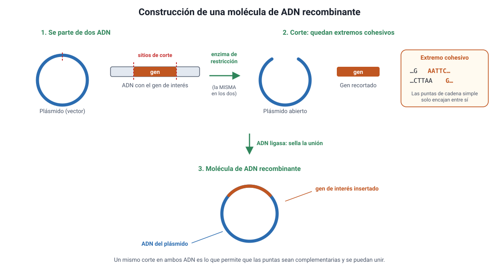
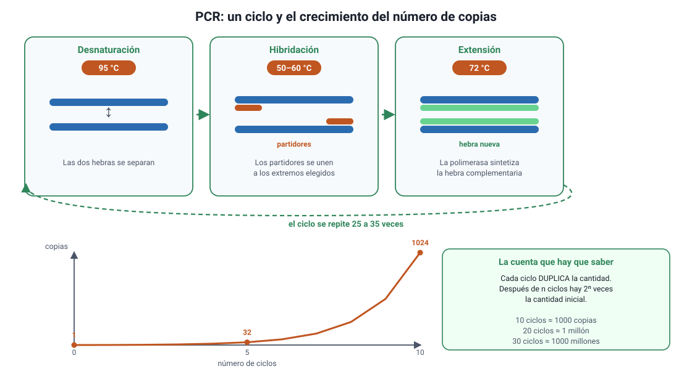
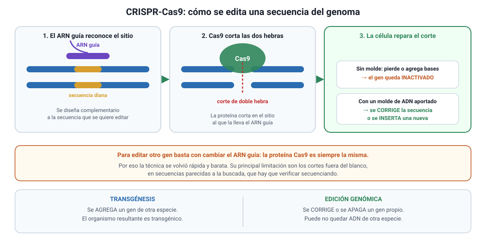
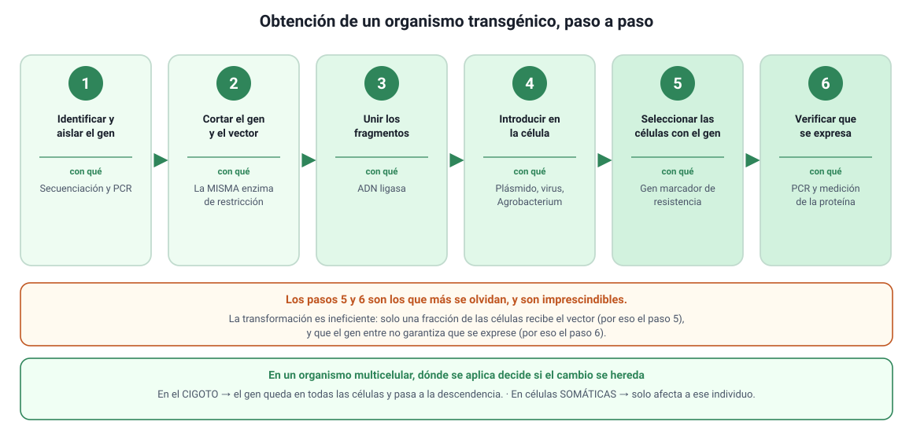
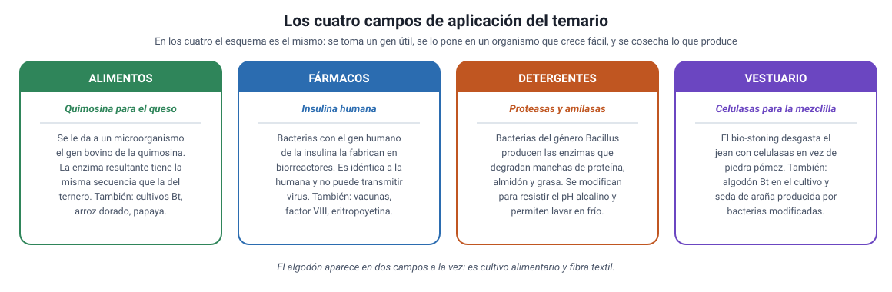

Capítulo 7: Manipulación genética
Área temática: Herencia y evolución
En 1982 se aprobó el primer medicamento fabricado por bacterias a las que se les había entregado un gen humano. Hasta entonces, la insulina se extraía del páncreas de animales de matadero. Ese cambio, y todos los que siguieron, se apoyan en un hecho que ya conoces: el ADN funciona igual en todos los seres vivos, de modo que un gen humano puesto en una bacteria se lee y se traduce sin problema.
En este capítulo vas a aprender qué es exactamente la manipulación genética y en qué se diferencia de la selección artificial de toda la vida; cómo se llegó hasta aquí, desde las primeras tijeras moleculares hasta CRISPR; cuáles son las herramientas y qué hace cada una; los seis pasos para obtener un organismo transgénico; y sus aplicaciones en los cuatro campos que nombra el temario: alimentos, fármacos, detergentes y vestuario. Termina con la discusión sobre bioética, bioseguridad y regulación, incluida la situación chilena. Cubre el conocimiento 3.3 del temario oficial DEMRE 2027.
1. Conceptos claveIA:123
| Concepto | Definición breve |
|---|---|
| Biotecnología | Uso de organismos vivos, o de sus componentes, para obtener un producto o un servicio útil. |
| Manipulación genética (ingeniería genética) | Conjunto de técnicas que permiten modificar de forma dirigida el ADN de un organismo. |
| ADN recombinante | Molécula de ADN formada por fragmentos de dos orígenes distintos unidos en el laboratorio. |
| Organismo transgénico | Organismo que lleva en su genoma un gen proveniente de otra especie. |
| Organismo genéticamente modificado (OGM) | Todo organismo cuyo ADN fue alterado por técnicas de laboratorio. Incluye a los transgénicos y también a los editados sin agregar genes ajenos. |
| Gen de interés | Fragmento de ADN que codifica la característica que se quiere transferir o modificar. |
| Enzima de restricción | Enzima bacteriana que corta el ADN en una secuencia específica de pocos nucleótidos. |
| Extremos cohesivos | Puntas de cadena simple que quedan tras ciertos cortes y que permiten unir dos fragmentos complementarios. |
| ADN ligasa | Enzima que une covalentemente dos fragmentos de ADN. |
| Vector | Molécula de ADN que transporta el gen de interés al interior de una célula. El más usado es el plásmido. |
| Plásmido | Molécula de ADN circular, pequeña e independiente del cromosoma, presente en muchas bacterias. |
| Célula hospedera | Célula que recibe el ADN recombinante y lo replica junto con el suyo. |
| Transformación | Incorporación de ADN externo por una célula. |
| Clon | Conjunto de células u organismos genéticamente idénticos, derivados de un mismo antecesor. |
| Clonación de un gen | Obtención de muchas copias idénticas de un fragmento de ADN. |
| PCR (reacción en cadena de la polimerasa) | Técnica que produce millones de copias de un fragmento de ADN en pocas horas. |
| Partidor (primer) | Fragmento corto de ADN que delimita la región que la polimerasa va a copiar en una PCR. |
| Electroforesis en gel | Técnica que separa fragmentos de ADN según su tamaño haciéndolos migrar en un campo eléctrico. |
| Secuenciación | Determinación del orden exacto de los nucleótidos de un fragmento de ADN. |
| CRISPR-Cas9 | Sistema de edición genómica que corta el ADN en un sitio elegido, guiado por una molécula de ARN. |
| Edición genómica | Modificación precisa de una secuencia ya presente en el genoma, sin necesidad de introducir genes de otra especie. |
| Proteína recombinante | Proteína producida por un organismo que recibió el gen correspondiente de otra especie. |
| Terapia génica | Tratamiento que busca corregir una enfermedad modificando el material genético de las células del paciente. |
| Bioseguridad | Conjunto de normas y prácticas destinadas a evitar los riesgos del trabajo con organismos modificados. |
2. Qué es la manipulación genéticaIA:45
La manipulación genética, o ingeniería genética, es el conjunto de técnicas que permiten modificar de forma dirigida el ADN de un organismo: agregarle un gen, quitárselo, corregirlo o cambiar cuánto se expresa.
Lo que la hace posible es un hecho del capítulo 6: el ADN funciona igual en todos los seres vivos. El código genético es prácticamente universal, de modo que un gen humano insertado en una bacteria se transcribe y se traduce allí, y la bacteria fabrica la proteína humana. Sin esa universalidad, nada de este capítulo existiría.
a. No es lo mismo que la selección artificialIA:678
El ser humano lleva unos 10 000 años modificando el genoma de otras especies. La diferencia está en cómo.
| Selección artificial (domesticación, mejoramiento) | Manipulación genética | |
|---|---|---|
| Qué se modifica | El conjunto del genoma, sin saber qué genes | Un gen o unos pocos genes identificados |
| Cómo | Eligiendo como reproductores a los individuos con la característica deseada | Cortando e insertando ADN en el laboratorio |
| Origen de las variantes | Las que ya existen en la especie o en especies cruzables | Pueden venir de cualquier especie |
| Tiempo | Muchas generaciones | Una generación |
| Precisión | Baja: se arrastran genes vecinos indeseados | Alta: se controla qué secuencia entra |
El maíz es un OGM de 9000 años. El maíz actual proviene del teosinte, un pasto silvestre mexicano de mazorcas diminutas y granos duros. No se parecen en nada, y sin embargo nadie llama transgénico al maíz común: el cambio se logró por selección artificial, generación tras generación. Esto importa para responder bien en la PAES: modificar el genoma de otra especie no es una novedad; lo nuevo es la precisión y la posibilidad de cruzar la barrera entre especies.
b. Transgénico, OGM y editado: tres términos que no son sinónimosIA:91011
| Término | Qué significa | Ejemplo |
|---|---|---|
| OGM | Cualquier organismo cuyo ADN fue modificado en el laboratorio. Es el término más amplio | Todos los de esta fila y las siguientes |
| Transgénico | OGM que lleva un gen de otra especie | Maíz con un gen de la bacteria Bacillus thuringiensis |
| Cisgénico | OGM que lleva un gen de su misma especie o de una cruzable | Manzano con un gen de resistencia tomado de un manzano silvestre |
| Editado | OGM al que se le corrigió o inactivó una secuencia propia, sin agregar ADN ajeno | Champiñón al que se le desactivó el gen del pardeamiento |
Dónde se falla. «Transgénico» y «OGM» no son intercambiables: todo transgénico es un OGM, pero no todo OGM es transgénico. Un organismo editado con CRISPR al que solo se le apagó un gen propio no contiene ADN de otra especie, y por eso varios países lo regulan de manera distinta. Si una alternativa afirma que todo OGM contiene genes de otra especie, es incorrecta.
c. Qué se puede y qué no se puede hacerIA:121314
Conviene fijar los límites, porque muchos distractores de la PAES los cruzan:
- Se puede transferir un gen entre especies muy lejanas, porque el código genético es universal.
- Se puede hacer que una bacteria fabrique una proteína humana, y eso no convierte a la bacteria en humana ni en algo parecido: solo sigue las instrucciones de ese gen.
- No se puede transferir una característica que no dependa de un gen identificado. La inteligencia, por ejemplo, depende de miles de genes y del ambiente.
- No se puede modificar el genoma de un organismo ya adulto de manera completa: en un organismo multicelular, la modificación debe hacerse en el cigoto o en células germinales para que esté en todas las células y se herede.
- No hereda el cambio quien recibe una terapia génica en células somáticas: sus hijos no lo tendrán, porque la línea germinal no se modificó.
3. Origen e historia de la manipulación genéticaIA:1516
La manipulación genética no apareció de golpe: fue el resultado de encadenar descubrimientos que, por separado, no servían para modificar nada.
a. Los tres descubrimientos que la hicieron posibleIA:171819
- La estructura del ADN (1953, Watson, Crick, con los datos de difracción de rayos X de Rosalind Franklin). Sin saber que el ADN es una doble hélice complementaria, no hay forma de pensar en cortarlo y pegarlo.
- El código genético (década de 1960). Al descifrarse qué codón corresponde a qué aminoácido, quedó claro que el código es el mismo en bacterias, plantas y animales. Esa universalidad es lo que permite que un gen funcione en otra especie.
- Las enzimas de restricción (fines de los 60 y comienzos de los 70). Las bacterias las usan para destruir el ADN de los virus que las infectan. Al descubrirlas, se dispuso por primera vez de tijeras moleculares que cortan en un sitio predecible.
b. La línea de tiempoIA:202122
| Año | Hito | Por qué importa |
|---|---|---|
| 1953 | Modelo de la doble hélice | Se entiende la estructura que se va a manipular |
| 1973 | Cohen y Boyer obtienen el primer ADN recombinante funcional: cortan un plásmido bacteriano, le insertan un fragmento de otro origen y logran que Escherichia coli lo replique | Nace la tecnología del ADN recombinante |
| 1975 | Conferencia de Asilomar: unos 140 científicos acuerdan voluntariamente normas de contención antes de seguir experimentando | Primer marco de bioseguridad, definido por la propia comunidad científica |
| 1976 | Se funda Genentech, la primera empresa de biotecnología | La técnica sale del laboratorio académico |
| 1982 | Se aprueba la insulina humana recombinante (Humulin), producida por bacterias | Primer fármaco recombinante en el mercado |
| 1983 | Primeras plantas transgénicas | La técnica llega a la agricultura |
| 1985 | Se desarrolla la PCR | Copiar un fragmento de ADN deja de ser el cuello de botella |
| 1990 | Se autoriza la quimosina producida por fermentación para hacer queso | Primer OGM aplicado en un alimento de consumo masivo |
| 1996 | Nace Dolly, primer mamífero clonado a partir de una célula adulta | Se demuestra que el núcleo de una célula diferenciada conserva toda la información |
| 2003 | Se completa el Proyecto Genoma Humano | Se dispone del texto completo que se quiere leer y corregir |
| 2012 | Se describe el uso de CRISPR-Cas9 como herramienta de edición | Editar el genoma se vuelve rápido y barato |
| 2020 | Premio Nobel de Química a Charpentier y Doudna por CRISPR-Cas9 | Reconocimiento del cambio de escala de la técnica |
c. Asilomar: la ciencia se pone límites a sí mismaIA:232425
Vale la pena detenerse aquí, porque es un episodio que la PAES puede usar como contexto de una pregunta sobre el quehacer científico.
Apenas se demostró que se podía mover ADN entre especies, los propios investigadores advirtieron que no sabían qué riesgos implicaba. En vez de seguir, declararon una pausa voluntaria y convocaron una conferencia en Asilomar, California, en febrero de 1975. De allí salieron normas de contención según el riesgo de cada experimento: qué cepas usar, qué condiciones de laboratorio exigir y qué experimentos no hacer por el momento.
Lo que muestra Asilomar. La ciencia no es solo un método para obtener conocimiento: también incluye decisiones sobre qué se debe investigar y cómo. Que la moratoria la propusieran los propios científicos, antes de que existiera ninguna ley, es el ejemplo más citado de autorregulación científica. La contracara es que esas normas voluntarias no tienen fuerza legal, y por eso hoy la actividad está regulada por organismos del Estado (sección 9).
d. De cortar y pegar a escribir y corregirIA:262728
Conviene ver la historia como un cambio de capacidad, no como una acumulación de fechas:
| Etapa | Qué se podía hacer | Limitación |
|---|---|---|
| ADN recombinante (desde 1973) | Agregar un gen completo a un organismo | El gen se inserta en un lugar del genoma que no se controla |
| PCR y secuenciación (desde los 80) | Copiar y leer cualquier fragmento | Permiten trabajar con el ADN, pero no modificarlo en el organismo |
| Edición genómica (desde 2012) | Corregir, apagar o cambiar una secuencia en el sitio exacto | Pueden producirse cortes en sitios parecidos al buscado |
La pregunta que se repite. Si un enunciado describe que a un organismo se le agregó un gen de otra especie, se trata de transgénesis. Si describe que se corrigió una letra o se inactivó un gen propio, se trata de edición genómica. La distinción decide la respuesta en muchos ítems, y también explica por qué la regulación de ambos casos es distinta.
4. Las herramientas: cortar, pegar, copiar y leer el ADNIA:2930
Toda la manipulación genética se apoya en un puñado de herramientas. Conviene aprenderlas por lo que hacen, porque así se responde cualquier pregunta que las combine.
a. Enzimas de restricción: las tijerasIA:313233
Son enzimas bacterianas que cortan el ADN solo donde encuentran una secuencia determinada, llamada sitio de reconocimiento, de cuatro a ocho pares de bases. Cada enzima tiene el suyo.
Por ejemplo, la enzima EcoRI reconoce la secuencia GAATTC y corta entre la G y la A en ambas hebras, de forma desplazada:
5' ...G A A T T C... 3'
3' ...C T T A A G... 5'
El corte desplazado deja extremos cohesivos: puntas de cadena simple que pueden aparearse con cualquier otro fragmento cortado por la misma enzima, venga de donde venga.

Por qué importa que sea la misma enzima. Si el plásmido y el gen se cortan con enzimas distintas, sus extremos cohesivos no son complementarios y no se pueden unir. Cuando un ítem pregunta qué enzima usar, la respuesta correcta casi siempre es la misma en ambos ADN, justamente para que las puntas encajen.
b. ADN ligasa: el pegamentoIA:343536
Los extremos cohesivos se aparean por puentes de hidrógeno, que son débiles. La ADN ligasa forma el enlace covalente que une definitivamente las hebras. Es la misma enzima que sella los fragmentos durante la replicación del ADN.
c. Vectores: el vehículoIA:373839
Un vector es una molécula de ADN capaz de entrar en una célula y replicarse allí. El más usado es el plásmido bacteriano, que aporta tres cosas:
- Un origen de replicación, para que la célula lo copie.
- Un sitio de corte donde insertar el gen.
- Un gen marcador, normalmente de resistencia a un antibiótico, que permite identificar después a las bacterias que sí recibieron el plásmido.
Para qué sirve el marcador. La transformación es ineficiente: solo una fracción de las bacterias incorpora el plásmido. Si después se las cultiva en un medio con el antibiótico, mueren todas las que no lo recibieron y crecen únicamente las que sí. El antibiótico no modifica nada: actúa como un filtro. Es un ejemplo de selección aplicada en el laboratorio.
Otros vectores: virus modificados (muy usados en terapia génica, porque son eficientes para entrar en células animales), la bacteria Agrobacterium tumefaciens (que transfiere ADN a células vegetales de forma natural) y métodos físicos como la biobalística, que dispara micropartículas recubiertas de ADN.
d. PCR: la fotocopiadoraIA:404142
La reacción en cadena de la polimerasa produce millones de copias de un fragmento de ADN en pocas horas. Necesita cuatro ingredientes: el ADN molde, dos partidores que delimitan la región a copiar, nucleótidos libres y una ADN polimerasa resistente al calor (la clásica proviene de una bacteria de aguas termales).

Cada ciclo tiene tres pasos y duplica la cantidad de fragmento:
| Paso | Temperatura aproximada | Qué ocurre |
|---|---|---|
| Desnaturación | 95 °C | Las dos hebras se separan |
| Hibridación | 50–60 °C | Los partidores se unen a los extremos de la región elegida |
| Extensión | 72 °C | La polimerasa sintetiza la hebra complementaria |
La cuenta que la PAES sí pide. Como cada ciclo duplica, después de n ciclos hay 2n veces la cantidad inicial. Con 10 ciclos son 210 ≈ 1000 copias por molécula inicial; con 20 ciclos, cerca de un millón; con 30, más de mil millones. Si el enunciado da el número de ciclos y pide el número de copias, la respuesta es una potencia de dos, no una multiplicación.
e. Electroforesis en gel: la reglaIA:434445
Separa fragmentos de ADN por su tamaño. Se depositan las muestras en un gel y se aplica un campo eléctrico; como el ADN tiene carga negativa por sus grupos fosfato, migra hacia el polo positivo. Los fragmentos pequeños avanzan más rápido y llegan más lejos; los grandes quedan cerca del punto de partida. Comparando con un patrón de tamaños conocidos se estima cuánto mide cada banda.
Para qué se usa en la práctica. Para comprobar que una PCR funcionó y que amplificó el fragmento del tamaño esperado; para verificar que un plásmido recibió el inserto; y para comparar muestras, que es la base de las pruebas de paternidad y de la identificación forense.
f. Secuenciación: la lecturaIA:464748
Determina el orden exacto de los nucleótidos. Es lo que permite saber si una edición quedó bien hecha, diagnosticar una mutación o comparar especies (capítulo 9). Su costo se ha desplomado: el primer genoma humano tomó unos trece años y miles de millones de dólares, y hoy secuenciar un genoma completo toma días.
g. CRISPR-Cas9: el correctorIA:495051
Es un sistema de defensa de las bacterias contra los virus, adaptado como herramienta. Tiene dos componentes:
- Un ARN guía, diseñado en el laboratorio, complementario a la secuencia que se quiere modificar.
- La proteína Cas9, una nucleasa que corta las dos hebras del ADN en el sitio al que la lleva el ARN guía.

Tras el corte, la célula lo repara, y ahí ocurre la modificación:
- Si repara uniendo los extremos, suele perder o agregar algunas bases, y el gen queda inactivado.
- Si se le entrega además un molde de ADN, puede usarlo para corregir la secuencia o insertar una nueva.
Lo que cambió CRISPR. Antes, dirigir una modificación a un sitio determinado exigía diseñar una proteína a medida para cada blanco, lo que era lento y caro. Con CRISPR basta con cambiar el ARN guía, que se sintetiza en días. Por eso la técnica se extendió tan rápido. Su principal limitación son los cortes fuera del blanco, en secuencias parecidas a la buscada, que hay que verificar secuenciando.
h. Resumen: qué herramienta usar para quéIA:525354
| Objetivo | Herramienta |
|---|---|
| Cortar el ADN en un sitio conocido | Enzima de restricción |
| Unir dos fragmentos | ADN ligasa |
| Llevar un gen al interior de una célula | Vector: plásmido, virus, Agrobacterium, biobalística |
| Obtener muchas copias de un fragmento | PCR |
| Comprobar el tamaño de un fragmento | Electroforesis en gel |
| Conocer la secuencia exacta | Secuenciación |
| Corregir o apagar un gen ya presente | CRISPR-Cas9 |
5. Cómo se obtiene un organismo transgénicoIA:5556
El procedimiento es siempre el mismo, cambie el organismo y cambie el objetivo. Conviene memorizar los seis pasos, porque la PAES suele entregar el procedimiento desordenado y pedir el orden, o preguntar qué ocurre si se omite uno.

| Paso | Qué se hace | Con qué herramienta |
|---|---|---|
| 1. Identificar y aislar el gen | Se localiza el gen responsable de la característica y se obtienen copias | Secuenciación y PCR |
| 2. Cortar el gen y el vector | Se corta el ADN que contiene el gen y el plásmido, con la misma enzima, para que los extremos encajen | Enzima de restricción |
| 3. Unir | Los extremos cohesivos se aparean y se sellan: queda el ADN recombinante | ADN ligasa |
| 4. Introducir en la célula | El vector entra en la célula hospedera | Transformación, virus, Agrobacterium o biobalística |
| 5. Seleccionar | Se identifican las células que sí incorporaron el vector y se descartan las demás | Gen marcador (resistencia a antibiótico) |
| 6. Verificar | Se comprueba que el gen está y que se expresa | PCR, electroforesis, secuenciación, medición de la proteína |
a. Por qué el paso 5 es imprescindibleIA:575859
La transformación es ineficiente: de millones de células tratadas, solo una fracción incorpora el vector. Sin un método de selección habría que revisar una por una. El gen marcador resuelve el problema: al cultivar en un medio con el antibiótico, solo sobreviven las células que recibieron el plásmido, porque solo ellas tienen el gen de resistencia.
Un error frecuente. El antibiótico no hace que las bacterias incorporen el plásmido ni las vuelve resistentes: solo elimina a las que no lo tienen. Es exactamente la lógica de la selección natural del capítulo 9, aplicada a propósito en una placa de cultivo. Si una alternativa dice que el antibiótico «induce» la resistencia o «obliga» a incorporar el vector, es incorrecta.
b. Por qué el paso 6 no se puede saltarIA:606162
Que el gen entre no garantiza que funcione. Puede haberse insertado en un lugar del genoma donde no se transcribe, o haberse cortado al insertarse. Por eso se verifica en dos niveles:
- ¿Está el gen? Se comprueba con PCR y electroforesis: si aparece una banda del tamaño esperado, la secuencia está presente.
- ¿Se expresa? Se mide la proteína o el ARN mensajero correspondiente. Solo entonces se puede afirmar que el organismo produce lo buscado.
c. Un caso concreto: la insulina humanaIA:636465
Es el ejemplo más citado y conviene tenerlo completo:
- Se identifica y se obtiene el gen humano de la insulina.
- Se corta un plásmido de Escherichia coli con la misma enzima de restricción.
- La ligasa une el gen al plásmido: queda el ADN recombinante.
- El plásmido se introduce en las bacterias.
- Se seleccionan las bacterias transformadas con el gen marcador.
- Se cultivan en biorreactores; como leen el gen humano, fabrican insulina humana, que después se purifica.
Por qué fue un cambio enorme. Antes de 1982 la insulina se extraía del páncreas de cerdos y vacas de mataderos. Era escasa, dependía de la industria cárnica, su estructura no era idéntica a la humana y provocaba reacciones alérgicas en parte de los pacientes. La insulina recombinante es idéntica a la humana, se produce en la cantidad que se necesite y no depende de animales. Fue el primer fármaco recombinante aprobado, en 1982.
d. Diferencias según el organismoIA:666768
| Organismo | Cómo entra el ADN | Particularidad |
|---|---|---|
| Bacteria | Transformación con plásmido | La más simple y rápida; no modifica proteínas como lo hacen las células humanas |
| Levadura | Plásmido | Es eucarionte, así que procesa mejor las proteínas humanas complejas |
| Planta | Agrobacterium tumefaciens o biobalística | Desde una sola célula transformada se puede regenerar la planta completa |
| Animal | Microinyección en el cigoto, o vectores virales | Debe hacerse en el cigoto para que el gen esté en todas las células y se herede |
Cigoto o célula somática: la distinción que decide la respuesta. Si la modificación se hace en el cigoto, estará en todas las células del organismo y se heredará. Si se hace en células somáticas de un individuo ya formado, como en la terapia génica, afectará solo a esas células y no pasará a la descendencia. Muchos ítems se resuelven identificando en qué célula se aplicó la técnica.
6. Aplicaciones en alimentos y agriculturaIA:6970
El temario DEMRE 2027 nombra cuatro campos de aplicación: alimentos, detergentes, vestuario y fármacos. Los cuatro aparecen en esta sección y en las dos siguientes.

a. Cultivos transgénicos: para qué se modificanIA:717273
Casi toda la superficie transgénica del mundo corresponde a dos características, y conviene no confundirlas:
| Característica | Qué se le agregó | Para qué sirve |
|---|---|---|
| Resistencia a insectos (Bt) | Un gen de la bacteria Bacillus thuringiensis que codifica una proteína tóxica para ciertas larvas | La planta se defiende sola; se reduce la aplicación de insecticidas |
| Tolerancia a herbicidas | Una versión de la enzima que el herbicida bloquea, que el herbicida no reconoce | Se puede aplicar el herbicida sin dañar el cultivo |
El error clásico con el maíz Bt. La planta Bt no produce insecticida químico: produce una proteína que resulta tóxica solo para las larvas de ciertos insectos, porque actúa sobre receptores de su intestino, que es alcalino. No afecta de igual modo a los mamíferos. Y tampoco es «resistente a todos los insectos»: solo a los que tienen ese receptor.
b. Cuánto se cultivaIA:747576
En 2024 la superficie mundial de cultivos genéticamente modificados alcanzó unos 210 millones de hectáreas, más del 12 % de la superficie cultivable del planeta. Cuatro especies concentran casi todo:
| Cultivo | Superficie aproximada (millones de ha) |
|---|---|
| Soya | 105 |
| Maíz | 68 |
| Algodón | 25 |
| Canola | 10 |
Estados Unidos, Brasil y Argentina son los mayores productores. Nótese que el algodón aparece aquí y volverá a aparecer en la sección 8: es un cultivo alimentario y textil a la vez.
c. Alimentos: más allá del cultivoIA:777879
- Quimosina para el queso. La quimosina es la enzima que coagula la leche. Tradicionalmente se extraía del cuajo del estómago de terneros lactantes. Desde 1990 se produce por fermentación, con microorganismos que recibieron el gen bovino: la enzima resultante tiene la misma secuencia de aminoácidos que la del ternero. Hoy la mayor parte del queso industrial se hace así, y eso permite además quesos aptos para dietas vegetarianas.
- Papaya resistente a virus. En Hawái, la papaya transgénica resistente al virus de la mancha anillada rescató un cultivo que estaba colapsando.
- Arroz dorado. Se le insertaron genes que le permiten acumular betacaroteno, precursor de la vitamina A, en el grano. Fue diseñado para combatir la deficiencia de vitamina A, causa de ceguera infantil en varias regiones. Es un caso interesante porque el beneficio buscado es nutricional y no agronómico.
- Champiñón sin pardeamiento. Editado con CRISPR para inactivar un gen propio: no contiene ADN de otra especie. Es el ejemplo típico de la diferencia entre editar y transgénesis.
d. El caso chilenoIA:808182
Chile ocupa una posición particular, que conviene tener clara:
- No se cultivan transgénicos para consumo interno. Lo que sí está permitido, y desde 1992, es la producción de semilla transgénica para exportación, bajo medidas estrictas de aislamiento y autorización del Servicio Agrícola y Ganadero (SAG).
- Chile sí importa alimentos derivados de cultivos transgénicos, sobre todo maíz y soya destinados a alimentación animal.
- El aprovechamiento del contraestación es lo que explica el negocio: mientras en el hemisferio norte es invierno, aquí se multiplica semilla.
Por qué Chile es buen productor de semilla. Las mismas barreras geográficas del capítulo 9 —el desierto, la cordillera, el océano— funcionan aquí como aislamiento sanitario y reproductivo, que es justo lo que exige un semillero: reduce plagas y reduce el riesgo de que el polen del cultivo llegue a otras plantaciones. Una condición evolutiva se convierte en una ventaja productiva.
e. Cómo lo pregunta la PAESIA:838485
Los ítems sobre este contenido rara vez piden recordar un ejemplo. Piden, sobre todo:
- Distinguir la característica introducida de sus consecuencias: qué gen se agregó y qué efecto produce.
- Evaluar un diseño experimental que compare un cultivo modificado con uno convencional: qué variable se controla, cuál es el grupo control.
- Analizar datos de rendimiento, de uso de plaguicidas o de superficie sembrada.
- Juzgar una afirmación sobre riesgos o beneficios según la evidencia entregada.
7. Aplicaciones en fármacos y saludIA:8687
Es el campo donde la manipulación genética tuvo su primer éxito comercial y donde su impacto es menos discutido.
a. Proteínas recombinantes como medicamentosIA:888990
La idea es siempre la misma: se le entrega a un microorganismo, o a un cultivo celular, el gen humano de una proteína, y este la fabrica. Después se purifica y se usa como fármaco.
| Fármaco | Para qué sirve | Antes se obtenía de |
|---|---|---|
| Insulina | Diabetes | Páncreas de cerdos y vacas de matadero |
| Hormona del crecimiento | Déficit de crecimiento | Hipófisis de cadáveres humanos |
| Factor VIII de coagulación | Hemofilia A | Plasma de miles de donantes |
| Eritropoyetina (EPO) | Anemias graves, insuficiencia renal | No había producción a escala |
| Interferones | Algunas infecciones virales y cánceres | No había producción a escala |
El problema que resolvió, y que se olvida. Obtener estos fármacos de tejidos humanos o animales no era solo caro: era peligroso. La hormona del crecimiento extraída de hipófisis humanas transmitió la enfermedad de Creutzfeldt-Jakob a algunos pacientes, y el factor VIII obtenido de plasma contaminado transmitió VIH y hepatitis a personas con hemofilia en los años ochenta. Una proteína recombinante, producida por bacterias en un biorreactor, no puede transmitir un virus humano. La ventaja principal es sanitaria, no económica.
b. Vacunas recombinantesIA:919293
En una vacuna tradicional se usa el patógeno completo, inactivado o atenuado. En una vacuna recombinante se produce solo una proteína del patógeno, la que el sistema inmune reconoce, en levaduras o en cultivos celulares. El organismo aprende a reconocerla sin haber estado nunca en contacto con el patógeno vivo.
La vacuna contra la hepatitis B fue la primera de este tipo en uso masivo: se fabrica haciendo que levaduras produzcan una proteína de la superficie del virus.
Por qué es más segura. Como la vacuna contiene una sola proteína y no el virus completo, no existe la posibilidad de que el patógeno recupere su capacidad de causar enfermedad. Ese es el argumento sanitario central, y es el que conviene tener a mano si un ítem pide comparar los dos tipos de vacuna.
c. Terapia génicaIA:949596
Busca tratar una enfermedad corrigiendo el problema genético que la causa, en vez de compensar sus síntomas. Se introduce en las células del paciente una copia funcional del gen, o se corrige el gen defectuoso, normalmente con un virus modificado como vector o con edición genómica.
Distinción esencial:
| Tipo | En qué células | ¿Se hereda? |
|---|---|---|
| Somática | Células del cuerpo del paciente, por ejemplo de la médula ósea | No. El cambio muere con el paciente |
| Germinal | Gametos o cigoto | Sí, pasaría a toda la descendencia |
La terapia génica somática se aplica hoy en enfermedades como algunas inmunodeficiencias hereditarias y ciertas anemias. La germinal en seres humanos está prohibida en prácticamente todos los países, porque modifica a personas que no pueden consentir y el cambio se transmite indefinidamente.
El caso que fijó el límite. En 2018, un investigador anunció en China el nacimiento de dos niñas cuyos embriones había editado con CRISPR. La reacción de la comunidad científica internacional fue de condena prácticamente unánime, y el responsable fue condenado a prisión en su país. El episodio no se discute por la técnica en sí, sino porque se hizo sin necesidad médica establecida, sin transparencia y sobre la línea germinal.
d. Diagnóstico e identificaciónIA:979899
Algunas de las aplicaciones más cotidianas no son tratamientos, sino formas de saber:
- Diagnóstico molecular. La PCR detecta el material genético de un patógeno con enorme sensibilidad, incluso antes de que aparezcan síntomas. Es la base de las pruebas que se popularizaron durante la pandemia de COVID-19.
- Pruebas genéticas. Secuenciar permite detectar mutaciones asociadas a enfermedades hereditarias o a la respuesta a ciertos fármacos.
- Identificación forense y pruebas de paternidad. Se comparan regiones del ADN muy variables entre personas. Se amplifican con PCR y se separan por electroforesis: el patrón de bandas funciona como una huella.
Lo que una huella genética sí y no dice. Permite afirmar con altísima probabilidad que dos muestras provienen de la misma persona, o establecer un parentesco. No permite deducir que alguien cometió un delito: que su ADN esté en un lugar indica que estuvo o que su material llegó allí, no cómo ni cuándo. En los ítems de habilidad Evaluar, la alternativa que concluye culpabilidad a partir de una coincidencia de ADN suele ser el distractor.
e. Animales y plantas como productores de fármacosIA:100101102
Existe una variante llamada a veces biofarmacia: se obtienen animales o plantas transgénicos que producen la proteína terapéutica en un tejido del que se pueda extraer con facilidad, por ejemplo en la leche de una cabra. Reduce costos para proteínas complejas que las bacterias no pueden fabricar correctamente, y plantea cuestiones propias de bienestar animal.
8. Aplicaciones industriales: detergentes y vestuarioIA:103104
Estos dos campos aparecen nombrados de forma explícita en el temario y suelen ser los menos conocidos. Ambos se apoyan en la misma idea: usar microorganismos modificados como fábricas de enzimas.
a. Por qué las enzimas son tan útiles en la industriaIA:105106107
Una enzima es un catalizador biológico: acelera una reacción específica y funciona en condiciones suaves, a temperatura moderada y sin ácidos ni solventes agresivos. Comparada con un proceso químico equivalente, una enzima suele significar menos energía, menos residuos y más precisión.
El problema histórico era conseguirlas en cantidad. La manipulación genética lo resolvió: se toma el gen de la enzima, se introduce en una bacteria o un hongo de cultivo fácil, y se produce en biorreactores. Hoy la gran mayoría de las enzimas industriales del mercado provienen de microorganismos recombinantes.
b. DetergentesIA:108109110
Las manchas son, en su mayoría, moléculas grandes que el agua no disuelve. Cada tipo de mancha necesita su enzima:
| Enzima | Qué degrada | Manchas típicas |
|---|---|---|
| Proteasas | Proteínas | Sangre, huevo, leche, transpiración |
| Amilasas | Almidón | Salsas, papas, pastas, chocolate |
| Lipasas | Grasas y aceites | Aceite, mantequilla, cosméticos |
| Celulasas | Celulosa superficial | No quitan una mancha: eliminan las microfibrillas que dan aspecto gastado y recuperan el color |
Las proteasas y amilasas de los detergentes provienen sobre todo de bacterias del género Bacillus, producidas por fermentación.
La ventaja ambiental es medible. Las enzimas permiten lavar a temperaturas más bajas y con menos detergente. Como buena parte de la energía de un lavado se gasta en calentar el agua, bajar la temperatura de lavado reduce directamente el consumo eléctrico. Además, las enzimas son proteínas: se degradan y no se acumulan en el ambiente, a diferencia de varios compuestos químicos a los que reemplazaron.
Por qué se modifican genéticamente. No solo para producirlas en cantidad. También para mejorarlas: se cambian aminoácidos de la enzima para que resista el pH alcalino del detergente, las temperaturas del lavado y la presencia de blanqueadores. Una enzima natural de Bacillus no sobreviviría en un detergente sin esas modificaciones.
c. Vestuario y textilesIA:111112113
Aquí la manipulación genética interviene en tres puntos distintos de la cadena, y conviene distinguirlos porque son tres cosas diferentes:
1. La fibra: algodón Bt. El algodón es uno de los cuatro grandes cultivos transgénicos, con unos 25 millones de hectáreas. La variedad Bt lleva el gen de Bacillus thuringiensis y resiste a las larvas que atacan la cápsula. El algodón es un cultivo históricamente intensivo en insecticidas, así que el efecto sobre su uso es significativo.
2. El procesamiento: enzimas. Es la aplicación más extendida:
| Proceso | Enzima | Qué reemplaza |
|---|---|---|
| Bio-stoning o desgastado de la mezclilla | Celulasas | Piedra pómez, que desgasta la tela y daña las máquinas |
| Biopulido | Celulasas | Tratamientos que eliminan las microfibrillas para dar una superficie más lisa y suave |
| Desencolado | Amilasas | Ácidos y agentes oxidantes que retiran el almidón usado al tejer |
| Descrudado | Pectinasas | Soda cáustica a alta temperatura |
3. La fibra nueva: proteínas recombinantes. Se han producido en bacterias modificadas proteínas que no se pueden obtener de otro modo a escala, como la seda de araña, notable por su resistencia y elasticidad. Las arañas no se pueden criar en granjas, porque son territoriales y caníbales; producir la proteína en microorganismos y luego hilarla es la única vía practicable.
El que más aparece en la PAES. El bio-stoning es un buen contexto de ítem porque permite comparar dos procesos con un objetivo idéntico: el desgaste con piedra pómez y el desgaste con celulasas. Si un enunciado pide diseñar la comparación, las variables a controlar son el tipo de tela, el tiempo, la temperatura y la carga de la máquina; la variable independiente es el método, y la dependiente, el grado de desgaste o el daño a la fibra.
d. Otras aplicaciones industriales y ambientalesIA:114115116
- Biocombustibles. Microorganismos modificados que fermentan residuos vegetales y producen etanol.
- Biorremediación. Bacterias capaces de degradar hidrocarburos o metabolizar contaminantes en suelos y aguas.
- Papel. Enzimas que reemplazan parte de los compuestos clorados usados para blanquear la pulpa.
- Alimentación animal. Fitasas que liberan el fósforo del alimento, lo que reduce el fósforo excretado y, con ello, la contaminación de las aguas cercanas a los planteles.
e. Lo que tienen en común los cuatro campos del temarioIA:117118119
| Campo | Qué se modifica | Producto |
|---|---|---|
| Alimentos | Plantas, y microorganismos que producen enzimas | Cultivos resistentes, quimosina para el queso |
| Fármacos | Bacterias, levaduras y cultivos celulares | Insulina, vacunas, factores de coagulación |
| Detergentes | Bacterias y hongos | Proteasas, amilasas, lipasas, celulasas |
| Vestuario | Plantas y microorganismos | Algodón Bt, celulasas para mezclilla, seda recombinante |
En los cuatro casos el esquema es el mismo: se identifica un gen útil, se lo introduce en un organismo que crece bien y barato, y se cosecha lo que ese organismo produce. Cambia el gen y cambia el producto; el procedimiento de la sección 5 no cambia.
9. Bioética, bioseguridad y regulaciónIA:120121
Una técnica poderosa plantea preguntas que la técnica misma no responde. La PAES evalúa esto sobre todo con la habilidad Evaluar: se entrega una afirmación o una decisión y se pide juzgar si la evidencia la sostiene.
a. Los riesgos que se discuten, y qué dice la evidenciaIA:122123124
| Preocupación | Qué se teme | Qué muestra la evidencia disponible |
|---|---|---|
| Seguridad alimentaria | Que consumir un alimento transgénico dañe la salud | Tras tres décadas de consumo masivo, las revisiones de las principales academias de ciencias no han encontrado un riesgo atribuible al hecho de ser transgénico. Cada producto se evalúa por separado |
| Flujo de genes | Que el polen del cultivo transfiera el transgén a parientes silvestres o a cultivos vecinos | Es un riesgo real y documentado. Se maneja con distancias de aislamiento, barreras y desfases de floración |
| Resistencia de las plagas | Que las larvas se vuelvan resistentes a la toxina Bt | Es lo esperable por selección natural, y ya ha ocurrido. Se maneja con refugios: parcelas sin Bt donde sobreviven individuos sensibles |
| Pérdida de biodiversidad agrícola | Que unas pocas variedades comerciales desplacen a las locales | Es un problema real, pero anterior a los transgénicos: viene de la agricultura industrial |
| Concentración económica | Que las semillas patentadas aumenten la dependencia de los agricultores respecto de pocas empresas | Es una objeción socioeconómica, no biológica, y se discute como tal |
Cómo se separa el argumento en la PAES. Conviene distinguir tres tipos de objeción: las biológicas (flujo de genes, resistencia de plagas), que se responden con evidencia; las socioeconómicas (patentes, concentración), que no se resuelven con datos de laboratorio; y las que no distinguen caso por caso («los transgénicos son dañinos»), que no son evaluables porque tratan como una sola cosa a productos muy distintos entre sí. Una alternativa que generaliza sobre todos los OGM suele ser incorrecta.
b. El principio que ordena la discusiónIA:125126127
El riesgo no está en la técnica, sino en el producto concreto y su uso. Un maíz al que se le agregó resistencia a insectos y un arroz al que se le agregó betacaroteno se hicieron con el mismo procedimiento, pero plantean preguntas distintas y se evalúan por separado. Por eso la regulación es producto por producto y no técnica por técnica.
c. Bioseguridad: cómo se controla en la prácticaIA:128129130
- Contención en el laboratorio. Niveles de bioseguridad según el riesgo, herederos directos de los acuerdos de Asilomar de 1975 (sección 3).
- Evaluación previa. Antes de autorizar un OGM se estudian su composición, su potencial alergénico y su efecto sobre organismos no blanco.
- Trazabilidad y etiquetado. Varía mucho entre países: la Unión Europea exige etiquetar; Estados Unidos adoptó un sistema de divulgación; otros países no lo exigen.
- Monitoreo posterior. Seguimiento de las poblaciones de plagas para detectar resistencia, y de los cultivos vecinos para detectar flujo de genes.
d. La situación en ChileIA:131132133
| Aspecto | Situación |
|---|---|
| Cultivo para consumo interno | No autorizado |
| Semilla transgénica para exportación | Autorizada desde 1992, regulada por el SAG con medidas de aislamiento |
| Importación de alimentos derivados de OGM | Ocurre, sobre todo maíz y soya para alimentación animal |
| Etiquetado obligatorio | No existe una exigencia general |
| Cultivos editados | El SAG los evalúa caso a caso; si el resultado no contiene ADN de otra especie, puede tratarse como un cultivo convencional, criterio que organizaciones ciudadanas han cuestionado por falta de participación y de trazabilidad |
Un debate abierto, y por qué conviene conocerlo. El criterio de evaluar el producto y no la técnica lleva a que un organismo editado, sin genes ajenos, pueda quedar fuera del régimen de los transgénicos. Quienes lo defienden señalan que el resultado es indistinguible de una mutación espontánea o inducida, que se usa en mejoramiento desde hace décadas. Quienes lo objetan responden que sin registro ni etiquetado se pierde la trazabilidad y la posibilidad de elegir. Ninguna de las dos posiciones se resuelve con un dato de laboratorio: es una decisión sobre cómo se regula.
e. Las preguntas éticas de la edición humanaIA:134135136
Son distintas de las anteriores, porque no se trata de cultivos sino de personas:
- Somática o germinal. Modificar células del cuerpo de un paciente afecta solo a él. Modificar la línea germinal afecta a todos sus descendientes, que no pueden consentir. Por eso la segunda está prohibida en casi todos los países.
- Terapia o mejora. Corregir una mutación que causa una enfermedad grave tiene un objetivo médico claro. Seleccionar rasgos como la estatura o el color de ojos no lo tiene, y abre la cuestión de quién define qué rasgo es deseable.
- Acceso. Si las terapias génicas son muy costosas, corren el riesgo de ampliar las desigualdades en salud en vez de reducirlas.
- Consentimiento informado. Un embrión no puede consentir; un paciente adulto, sí, siempre que se le informe de la incertidumbre que aún existe.
Cómo responder un ítem de bioética. No se pide una opinión personal ni una postura a favor o en contra. Se pide identificar qué está en juego y si la evidencia entregada sostiene la conclusión. La alternativa correcta suele ser la que distingue con precisión entre lo que la evidencia muestra y lo que es una decisión de valor; las incorrectas o bien generalizan sobre toda la técnica, o bien presentan como hecho científico lo que es una elección social.
Ejemplos PAES resueltos
Cuatro preguntas del estilo de la PAES sobre manipulación genética, resueltas con el guion DEMRE. Intenta responder antes de leer la resolución.
Ejemplo 1 · Habilidad: Planificar y conducir una investigación
Un laboratorio quiere que una bacteria produzca una proteína humana. Dispone del ADN humano que contiene el gen, de plásmidos y de cuatro enzimas de restricción distintas (P, Q, R y S), cada una con su propio sitio de reconocimiento.
¿Qué criterio debe seguir al elegir la enzima para cortar el gen y el plásmido?
- A) Cortar el gen con la enzima P y el plásmido con la enzima Q, para que los extremos sean distintos.
- B) Cortar ambos ADN con la misma enzima, para que los extremos cohesivos sean complementarios.
- C) Cortar el gen con las cuatro enzimas, para asegurar que quede completamente aislado.
- D) Cortar el plásmido con las cuatro enzimas, para aumentar la cantidad de sitios disponibles.
Resolución. Esta pregunta evalúa la habilidad de planificar y conducir una investigación: elegir el procedimiento adecuado para lograr un objetivo. La tarea consiste en aplicar lo que se sabe sobre los extremos cohesivos.
Una enzima de restricción corta en una secuencia determinada y deja extremos cohesivos: puntas de cadena simple con una secuencia específica. Esas puntas solo se aparean con puntas complementarias, es decir, con las que deja la misma enzima. Si el gen y el plásmido se cortan con enzimas distintas, sus extremos no encajan y la ligasa no puede unirlos. Clave: B.
- A hace justamente lo contrario de lo necesario: extremos distintos impiden la unión. Relación inversa o inexistente.
- C fragmentaría el gen en varios trozos, en vez de aislarlo entero. Sobre-alcance.
- D abriría el plásmido en muchos puntos y lo destruiría como vector circular. Relación inversa o inexistente.
Qué hay que saber y saber hacer: conocer qué son los extremos cohesivos y deducir de ahí la condición sobre la enzima. Dato para la PAES: cuando el enunciado ofrece varias enzimas, la respuesta casi siempre es la misma en ambos ADN; es la comprobación más rápida para descartar alternativas.
Ejemplo 2 · Habilidad: Procesar y analizar la evidencia
Se realiza una PCR partiendo de una sola molécula de ADN molde. El equipo se programa para 20 ciclos y cada ciclo duplica la cantidad de fragmento.
¿Cuál es el orden de magnitud del número de copias al terminar?
- A) 40 copias
- B) 400 copias
- C) 20 000 copias
- D) 1 000 000 de copias
Resolución. Esta pregunta evalúa la habilidad de procesar y analizar la evidencia: aplicar una relación cuantitativa conocida. La tarea consiste en reconocer que el crecimiento es exponencial y no lineal.
Si cada ciclo duplica la cantidad, después de n ciclos hay 2n veces la cantidad inicial. Con 20 ciclos: 220 = 1 048 576, es decir, del orden de un millón de copias. Conviene anclar la cuenta en un valor conocido: 210 ≈ 1000, de modo que 220 = (210)2 ≈ 1000 × 1000. Clave: D.
- A resulta de multiplicar 20 × 2, es decir, de suponer un crecimiento lineal. Error de cálculo típico.
- B resulta de elevar 20 al cuadrado. Error de cálculo típico.
- C resulta de multiplicar 20 por 1000, mezclando ambos errores. Error de cálculo típico.
Qué hay que saber y saber hacer: distinguir crecimiento exponencial de crecimiento lineal y manejar potencias de dos. Atajo: memoriza que 210 ≈ mil, 220 ≈ un millón y 230 ≈ mil millones; con eso se resuelve cualquier ítem de PCR sin calculadora.
Ejemplo 3 · Habilidad: Evaluar
Un grupo de estudiantes transforma bacterias con un plásmido que lleva el gen de interés y un gen de resistencia a la ampicilina. Luego siembra las bacterias en un medio de cultivo con ampicilina y observa que crecen algunas colonias. Uno de ellos concluye: «La ampicilina hizo que las bacterias se volvieran resistentes».
¿Cuál es el error de esa conclusión?
- A) Confunde el gen de resistencia con el gen de interés del plásmido usado.
- B) Supone que el antibiótico genera la resistencia, cuando solo elimina a las no transformadas.
- C) Supone que la resistencia a la ampicilina no puede transmitirse a las células hijas.
- D) Confunde la transformación bacteriana con el proceso de conjugación entre bacterias.
Resolución. Esta pregunta evalúa la habilidad de evaluar: juzgar la consistencia de una conclusión frente al procedimiento realizado. La tarea consiste en identificar qué papel cumple realmente el antibiótico.
El plásmido ya traía el gen de resistencia antes de entrar en las bacterias. Al sembrar en un medio con ampicilina, mueren todas las bacterias que no incorporaron el plásmido y sobreviven las que sí. El antibiótico no induce nada: actúa como un filtro que permite identificar a las transformadas. Es el paso 5 del procedimiento. Clave: B.
- A describe una confusión que la conclusión citada no comete. Verdadero pero irrelevante.
- C afirma lo contrario de lo que ocurre: el plásmido se replica y pasa a las células hijas. Relación inversa o inexistente.
- D introduce un proceso distinto, que no forma parte del experimento descrito. Variable equivocada.
Qué hay que saber y saber hacer: conocer la función del gen marcador y distinguir seleccionar de inducir. Dato: es el mismo razonamiento del capítulo 9 sobre la resistencia a antibióticos en la naturaleza. Aquí la selección se aplica a propósito; allá ocurre sola. El mecanismo es idéntico.
Ejemplo 4 · Habilidad: Evaluar
Dos cultivos de tomate se comparan durante una temporada. El cultivo 1 corresponde a una variedad modificada genéticamente para resistir a un hongo; el cultivo 2, a la variedad convencional. Ambos se riegan y fertilizan igual, pero el cultivo 1 se sembró en un terreno con mejor drenaje.
Al final, el cultivo 1 produjo un 30 % más de fruta. El informe concluye que la modificación genética aumenta el rendimiento.
¿Cuál es la principal objeción a esa conclusión?
- A) El tamaño de la muestra es insuficiente para obtener conclusiones válidas.
- B) La variedad modificada y la convencional pertenecen a especies diferentes.
- C) El tipo de terreno difiere entre ambos cultivos y pudo influir en el resultado.
- D) El rendimiento debió medirse en kilogramos y no como un porcentaje.
Resolución. Esta pregunta evalúa la habilidad de evaluar: juzgar si un diseño permite atribuir un efecto a la variable estudiada. La tarea consiste en revisar qué variables quedaron controladas y cuáles no.
Para atribuir la diferencia a la modificación genética, todo lo demás debe mantenerse igual. El enunciado declara iguales el riego y la fertilización, pero informa una diferencia adicional: el drenaje del terreno. Como el drenaje afecta el rendimiento por sí solo, ambos factores quedan confundidos y no se puede saber cuánto aportó cada uno. Clave: C.
- A invoca el tamaño de muestra, sobre el que el enunciado no entrega información. Sub-alcance.
- B es falsa: ambas son variedades de la misma especie. Relación inversa o inexistente.
- D propone un cambio de unidad que no corrige el problema del diseño. Verdadero pero irrelevante.
Qué hay que saber y saber hacer: identificar variables independientes, dependientes y controladas, y detectar factores confundidos. Dato para la PAES: cuando un enunciado se detiene a mencionar una diferencia entre los grupos que no era necesaria para la historia, casi siempre es ahí donde está el problema del diseño.
Evaluación formativa
Veinte preguntas sobre manipulación genética, sus herramientas y sus aplicaciones. Responde todas y luego revisa las explicaciones.
1. ¿Qué hecho biológico hace posible que una bacteria fabrique una proteína humana a partir del gen humano correspondiente?
- Que las bacterias y los seres humanos tengan el mismo número de genes.
- Que las bacterias puedan absorber proteínas humanas del medio de cultivo.
- Que el código genético sea prácticamente el mismo en todos los seres vivos.
- Que las bacterias y los seres humanos compartan el mismo tipo de núcleo.
Respuesta correcta: C
Como el mismo codón especifica el mismo aminoácido en cualquier organismo, la bacteria lee el gen humano y sintetiza la proteína correcta. A es falsa; B describe absorción, no síntesis; D es falsa, porque las bacterias son procariontes y no tienen núcleo.
2. Un champiñón fue editado con CRISPR para inactivar un gen propio, sin incorporar ADN de otra especie. ¿Cómo debe clasificarse?
- Es un OGM, pero no es transgénico.
- Es un transgénico, pero no es un OGM.
- No es un OGM ni tampoco un transgénico.
- Es a la vez un OGM y un transgénico.
Respuesta correcta: A
OGM es todo organismo cuyo ADN fue modificado en el laboratorio; transgénico es el que lleva un gen de otra especie. Como solo se inactivó un gen propio, es OGM pero no transgénico. Todo transgénico es OGM, de modo que B es imposible.
3. ¿Cuál es la función de una enzima de restricción en la obtención de ADN recombinante?
- Unir de forma covalente los fragmentos de ADN de distinto origen.
- Transportar el gen de interés hacia el interior de la célula hospedera.
- Sintetizar millones de copias del fragmento de ADN seleccionado.
- Cortar el ADN en una secuencia específica de pocos nucleótidos.
Respuesta correcta: D
Las enzimas de restricción son las tijeras: reconocen un sitio determinado y cortan allí. Unir es función de la ADN ligasa (A), transportar es función del vector (B) y copiar es lo que hace la PCR (C).
4. Para insertar un gen en un plásmido, ¿por qué conviene cortar ambos ADN con la misma enzima de restricción?
- Porque así se reduce el número de enzimas que hay que comprar.
- Porque así los extremos cohesivos resultan complementarios y pueden unirse.
- Porque una sola enzima corta más rápido que dos enzimas distintas.
- Porque de ese modo el plásmido conserva su gen de resistencia intacto.
Respuesta correcta: B
Cada enzima deja extremos de cadena simple con una secuencia propia. Solo si ambos ADN fueron cortados por la misma enzima esas puntas se aparean y la ligasa puede sellarlas. Las demás alternativas invocan razones prácticas o falsas, ajenas al mecanismo.
5. En un plásmido usado como vector, ¿para qué sirve el gen de resistencia a un antibiótico?
- Para que el plásmido pueda replicarse dentro de la célula hospedera.
- Para que la célula hospedera produzca la proteína de interés en mayor cantidad.
- Para identificar, mediante cultivo con el antibiótico, las células que lo incorporaron.
- Para impedir que la enzima de restricción vuelva a cortar el plásmido ya cerrado.
Respuesta correcta: C
La transformación es ineficiente. Al cultivar con el antibiótico mueren las células sin plásmido y sobreviven las transformadas, que son las que se quieren. La replicación depende del origen de replicación (A); el gen marcador no afecta la producción de la proteína (B) ni el corte (D).
6. Una PCR parte de una molécula de ADN y se programan 10 ciclos. Si cada ciclo duplica la cantidad, ¿cuántas copias se obtienen aproximadamente?
- Alrededor de 1000
- Alrededor de 10 000
- Alrededor de 100 000
- Alrededor de 1 000 000
Respuesta correcta: A
Después de n ciclos hay 2n veces la cantidad inicial. Con 10 ciclos, 210 = 1024, es decir, del orden de mil copias. El valor de un millón corresponde a 20 ciclos, no a 10.
7. ¿Cuál de los siguientes componentes es imprescindible en una reacción de PCR?
- Una enzima de restricción que corte el fragmento por sus extremos.
- Un plásmido que sirva de vector para el fragmento amplificado.
- Una célula hospedera viva que replique el ADN del fragmento.
- Dos partidores que delimiten la región que se quiere copiar.
Respuesta correcta: D
Los partidores marcan dónde empieza y termina la región que la polimerasa copiará; sin ellos no hay amplificación dirigida. La PCR ocurre en un tubo y no necesita células vivas ni vectores, y tampoco usa enzimas de restricción.
8. En una electroforesis en gel, ¿por qué los fragmentos de ADN migran hacia el polo positivo?
- Porque los fragmentos más pequeños son atraídos por el campo magnético.
- Porque el ADN tiene carga negativa debido a sus grupos fosfato.
- Porque el gel empuja las moléculas hacia el extremo más alejado.
- Porque las bases nitrogenadas adquieren carga positiva en el gel.
Respuesta correcta: B
Los grupos fosfato del esqueleto del ADN le dan carga negativa neta, de modo que la molécula se desplaza hacia el ánodo. El tamaño determina la velocidad de migración, no la dirección.
9. En una electroforesis, un fragmento de 200 pares de bases y otro de 2000 pares de bases se separan en el mismo gel. ¿Qué se observa?
- Ambos fragmentos recorren la misma distancia dentro del gel.
- El fragmento de 2000 pares de bases avanza más que el de 200.
- El fragmento de 200 pares de bases avanza más que el de 2000.
- El fragmento de 2000 pares de bases migra hacia el polo negativo.
Respuesta correcta: C
El gel funciona como una malla: los fragmentos pequeños atraviesan sus poros con facilidad y llegan más lejos, mientras que los grandes quedan retenidos cerca del punto de carga. Todos migran hacia el polo positivo.
10. En el sistema CRISPR-Cas9, ¿qué determina el sitio exacto del genoma que se va a cortar?
- La secuencia del ARN guía, complementaria a la región elegida.
- La forma de la proteína Cas9, distinta para cada gen que se edita.
- La temperatura a la que se realiza la reacción de edición.
- El tipo de vector empleado para introducir el sistema en la célula.
Respuesta correcta: A
Cas9 es siempre la misma proteína; lo que cambia es el ARN guía, que se diseña complementario a la secuencia diana y lleva la nucleasa hasta allí. Justamente por eso editar otro gen solo exige sintetizar un ARN guía nuevo.
11. ¿Cuál es la diferencia esencial entre la transgénesis y la edición genómica?
- La transgénesis se aplica a plantas y la edición genómica, solo a animales.
- La transgénesis modifica el ARN y la edición genómica modifica el ADN.
- La transgénesis se hereda y la edición genómica nunca pasa a la descendencia.
- La transgénesis agrega un gen de otra especie y la edición corrige uno propio.
Respuesta correcta: D
En la transgénesis se incorpora ADN de otra especie; en la edición se modifica una secuencia ya presente, sin necesidad de agregar genes ajenos. Ambas se aplican a plantas y animales, ambas actúan sobre el ADN, y en ambas la herencia depende de si se modificó el cigoto o células somáticas.
12. Una persona recibe terapia génica en células de su médula ósea. ¿Qué ocurre con sus futuros hijos?
- Heredarán la modificación, porque quedó incorporada en su ADN.
- No heredarán la modificación, porque no se alteró la línea germinal.
- Heredarán la modificación solo si ambos progenitores la recibieron.
- No heredarán la modificación, porque las células de la médula no tienen ADN.
Respuesta correcta: B
La terapia somática modifica células del cuerpo, no los gametos, de modo que el cambio no se transmite. D acierta la conclusión pero la justifica con una afirmación falsa: todas las células nucleadas tienen ADN.
13. ¿Qué característica introduce el gen de Bacillus thuringiensis en el maíz Bt?
- Tolerancia a la aplicación de herbicidas de amplio espectro.
- Capacidad de fijar el nitrógeno del aire en las raíces.
- Producción de una proteína tóxica para las larvas de ciertos insectos.
- Resistencia a la sequía prolongada durante la etapa de floración.
Respuesta correcta: C
La planta produce una proteína que actúa sobre receptores del intestino de determinadas larvas. No es un insecticida químico ni afecta por igual a todos los insectos. La tolerancia a herbicidas (A) es la otra gran característica comercial, pero corresponde a otro gen.
14. La quimosina usada hoy en la mayor parte de la industria quesera se obtiene por fermentación, con microorganismos que recibieron el gen bovino. ¿Qué ventaja tiene respecto de la extraída del cuajo de terneros?
- Se produce en la cantidad requerida y sin depender del sacrificio de animales.
- Coagula la leche mediante un mecanismo distinto del de la enzima bovina.
- Tiene una secuencia de aminoácidos diferente, que la hace más estable.
- Permite elaborar quesos sin necesidad de emplear leche como materia prima.
Respuesta correcta: A
La enzima obtenida por fermentación tiene la misma secuencia y el mismo mecanismo que la bovina; lo que cambia es la forma de producirla, que es escalable y no depende de la industria cárnica. Por eso B y C son incorrectas, y D no tiene relación con la enzima.
15. ¿Por qué la insulina recombinante representó una mejora sanitaria frente a la insulina extraída de páncreas animales?
- Porque puede administrarse por vía oral en lugar de inyectarse.
- Porque elimina la necesidad de controlar la glicemia del paciente.
- Porque cura la diabetes en lugar de solo compensar sus síntomas.
- Porque es idéntica a la humana y no depende de tejidos animales.
Respuesta correcta: D
La insulina porcina y bovina difieren de la humana y provocaban reacciones alérgicas en parte de los pacientes, además de depender de mataderos. La recombinante es idéntica a la humana y se produce en biorreactores. No cambia la vía de administración ni cura la enfermedad.
16. ¿Qué contiene una vacuna recombinante como la de la hepatitis B?
- El virus completo, inactivado mediante calor o productos químicos.
- Una proteína del virus, producida por levaduras modificadas.
- El virus completo vivo, atenuado por pases sucesivos en cultivo.
- Anticuerpos contra el virus, extraídos del plasma de donantes.
Respuesta correcta: B
Se produce solo la proteína de superficie que el sistema inmune reconoce. Como no contiene el virus completo, no existe posibilidad de que este recupere su capacidad de enfermar. A y C describen vacunas tradicionales y D, un suero, que no es una vacuna.
17. Las proteasas, amilasas y lipasas de los detergentes se obtienen hoy mayoritariamente de microorganismos recombinantes. ¿Qué degrada cada una?
- Proteasas, almidón; amilasas, grasas; lipasas, proteínas.
- Proteasas, grasas; amilasas, proteínas; lipasas, almidón.
- Proteasas, proteínas; amilasas, almidón; lipasas, grasas.
- Proteasas, celulosa; amilasas, proteínas; lipasas, almidón.
Respuesta correcta: C
El nombre de cada enzima indica su sustrato: las proteasas actúan sobre proteínas, como las manchas de sangre o huevo; las amilasas sobre el almidón; y las lipasas sobre grasas y aceites. Las celulasas, en cambio, actúan sobre la celulosa de la propia tela.
18. En el bio-stoning, las celulasas reemplazan a la piedra pómez para desgastar la mezclilla. ¿Cuál es la principal ventaja del proceso enzimático?
- Daña menos la tela y la maquinaria, y da un resultado más uniforme.
- Tiñe la tela al mismo tiempo que produce el desgaste buscado.
- Aumenta la resistencia de la fibra de algodón tras el tratamiento.
- Permite desgastar telas sintéticas que no contienen celulosa.
Respuesta correcta: A
La piedra pómez es abrasiva y desgasta también la máquina, además de dar resultados variables. Las celulasas actúan sobre la superficie de la fibra de forma más controlada. No tiñen ni refuerzan la fibra, y solo actúan sobre celulosa, no sobre fibras sintéticas.
19. En Chile, ¿cuál es la situación de los cultivos transgénicos?
- Se cultivan libremente para consumo interno desde el año 1992.
- Están completamente prohibidos, incluida la importación de alimentos.
- Se cultivan para consumo interno, pero no se permite exportarlos.
- Se permite producir semilla para exportación, regulada por el SAG.
Respuesta correcta: D
Chile autoriza desde 1992 la multiplicación de semilla transgénica destinada a la exportación, bajo medidas de aislamiento supervisadas por el Servicio Agrícola y Ganadero. No se cultivan para consumo interno, pero sí se importan alimentos derivados de OGM, sobre todo para alimentación animal.
20. La resistencia de algunas plagas a la toxina Bt se maneja dejando parcelas sin Bt, llamadas refugios. ¿Cuál es el fundamento de esa medida?
- Los refugios impiden que aparezcan mutaciones nuevas en la población de la plaga.
- Los refugios mantienen insectos sensibles que se cruzan con los resistentes.
- Los refugios eliminan a los insectos resistentes mediante otros insecticidas.
- Los refugios hacen que la toxina Bt deje de ser tóxica para las larvas.
Respuesta correcta: B
Sin refugios, toda la plaga queda bajo la misma presión de selección y la resistencia se hace frecuente rápidamente. Las parcelas sin Bt permiten que sobrevivan individuos sensibles, cuyo cruce con los resistentes mantiene baja la frecuencia del alelo de resistencia. Las mutaciones siguen apareciendo al azar (A); los refugios no eliminan nada (C) ni alteran la toxina (D).
Fuentes del capítulo
Consultadas el 24 de septiembre de 2026. El texto es de redacción propia y los cinco diagramas son originales. Los libros de consulta del proyecto no se usaron en este capítulo: los archivos disponibles son escaneos sin capa de texto que el conector no puede leer.
Documentos oficiales
- DEMRE (2026). Temario Regular – Pruebas Electivas – Ciencias. Admisión 2027, área «Herencia y evolución», conocimiento 3.3: manipulación genética y sus aplicaciones en alimentos, detergentes, vestuario y fármacos.
- DEMRE (2026). Prueba oficial PAES de Invierno, Ciencias – Biología, Admisión 2027: ítems sobre supresión de la expresión de un gen y sobre plantas transgénicas que expresan distintos niveles de una enzima. Se usaron para calibrar el enfoque y la dificultad, sin reproducirlos.
- Servicio Agrícola y Ganadero (SAG). Organismos Genéticamente Modificados (OGM): marco regulatorio chileno y autorizaciones de semilla para exportación. sag.gob.cl
Historia de la técnica
- Cohen, S. y Boyer, H. (1973). Construcción de plásmidos bacterianos funcionales in vitro. PNAS, 70. Primer ADN recombinante replicado en un organismo vivo.
- Conferencia de Asilomar sobre ADN recombinante (febrero de 1975): moratoria voluntaria y normas de contención acordadas por la propia comunidad científica. Asilomar, Gene Cloning's Origins, and Its Commercial Fate
- Aprobación de la insulina humana recombinante (Humulin) por la agencia estadounidense del medicamento, 28 de octubre de 1982. Making, Cloning, and the Expression of Human Insulin Genes in Bacteria
- Premio Nobel de Química 2020 a Emmanuelle Charpentier y Jennifer Doudna por el desarrollo de CRISPR-Cas9 como método de edición genómica. nobelprize.org.
Aplicaciones
- ISAAA / ChileBio (2025). Récord de adopción: los cultivos transgénicos alcanzan las 210 millones de hectáreas en 2024: superficie mundial y desglose por cultivo y por país. chilebio.cl
- ArgenBio. Quimosina para el queso: producción de quimosina por fermentación y su equivalencia con la enzima del cuajo bovino. argenbio.org
- ArgenBio. Biotecnología: hay enzimas en mi jabón en polvo: proteasas, amilasas y lipasas en detergentes y su origen microbiano. argenbio.org
- Porqué Biotecnología. Enzimas que limpian la ropa, Cuaderno 73. porquebiotecnologia.com.ar
- Díaz, R. La biotecnología en el sector textil, Reaxión, Universidad Tecnológica de León: bio-stoning con celulasas, biopulido, desencolado con amilasas y descrudado con pectinasas. reaxion.utleon.edu.mx
Regulación y debate
- ChileBio. Transgénicos: situación en Chile: cultivo de semilla para exportación desde 1992 y ausencia de cultivo para consumo interno. chilebio.cl
- Resumen.cl (2025). Cuestionamientos ciudadanos a la regulación del SAG sobre nuevas técnicas de fitomejoramiento y cultivos editados genéticamente. resumen.cl
Preguntas de práctica (IA)
Estas 136 preguntas fueron creadas con inteligencia artificial a partir de los contenidos de esta sección; no son del libro. Los números verdes junto a cada título llevan a sus preguntas, y el botón «↩ Ver tema» de cada pregunta te devuelve a la materia que la explica.
Tema: 1. Conceptos clave
1.↩ Ver tema Una ficha técnica describe cuatro organismos. El organismo J lleva un gen de una bacteria; el K tiene inactivado un gen propio, sin ADN ajeno; el L recibió un gen de una variedad silvestre de su misma especie; el M no fue modificado en laboratorio. ¿Cuál es la clasificación correcta? Procesar y analizar la evidencia Herencia y evolución
- J transgénico, K editado, L cisgénico, M sin modificar.
- J cisgénico, K transgénico, L editado, M sin cambios.
- J editado, K cisgénico, L transgénico y M sin modificar.
- J transgénico, K cisgénico, L editado y M sin modificar.
Respuesta correcta: A
Habilidad evaluada. Esta pregunta evalúa la habilidad de procesar y analizar la evidencia, es decir, aplicar un sistema de categorías a un conjunto de casos descritos. La tarea consiste en asignar a cada organismo la categoría que corresponde a su descripción.
Concepto del libro. Según «Conceptos clave», un organismo transgénico lleva un gen de otra especie, un editado tiene modificada una secuencia propia sin ADN ajeno, y un OGM es cualquiera cuyo ADN fue alterado en el laboratorio.
Desarrollo. J recibió un gen bacteriano, es decir, de otra especie: transgénico. K tiene inactivado un gen propio y no incorporó ADN ajeno: editado. L recibió un gen de su misma especie: cisgénico. M no fue tocado. Los tres primeros son OGM; solo J es transgénico.
Por qué fallan las otras alternativas.
- B) (atribución cruzada) Intercambia las categorías de J y K, y llama editado a un caso que incorporó un gen.
- C) (atribución cruzada) Asigna a cada organismo la categoría que corresponde a otro.
- D) (atribución cruzada) Acierta con J, pero confunde cisgénico con editado en los dos casos siguientes.
Qué hay que saber y saber hacer. Hay que saber distinguir OGM, transgénico, cisgénico y editado, y saber que el criterio decisivo es el origen del ADN incorporado. Dato para la PAES: todo transgénico es un OGM, pero no todo OGM es transgénico; una alternativa que afirme que todo OGM contiene genes de otra especie es incorrecta.
Pregunta creada con IA a partir del contenido de esta sección.
2.↩ Ver tema Un equipo dispone de una muestra de tejido vegetal y necesita obtener millones de copias de un fragmento de ADN de 800 pares de bases para trabajar con él. ¿Qué técnica corresponde aplicar? Planificar y conducir una investigación Herencia y evolución
- Electroforesis, que separa los fragmentos por su tamaño.
- Secuenciación, que determina el orden de los nucleótidos del fragmento.
- PCR, que amplifica el fragmento delimitado por dos partidores.
- Transformación bacteriana, que lleva el fragmento a una célula.
Respuesta correcta: C
Habilidad evaluada. Esta pregunta evalúa la habilidad de planificar y conducir una investigación, es decir, elegir la técnica adecuada para un objetivo definido. La tarea consiste en identificar cuál de las herramientas produce copias de un fragmento.
Concepto del libro. Según «Conceptos clave», la PCR es la técnica que produce millones de copias de un fragmento de ADN en pocas horas, delimitado por dos partidores.
Desarrollo. El objetivo declarado es obtener muchas copias. La electroforesis separa pero no copia; la secuenciación lee pero no copia; la transformación introduce ADN en una célula, lo que también multiplicaría el fragmento, pero es un procedimiento mucho más largo y exige un vector. La técnica que responde directamente es la PCR.
Por qué fallan las otras alternativas.
- A) (variable equivocada) Separa fragmentos por tamaño, pero no aumenta su cantidad.
- B) (variable equivocada) Entrega la secuencia del fragmento, no copias de él.
- D) (condición incompleta) Multiplicaría el fragmento, pero requiere un vector y mucho más tiempo que la PCR.
Qué hay que saber y saber hacer. Hay que saber qué hace cada herramienta y saber elegir la que corresponde al verbo del objetivo. Atajo para la PAES: copiar es PCR, separar por tamaño es electroforesis, leer es secuenciación, cortar es enzima de restricción y unir es ligasa.
Pregunta creada con IA a partir del contenido de esta sección.
3.↩ Ver tema Un artículo de divulgación afirma que «una bacteria que produce insulina humana es, en parte, un organismo humano». ¿Qué corresponde objetar a esa afirmación? Evaluar Herencia y evolución
- La bacteria no puede producir insulina humana, porque carece de núcleo celular.
- La bacteria produce una insulina distinta de la humana, con otra secuencia.
- La bacteria deja de ser un organismo vivo al recibir un gen de otra especie.
- La bacteria solo sigue las instrucciones de un gen y su identidad no cambia.
Respuesta correcta: D
Habilidad evaluada. Esta pregunta evalúa la habilidad de evaluar, es decir, juzgar la precisión de una afirmación divulgativa. La tarea consiste en distinguir lo que el gen transferido hace de lo que no hace.
Concepto del libro. Según «Conceptos clave», una proteína recombinante es la que produce un organismo que recibió el gen correspondiente de otra especie; el organismo receptor sigue siendo el que era.
Desarrollo. Un gen aporta la instrucción para fabricar una proteína, no la identidad del organismo del que proviene. La bacteria transformada conserva todo su genoma y sus características; simplemente fabrica además una proteína más. Decir que es «en parte humana» confunde una instrucción con una pertenencia.
Por qué fallan las otras alternativas.
- A) (relación inversa o inexistente) No tener núcleo no impide traducir un gen: el código genético es universal.
- B) (relación inversa o inexistente) La insulina recombinante es idéntica a la humana; esa es justamente su ventaja.
- C) (sobre-alcance) Recibir un gen no altera la condición de ser vivo de la bacteria.
Qué hay que saber y saber hacer. Hay que saber qué transfiere realmente un gen y saber corregir una afirmación sin caer en el error opuesto. Dato para la PAES: las otras tres alternativas niegan hechos establecidos, y reconocer eso permite descartarlas antes de evaluar el matiz de la correcta.
Pregunta creada con IA a partir del contenido de esta sección.
Tema: 2. Qué es la manipulación genética
4.↩ Ver tema Un equipo observa que dos variedades de una misma especie de trigo, una obtenida por cruzamientos durante quince años y otra por inserción dirigida de un gen, presentan la misma resistencia a un hongo, pero difieren en muchos otros caracteres. ¿Qué pregunta investigable plantea esta observación? Observar y plantear preguntas Herencia y evolución
- ¿Qué superficie se siembra actualmente con cada una de las dos variedades de trigo?
- ¿Cuántas diferencias genéticas acumuló cada variedad respecto de la original?
- ¿Qué precio alcanza el grano de cada una de las dos variedades en el mercado?
- ¿Cuántas personas trabajaron en el programa de mejoramiento de cada variedad?
Respuesta correcta: B
Habilidad evaluada. Esta pregunta evalúa la habilidad de observar y plantear preguntas, es decir, formular la pregunta investigable que un patrón sugiere. La tarea consiste en identificar qué relación conviene explorar.
Concepto del libro. Según «No es lo mismo que la selección artificial», el mejoramiento tradicional modifica el conjunto del genoma sin saber qué genes intervienen, mientras que la manipulación genética modifica un gen identificado.
Desarrollo. Lo observado es que ambas variedades comparten el carácter buscado pero difieren en muchos otros. Eso sugiere que los dos métodos cambiaron el genoma en distinta medida. La pregunta pertinente indaga cuántas diferencias acumuló cada una respecto de la variedad de partida, que es lo que permitiría comparar la precisión de ambos métodos.
Por qué fallan las otras alternativas.
- A) (variable equivocada) La superficie sembrada es un dato productivo que no aborda lo observado.
- C) (verdadero pero irrelevante) El precio es un dato económico, ajeno a la comparación genética.
- D) (verdadero pero irrelevante) El tamaño del equipo no explica las diferencias entre las variedades.
Qué hay que saber y saber hacer. Hay que identificar las variables implicadas en una observación y saber formular la pregunta que las relaciona. Dato para la PAES: la respuesta esperable es que el cruzamiento acumule muchas más diferencias, porque combina genomas completos en cada generación.
Pregunta creada con IA a partir del contenido de esta sección.
5.↩ Ver tema Dos procedimientos produjeron variedades de trigo resistentes a una enfermedad. En el primero se cruzaron durante quince años plantas con cierta resistencia parcial. En el segundo se insertó en un solo paso un gen de resistencia identificado previamente. ¿Qué diferencia esencial hay entre ambos? Procesar y analizar la evidencia Herencia y evolución
- El primero modifica el genoma y el segundo lo deja intacto, sin cambios.
- El primero controla qué secuencia entra y el segundo no puede controlarlo.
- El primero produce plantas fértiles y el segundo produce siempre plantas estériles.
- El primero arrastra genes vecinos y el segundo transfiere una secuencia definida.
Respuesta correcta: D
Habilidad evaluada. Esta pregunta evalúa la habilidad de procesar y analizar la evidencia, es decir, comparar dos procedimientos e identificar en qué difieren realmente. La tarea consiste en distinguir precisión de resultado.
Concepto del libro. Según «No es lo mismo que la selección artificial», el mejoramiento tradicional modifica el conjunto del genoma sin saber qué genes intervienen, mientras que la manipulación genética modifica un gen identificado.
Desarrollo. En un cruzamiento se combinan genomas completos, de modo que junto con la resistencia pasan muchos otros genes del progenitor, algunos indeseados, y hacen falta generaciones de retrocruzas para eliminarlos. En la inserción dirigida se transfiere solo la secuencia elegida. Ambos modifican el genoma: la diferencia es la precisión y el tiempo.
Por qué fallan las otras alternativas.
- A) (relación inversa o inexistente) El cruzamiento también modifica el genoma; de hecho lo modifica de forma más extensa.
- B) (relación inversa o inexistente) Invierte los términos: es el segundo procedimiento el que controla la secuencia.
- C) (sobre-alcance) Las plantas transgénicas son fértiles; la esterilidad no es una consecuencia de la técnica.
Qué hay que saber y saber hacer. Hay que saber comparar ambos métodos y saber que los dos alteran el genoma. Dato para la PAES: el mejoramiento tradicional es genéticamente menos controlado que la transgénesis, aunque la intuición sugiera lo contrario.
Pregunta creada con IA a partir del contenido de esta sección.
Tema: a. No es lo mismo que la selección artificial
6.↩ Ver tema El teosinte es un pasto silvestre mexicano de mazorcas diminutas y granos muy duros. El maíz actual, con mazorcas grandes y granos blandos, desciende de él. ¿Qué proceso explica esta transformación? Procesar y analizar la evidencia Herencia y evolución
- La inserción de genes de otras especies en el genoma del teosinte original.
- La selección artificial de los individuos con las características deseadas.
- La aparición de una única mutación que cambió todos los rasgos a la vez.
- La edición dirigida de los genes responsables del tamaño de la mazorca.
Respuesta correcta: B
Habilidad evaluada. Esta pregunta evalúa la habilidad de procesar y analizar la evidencia, es decir, identificar el proceso que explica un cambio documentado. La tarea consiste en reconocer un caso de selección artificial.
Concepto del libro. Según «No es lo mismo que la selección artificial», la domesticación consiste en elegir como reproductores a los individuos con la característica deseada, generación tras generación, usando las variantes que ya existen en la especie.
Desarrollo. La transformación del teosinte en maíz ocurrió a lo largo de miles de años, mucho antes de que existiera cualquier técnica de laboratorio. Los agricultores sembraron repetidamente las semillas de las plantas de mazorcas mayores y granos más blandos, y esa elección desplazó las frecuencias de los genes implicados.
Por qué fallan las otras alternativas.
- A) (anacronismo) La transgénesis es de los años setenta y la domesticación del maíz, de hace milenios.
- C) (sobre-alcance) El maíz difiere del teosinte en muchos rasgos, controlados por varios genes.
- D) (anacronismo) La edición genómica dirigida existe desde hace poco más de una década.
Qué hay que saber y saber hacer. Hay que saber qué es la selección artificial y saber ubicar temporalmente los procedimientos. Dato para la PAES: un cambio enorme no requiere una técnica moderna ni una mutación única; la acumulación de elecciones a lo largo de milenios basta.
Pregunta creada con IA a partir del contenido de esta sección.
7.↩ Ver tema Un programa de mejoramiento quiere incorporar a un tomate comercial un gen de resistencia a un hongo que solo existe en una especie de bacteria. ¿Qué procedimiento permite lograrlo? Planificar y conducir una investigación Herencia y evolución
- Cruzar el tomate comercial con variedades silvestres de tomate durante varias generaciones.
- Sembrar el tomate en suelos con el hongo y elegir los sobrevivientes.
- Insertar el gen bacteriano en el tomate mediante técnicas de ADN recombinante.
- Exponer las semillas a un mutagénico y elegir las resistentes.
Respuesta correcta: C
Habilidad evaluada. Esta pregunta evalúa la habilidad de planificar y conducir una investigación, es decir, elegir el procedimiento capaz de alcanzar un objetivo. La tarea consiste en reconocer cuándo el mejoramiento tradicional no basta.
Concepto del libro. Según «No es lo mismo que la selección artificial», la selección artificial solo puede usar las variantes que ya existen en la especie o en especies cruzables, mientras que la manipulación genética permite transferir genes de cualquier especie.
Desarrollo. El gen buscado está en una bacteria, que no se puede cruzar con un tomate. Por eso los tres primeros procedimientos no pueden aportarlo: cruzar solo combina variantes ya presentes en tomates, seleccionar en el campo solo favorece las que existan, y mutagenizar produce cambios al azar en el genoma del tomate, no la secuencia bacteriana. Solo la transferencia dirigida lo logra.
Por qué fallan las otras alternativas.
- A) (condición incompleta) Solo puede aportar variantes presentes en tomates, y el gen está en una bacteria.
- B) (condición incompleta) La selección requiere que la variante exista previamente en la población.
- D) (variable equivocada) La mutagénesis genera cambios al azar; no introduce una secuencia determinada.
Qué hay que saber y saber hacer. Hay que saber cuál es el límite de la selección artificial y saber identificar cuándo un objetivo lo excede. Dato para la PAES: si el enunciado señala que el gen proviene de una especie no cruzable, la respuesta pasa necesariamente por ADN recombinante.
Pregunta creada con IA a partir del contenido de esta sección.
8.↩ Ver tema Un consumidor prefiere una variedad de manzana obtenida por mejoramiento tradicional antes que una transgénica, y sostiene que la primera «no tiene el genoma alterado». ¿Cómo debe juzgarse esa afirmación? Evaluar Herencia y evolución
- Correcta: el mejoramiento tradicional no modifica el ADN.
- Correcta, porque solo las técnicas de laboratorio pueden cambiar una secuencia de ADN.
- Incorrecta, porque el mejoramiento tradicional introduce genes de especies distintas.
- Incorrecta: el mejoramiento tradicional altera el genoma de forma más extensa.
Respuesta correcta: D
Habilidad evaluada. Esta pregunta evalúa la habilidad de evaluar, es decir, juzgar la corrección de una afirmación usando un concepto preciso. La tarea consiste en revisar el supuesto sobre qué hace cada técnica.
Concepto del libro. Según «No es lo mismo que la selección artificial», el mejoramiento tradicional modifica el conjunto del genoma sin saber qué genes intervienen; la manipulación genética modifica un gen identificado.
Desarrollo. En cada cruzamiento se recombinan genomas completos y se arrastran miles de diferencias. Por eso una variedad mejorada tiene el genoma muy alterado respecto de su antecesora, en muchos más puntos que una transgénica, a la que se le agregó una secuencia conocida. La afirmación invierte la comparación.
Por qué fallan las otras alternativas.
- A) (relación inversa o inexistente) El mejoramiento actúa precisamente cambiando las frecuencias de los genes.
- B) (sobre-alcance) La recombinación y la mutación alteran secuencias sin intervención de laboratorio.
- C) (relación inversa o inexistente) Acierta el veredicto, pero con una razón falsa: el mejoramiento no cruza especies lejanas.
Qué hay que saber y saber hacer. Hay que saber que ambas técnicas alteran el genoma y saber compararlas por extensión y precisión. Dato para la PAES: la mutagénesis inducida por radiación o por productos químicos, usada en mejoramiento desde mediados del siglo XX, produce cambios aún más numerosos y no está regulada como transgénica.
Pregunta creada con IA a partir del contenido de esta sección.
Tema: b. Transgénico, OGM y editado: tres términos que no son sinónimos
9.↩ Ver tema Una guía escolar afirma: «Todo organismo genéticamente modificado contiene genes de otra especie». ¿Qué caso refuta directamente esta afirmación? Evaluar Herencia y evolución
- Un maíz al que se le agregó un gen de Bacillus thuringiensis para resistir insectos.
- Un champiñón al que se le inactivó, mediante edición, un gen propio de pardeamiento.
- Una bacteria a la que se le insertó el gen humano de la insulina para producirla.
- Un tomate obtenido tras veinte años de cruzamientos entre variedades comerciales.
Respuesta correcta: B
Habilidad evaluada. Esta pregunta evalúa la habilidad de evaluar, es decir, refutar una afirmación general mediante un contraejemplo pertinente. La tarea consiste en encontrar un OGM que no sea transgénico.
Concepto del libro. Según «Transgénico, OGM y editado», un OGM es cualquier organismo cuyo ADN fue modificado en el laboratorio, mientras que un transgénico es el que lleva un gen de otra especie; todo transgénico es OGM, pero no al revés.
Desarrollo. Para refutar la afirmación hace falta un organismo que sea OGM y que no contenga ADN ajeno. El champiñón editado cumple ambas condiciones: fue modificado en laboratorio, de modo que es OGM, y solo se le inactivó un gen propio. El maíz y la bacteria son transgénicos, así que confirman la afirmación en vez de refutarla, y el tomate no es OGM.
Por qué fallan las otras alternativas.
- A) (verdadero pero irrelevante) Es un transgénico, de modo que confirma la afirmación en lugar de refutarla.
- C) (verdadero pero irrelevante) También es un transgénico y por tanto no sirve como contraejemplo.
- D) (sub-alcance) No fue modificado en laboratorio, así que no es un OGM ni sirve de contraejemplo.
Qué hay que saber y saber hacer. Hay que saber la relación entre las tres categorías y saber que refutar un enunciado universal exige un solo contraejemplo. Dato para la PAES: esta distinción explica que varios países regulen los organismos editados de forma distinta que los transgénicos.
Pregunta creada con IA a partir del contenido de esta sección.
10.↩ Ver tema Un laboratorio obtiene un manzano al que le transfirió un gen de resistencia tomado de un manzano silvestre de una especie cruzable. ¿Cómo se clasifica el resultado? Procesar y analizar la evidencia Herencia y evolución
- Es transgénico, porque el gen se transfirió mediante técnicas de laboratorio.
- Es un organismo no modificado, porque el gen proviene de un manzano.
- Es editado, porque no se agregó ninguna secuencia nueva a su genoma.
- Es cisgénico, porque el gen proviene de su misma especie o de una cruzable.
Respuesta correcta: D
Habilidad evaluada. Esta pregunta evalúa la habilidad de procesar y analizar la evidencia, es decir, aplicar una definición a un caso concreto. La tarea consiste en decidir la categoría según el origen del gen transferido.
Concepto del libro. Según «Transgénico, OGM y editado», un organismo cisgénico es un OGM que lleva un gen de su misma especie o de una especie cruzable, a diferencia del transgénico, cuyo gen proviene de otra especie.
Desarrollo. El gen proviene de un manzano silvestre cruzable, no de una especie distinta, de modo que no corresponde llamarlo transgénico. Tampoco es edición, porque sí se agregó una secuencia. Y sí es un OGM, porque la transferencia se hizo en el laboratorio. La categoría que reúne ambas condiciones es cisgénico.
Por qué fallan las otras alternativas.
- A) (variable equivocada) Usa como criterio la técnica empleada, cuando lo decisivo es el origen del gen.
- B) (sub-alcance) Sí hubo modificación en laboratorio, de modo que es un OGM.
- C) (relación inversa o inexistente) En la edición no se agrega una secuencia, y aquí sí se agregó un gen.
Qué hay que saber y saber hacer. Hay que saber las cuatro categorías y saber que el criterio decisivo es de dónde viene el ADN. Dato para la PAES: el interés de la cisgénesis es que el mismo resultado podría alcanzarse por cruzamiento, pero en mucho menos tiempo y sin arrastrar genes indeseados.
Pregunta creada con IA a partir del contenido de esta sección.
11.↩ Ver tema Un equipo observa que dos países regulan de forma distinta un mismo cultivo editado: uno lo trata como transgénico y el otro como convencional. ¿Qué pregunta investigable permite entender esa diferencia? Observar y plantear preguntas Herencia y evolución
- ¿Qué criterio usa cada país, el producto obtenido o la técnica empleada?
- ¿Cuántas hectáreas de ese cultivo se siembran cada año?
- ¿Qué rendimiento por hectárea alcanza el cultivo en cada país?
- ¿Cuántos años lleva cada país importando alimentos derivados de cultivos modificados?
Respuesta correcta: A
Habilidad evaluada. Esta pregunta evalúa la habilidad de observar y plantear preguntas, es decir, formular la pregunta investigable que explica una diferencia observada. La tarea consiste en identificar la variable que decide la clasificación.
Concepto del libro. Según «Transgénico, OGM y editado», un organismo editado al que solo se le apagó un gen propio no contiene ADN de otra especie, y por eso varios países lo regulan de manera distinta.
Desarrollo. La diferencia entre ambos países no está en el cultivo, que es el mismo, sino en el criterio de clasificación. Si se regula por la técnica usada, el cultivo cae bajo el régimen de los OGM; si se regula por el producto final, y este no contiene ADN ajeno, puede tratarse como convencional. Esa es la pregunta que explica lo observado.
Por qué fallan las otras alternativas.
- B) (variable equivocada) La superficie sembrada es un dato productivo que no explica el criterio regulatorio.
- C) (variable equivocada) El rendimiento depende del clima y del manejo, no de la clasificación legal.
- D) (verdadero pero irrelevante) El historial de importaciones no determina cómo se clasifica un cultivo editado.
Qué hay que saber y saber hacer. Hay que saber que producto y técnica son criterios distintos y saber formular una pregunta que apunte a la causa de una divergencia. Dato para la PAES: las preguntas sobre superficie o rendimiento describen la producción, pero no explican una diferencia normativa.
Pregunta creada con IA a partir del contenido de esta sección.
Tema: c. Qué se puede y qué no se puede hacer
12.↩ Ver tema Un titular anuncia que «pronto se podrá insertar un gen de la inteligencia en embriones humanos». ¿Cuál es la principal objeción biológica a ese anuncio? Evaluar Herencia y evolución
- La inserción de genes en embriones es técnicamente imposible en cualquier especie.
- Los genes humanos no pueden insertarse en células de la propia especie humana.
- La inteligencia depende de miles de genes y también del ambiente, no de un gen.
- Un gen insertado en un embrión no llegaría a expresarse en ninguna de sus células.
Respuesta correcta: C
Habilidad evaluada. Esta pregunta evalúa la habilidad de evaluar, es decir, juzgar la plausibilidad de una afirmación difundida públicamente. La tarea consiste en identificar el supuesto biológico erróneo.
Concepto del libro. Según «Qué se puede y qué no se puede hacer», no se puede transferir una característica que no dependa de un gen identificado: rasgos como la inteligencia dependen de miles de genes y del ambiente.
Desarrollo. El anuncio supone que existe un gen responsable de la inteligencia. La evidencia disponible muestra lo contrario: se trata de un rasgo poligénico y fuertemente influido por el ambiente, de modo que no existe una secuencia única que transferir. La objeción es sobre la premisa, no sobre la técnica.
Por qué fallan las otras alternativas.
- A) (relación inversa o inexistente) La inserción de genes en embriones es técnicamente posible y se ha realizado.
- B) (relación inversa o inexistente) Un gen humano puede insertarse en células humanas sin dificultad conceptual.
- D) (sobre-alcance) Un gen insertado en el cigoto queda en todas las células y puede expresarse.
Qué hay que saber y saber hacer. Hay que distinguir rasgos monogénicos de poligénicos y saber que la técnica no puede aplicarse a lo que no está identificado. Dato para la PAES: la edición de embriones humanos sí es técnicamente posible, y por eso el problema del anuncio no es la técnica sino la biología del rasgo, además de la prohibición ética que pesa sobre la línea germinal.
Pregunta creada con IA a partir del contenido de esta sección.
13.↩ Ver tema A un paciente adulto se le aplicó una terapia que corrigió un gen defectuoso en las células de su médula ósea. Años después tiene descendencia. ¿Qué se espera respecto de sus hijos? Procesar y analizar la evidencia Herencia y evolución
- Heredarán el gen corregido, porque quedó en su ADN.
- No lo heredarán, porque no se modificaron sus células germinales.
- Heredarán el gen solo si nacen tras el tratamiento.
- No heredarán el gen corregido, porque las terapias génicas son temporales.
Respuesta correcta: B
Habilidad evaluada. Esta pregunta evalúa la habilidad de procesar y analizar la evidencia, es decir, deducir una consecuencia a partir del procedimiento descrito. La tarea consiste en identificar qué células fueron modificadas.
Concepto del libro. Según «Qué se puede y qué no se puede hacer», quien recibe una terapia génica en células somáticas no transmite el cambio a sus hijos, porque la línea germinal no se modificó.
Desarrollo. Lo que se corrigió fueron células de la médula ósea, que son somáticas. Los gametos se forman a partir de la línea germinal, que quedó intacta y conserva el gen defectuoso. Por lo tanto, la corrección beneficia al paciente pero no se transmite. Solo una modificación en el cigoto o en células germinales se heredaría.
Por qué fallan las otras alternativas.
- A) (sub-alcance) La modificación quedó en el ADN de las células tratadas, no en el de los gametos.
- C) (relación inversa o inexistente) El momento del nacimiento no cambia qué células fueron modificadas.
- D) (relación inversa o inexistente) La corrección persiste en las células tratadas y en las que derivan de ellas.
Qué hay que saber y saber hacer. Hay que distinguir células somáticas de germinales y saber que la herencia depende de cuáles se modificaron. Dato para la PAES: esta distinción es también la razón por la que la edición de la línea germinal humana está prohibida en casi todos los países.
Pregunta creada con IA a partir del contenido de esta sección.
14.↩ Ver tema Un equipo quiere obtener una línea de ratones en la que todos los individuos, y también su descendencia, lleven un gen agregado. ¿En qué célula debe aplicar la modificación? Planificar y conducir una investigación Herencia y evolución
- En células del hígado de ratones adultos, órgano con alta capacidad de regeneración.
- En células de la piel de ratones adultos, de las que se obtienen cultivos con facilidad.
- En células sanguíneas de ratones adultos, que circulan por todo el organismo.
- En el cigoto, para que el gen quede en todas las células del organismo resultante.
Respuesta correcta: D
Habilidad evaluada. Esta pregunta evalúa la habilidad de planificar y conducir una investigación, es decir, tomar una decisión de diseño que determina el resultado. La tarea consiste en elegir el tipo celular adecuado al objetivo.
Concepto del libro. Según «Qué se puede y qué no se puede hacer», en un organismo multicelular la modificación debe hacerse en el cigoto o en células germinales para que esté en todas las células y se herede.
Desarrollo. El objetivo tiene dos partes: que el gen esté en todo el organismo y que pase a la descendencia. Solo modificar el cigoto cumple ambas, porque todas las células del animal derivan de él por mitosis, incluidas las germinales. Cualquier célula somática adulta afectaría únicamente a ese tejido y a ese individuo.
Por qué fallan las otras alternativas.
- A) (condición incompleta) Modificaría solo el hígado y no pasaría a la descendencia.
- B) (condición incompleta) Afectaría únicamente a las células de la piel de ese individuo.
- C) (condición incompleta) Circular por el cuerpo no equivale a estar en todas las células ni a ser heredable.
Qué hay que saber y saber hacer. Hay que saber que todas las células del cuerpo derivan del cigoto y saber deducir de ahí dónde aplicar la modificación. Dato para la PAES: por eso los animales transgénicos se obtienen por microinyección en el cigoto y no tratando a un animal adulto.
Pregunta creada con IA a partir del contenido de esta sección.
Tema: 3. Origen e historia de la manipulación genética
15.↩ Ver tema Una línea de tiempo registra tres descubrimientos previos a 1973: la estructura de la doble hélice, el desciframiento del código genético y la caracterización de enzimas bacterianas que cortan el ADN en sitios específicos. ¿Qué aportó el conjunto? Procesar y analizar la evidencia Herencia y evolución
- Permitió secuenciar el genoma humano completo antes de que terminara esa década.
- Aportaron la estructura, la universalidad del código y las tijeras moleculares.
- Permitió obtener el primer organismo transgénico en la década de 1950.
- Permitió demostrar que cada especie usa un código genético propio y distinto.
Respuesta correcta: B
Habilidad evaluada. Esta pregunta evalúa la habilidad de procesar y analizar la evidencia, es decir, identificar qué aporta en conjunto un grupo de resultados. La tarea consiste en reconocer la contribución de cada descubrimiento.
Concepto del libro. Según «Origen e historia de la manipulación genética», tres descubrimientos la hicieron posible: la estructura del ADN, la universalidad del código genético y las enzimas de restricción.
Desarrollo. Sin conocer la estructura no se puede pensar en cortar y pegar; sin saber que el código es el mismo en todos los organismos no habría razón para esperar que un gen funcione en otra especie; y sin enzimas que corten en un sitio predecible no hay forma de manipular la molécula. Los tres juntos habilitan la técnica.
Por qué fallan las otras alternativas.
- A) (anacronismo) El genoma humano se completó en 2003, tres décadas después.
- C) (anacronismo) El primer ADN recombinante es de 1973, no de los años cincuenta.
- D) (relación inversa o inexistente) Lo que se descubrió es justamente que el código es prácticamente universal.
Qué hay que saber y saber hacer. Hay que saber qué aportó cada hallazgo y saber que una técnica suele requerir varios avances previos. Dato para la PAES: las enzimas de restricción no se inventaron; son parte del sistema con que las bacterias destruyen el ADN de los virus que las infectan.
Pregunta creada con IA a partir del contenido de esta sección.
16.↩ Ver tema Un texto sostiene que las enzimas de restricción «fueron diseñadas en el laboratorio para cortar el ADN». ¿Qué corresponde objetar? Evaluar Herencia y evolución
- Son moléculas de ARN sintetizadas específicamente para cada experimento.
- Son enzimas humanas aisladas del núcleo celular.
- Son enzimas bacterianas naturales, usadas por ellas contra los virus.
- Son estructuras artificiales sin equivalente en ningún organismo vivo.
Respuesta correcta: C
Habilidad evaluada. Esta pregunta evalúa la habilidad de evaluar, es decir, corregir una afirmación contrastándola con el conocimiento disponible. La tarea consiste en precisar el origen de una herramienta.
Concepto del libro. Según «Origen e historia de la manipulación genética», las enzimas de restricción son enzimas bacterianas que destruyen el ADN de los virus que infectan a la bacteria; al descubrirlas se dispuso de tijeras moleculares que cortan en un sitio predecible.
Desarrollo. No fueron diseñadas: fueron descubiertas. Su función natural es defensiva, y lo que hizo la investigación fue caracterizarlas, purificarlas y ponerlas a trabajar con otro propósito. Es un patrón frecuente en biotecnología: aprovechar un mecanismo que ya existe en la naturaleza.
Por qué fallan las otras alternativas.
- A) (relación inversa o inexistente) Son proteínas, no moléculas de ARN; el ARN guía pertenece al sistema CRISPR.
- B) (atribución cruzada) Su origen es bacteriano y no humano.
- D) (relación inversa o inexistente) Existen de forma natural en numerosas especies de bacterias.
Qué hay que saber y saber hacer. Hay que saber el origen natural de las herramientas moleculares y saber distinguir descubrir de diseñar. Dato para la PAES: lo mismo ocurre con CRISPR, que es un sistema de defensa bacteriano contra virus adaptado como herramienta de edición.
Pregunta creada con IA a partir del contenido de esta sección.
Tema: a. Los tres descubrimientos que la hicieron posible
17.↩ Ver tema De los tres descubrimientos que hicieron posible la manipulación genética, ¿cuál explica que un gen humano funcione dentro de una bacteria? Evaluar Herencia y evolución
- La estructura de doble hélice complementaria del ácido desoxirribonucleico.
- La existencia de enzimas capaces de cortar el ADN en sitios específicos.
- El carácter prácticamente universal del código genético en los seres vivos.
- La capacidad de las bacterias de intercambiar plásmidos entre ellas.
Respuesta correcta: C
Habilidad evaluada. Esta pregunta evalúa la habilidad de evaluar, es decir, atribuir a cada hallazgo su consecuencia específica. La tarea consiste en decidir cuál de tres avances explica un hecho determinado.
Concepto del libro. Según «Los tres descubrimientos que la hicieron posible», al descifrarse el código genético quedó claro que es el mismo en bacterias, plantas y animales, y esa universalidad permite que un gen funcione en otra especie.
Desarrollo. Que la bacteria fabrique la proteína humana correcta exige que interprete los codones igual que una célula humana. Eso lo garantiza la universalidad del código. La estructura del ADN permite manipular la molécula y las enzimas de restricción permiten cortarla, pero ninguna de las dos explica que la traducción dé el mismo resultado.
Por qué fallan las otras alternativas.
- A) (verdadero pero irrelevante) Explica cómo se replica y se manipula el ADN, no que la traducción coincida.
- B) (verdadero pero irrelevante) Permiten cortar el ADN, pero no explican que el gen se lea igual en otra especie.
- D) (sub-alcance) El intercambio de plásmidos ocurre entre bacterias y no explica la traducción de un gen humano.
Qué hay que saber y saber hacer. Hay que saber qué aporta cada descubrimiento y saber asociar una consecuencia con su causa precisa. Dato para la PAES: esta universalidad es también una evidencia de ascendencia común, como se ve en el capítulo 9; el mismo hecho sirve en dos contenidos distintos del temario.
Pregunta creada con IA a partir del contenido de esta sección.
18.↩ Ver tema Un investigador observa que ciertas cepas de bacterias sobreviven a la infección de un virus mientras otras no, y que las sobrevivientes degradan el ADN viral en fragmentos de tamaños reproducibles. ¿Qué pregunta investigable plantea esta observación? Observar y plantear preguntas Herencia y evolución
- ¿Cuántas cepas de bacterias distintas existen en el ambiente donde se aisló la muestra?
- ¿Qué temperatura de incubación favorece el crecimiento más rápido de esas bacterias?
- ¿Cuántos virus distintos pueden infectar a una misma célula bacteriana a la vez?
- ¿Qué mecanismo permite a esas bacterias cortar el ADN viral en sitios determinados?
Respuesta correcta: D
Habilidad evaluada. Esta pregunta evalúa la habilidad de observar y plantear preguntas, es decir, formular la pregunta que surge de un patrón observado. La tarea consiste en identificar qué hecho pide explicación.
Concepto del libro. Según «Los tres descubrimientos que la hicieron posible», las enzimas de restricción son el mecanismo con que las bacterias destruyen el ADN de los virus, y cortan en una secuencia específica.
Desarrollo. Lo llamativo de la observación es que los fragmentos tienen tamaños reproducibles: eso implica que el corte no es al azar, sino que ocurre siempre en los mismos sitios. La pregunta que se desprende indaga qué mecanismo produce ese corte específico, que es justamente el camino que llevó a caracterizar las enzimas de restricción.
Por qué fallan las otras alternativas.
- A) (variable equivocada) Cuenta cepas del ambiente, sin abordar el mecanismo observado.
- B) (variable equivocada) Indaga condiciones de cultivo, ajenas al corte específico del ADN viral.
- C) (verdadero pero irrelevante) Es una pregunta legítima de virología, pero no se desprende de lo observado.
Qué hay que saber y saber hacer. Hay que saber leer una regularidad como indicio de un mecanismo y saber formular la pregunta correspondiente. Dato para la PAES: la reproducibilidad de un resultado es la señal de que hay un proceso ordenado detrás, y suele ser el detalle que la pregunta pide notar.
Pregunta creada con IA a partir del contenido de esta sección.
19.↩ Ver tema Para comprobar que el código genético es equivalente en dos especies muy distantes, un equipo dispone de un gen bacteriano y de células de levadura. ¿Qué procedimiento pone a prueba esa equivalencia? Planificar y conducir una investigación Herencia y evolución
- Introducir el gen bacteriano en la levadura y ver si produce la misma proteína.
- Comparar el número total de genes que posee cada una de las dos especies.
- Medir la velocidad de división celular de la bacteria y de la levadura.
- Comparar el tamaño de las células de la bacteria con el de las de la levadura.
Respuesta correcta: A
Habilidad evaluada. Esta pregunta evalúa la habilidad de planificar y conducir una investigación, es decir, diseñar una comprobación directa de una afirmación. La tarea consiste en traducir la idea de universalidad del código en un experimento.
Concepto del libro. Según «Los tres descubrimientos que la hicieron posible», la universalidad del código significa que el mismo codón especifica el mismo aminoácido en cualquier organismo.
Desarrollo. La afirmación se refiere a cómo se traduce una secuencia. Para ponerla a prueba hay que dar la misma secuencia a las dos especies y comparar el producto: si la levadura fabrica la misma proteína que fabrica la bacteria, ambas interpretaron los codones de igual modo. Contar genes o comparar tamaños no aborda la traducción.
Por qué fallan las otras alternativas.
- B) (variable equivocada) El número de genes no informa sobre cómo se traducen los codones.
- C) (variable equivocada) La velocidad de división es un rasgo fisiológico ajeno a la traducción.
- D) (variable equivocada) El tamaño celular no tiene relación con la equivalencia del código genético.
Qué hay que saber y saber hacer. Hay que saber qué afirma la universalidad del código y saber diseñar una prueba cuyo resultado pueda contradecirla. Dato para la PAES: este mismo diseño es la base de toda la producción de proteínas recombinantes, así que el experimento se repite a diario en la industria.
Pregunta creada con IA a partir del contenido de esta sección.
Tema: b. La línea de tiempo
20.↩ Ver tema Ordena cronológicamente cuatro hitos: la aprobación de la insulina humana recombinante, el primer ADN recombinante funcional, la conferencia de Asilomar y el Premio Nobel por CRISPR-Cas9. Procesar y analizar la evidencia Herencia y evolución
- Asilomar, primer ADN recombinante, insulina y Nobel por CRISPR.
- Primer ADN recombinante, insulina recombinante, Asilomar y Nobel por CRISPR.
- Insulina recombinante, primer ADN recombinante, Asilomar y Nobel por CRISPR.
- Primer ADN recombinante, Asilomar, insulina recombinante y Nobel por CRISPR.
Respuesta correcta: D
Habilidad evaluada. Esta pregunta evalúa la habilidad de procesar y analizar la evidencia, es decir, ordenar información en una secuencia temporal. La tarea consiste en ubicar cuatro hitos en su orden real.
Concepto del libro. Según «La línea de tiempo», Cohen y Boyer obtuvieron el primer ADN recombinante funcional en 1973, la conferencia de Asilomar se realizó en 1975, la insulina recombinante se aprobó en 1982 y el Nobel de Química por CRISPR-Cas9 se otorgó en 2020.
Desarrollo. La secuencia tiene una lógica clara: primero se demuestra que la técnica funciona, enseguida la comunidad científica se plantea los riesgos y acuerda normas, después llega la primera aplicación aprobada y décadas más tarde, el reconocimiento de la herramienta de edición.
Por qué fallan las otras alternativas.
- A) (anacronismo) Sitúa Asilomar antes del hallazgo que la motivó.
- B) (anacronismo) Ubica Asilomar después de la aprobación de la insulina, siete años más tarde de lo real.
- C) (anacronismo) Coloca la insulina recombinante antes del primer ADN recombinante que la hizo posible.
Qué hay que saber y saber hacer. Hay que saber los hitos principales y saber que Asilomar es inmediatamente posterior al primer ADN recombinante. Dato para la PAES: ese orden es lo significativo del episodio, porque la moratoria se acordó apenas se comprobó que la técnica funcionaba, y no después de un accidente.
Pregunta creada con IA a partir del contenido de esta sección.
21.↩ Ver tema Un equipo observa que entre 1973 y 1982 transcurrieron nueve años desde el primer ADN recombinante hasta el primer fármaco aprobado, mientras que CRISPR-Cas9 pasó de describirse en 2012 a usarse en ensayos clínicos en poco más de una década. ¿Qué pregunta investigable plantea esta comparación? Observar y plantear preguntas Herencia y evolución
- ¿Qué determina el tiempo entre un hallazgo y su aplicación clínica?
- ¿Cuántos investigadores participaron en cada uno de los dos hallazgos mencionados?
- ¿En qué ciudades se originó cada una de las técnicas?
- ¿Cuántas páginas tenían los artículos originales de cada técnica?
Respuesta correcta: A
Habilidad evaluada. Esta pregunta evalúa la habilidad de observar y plantear preguntas, es decir, formular la pregunta que surge de comparar dos casos. La tarea consiste en identificar la variable común que ambos ilustran.
Concepto del libro. Según «La línea de tiempo», entre el primer ADN recombinante de 1973 y la aprobación de la insulina recombinante en 1982 median nueve años, y CRISPR-Cas9 se describió como herramienta en 2012.
Desarrollo. Lo que la comparación pone en evidencia es la existencia de un intervalo entre el hallazgo y su aplicación, y que ese intervalo puede variar. La pregunta pertinente indaga qué lo determina: la complejidad técnica, los requisitos regulatorios, el financiamiento o la infraestructura disponible.
Por qué fallan las otras alternativas.
- B) (verdadero pero irrelevante) El número de investigadores no explica el intervalo entre hallazgo y aplicación.
- C) (variable equivocada) La ubicación geográfica es un dato de contexto, no una explicación.
- D) (verdadero pero irrelevante) La extensión de los artículos es un dato bibliográfico sin relación con lo observado.
Qué hay que saber y saber hacer. Hay que reconocer un patrón temporal como objeto de investigación y saber formular la pregunta correspondiente. Dato para la PAES: las preguntas sobre autores, lugares o formato de publicación son datos bibliográficos, no preguntas investigables sobre el fenómeno.
Pregunta creada con IA a partir del contenido de esta sección.
22.↩ Ver tema Un estudiante quiere verificar la fecha en que se aprobó el primer fármaco recombinante y qué fármaco fue. ¿Qué fuente resulta más adecuada? Planificar y conducir una investigación Herencia y evolución
- Un foro de discusión donde usuarios comentan la historia de la biotecnología.
- Una encuesta a estudiantes sobre lo que recuerdan.
- Un artículo científico o el registro de la agencia que la aprobó.
- Un anuncio publicitario de un laboratorio farmacéutico.
Respuesta correcta: C
Habilidad evaluada. Esta pregunta evalúa la habilidad de planificar y conducir una investigación, es decir, seleccionar fuentes adecuadas al tipo de dato buscado. La tarea consiste en elegir la fuente con mayor confiabilidad para un hecho documentado.
Concepto del libro. Según «La línea de tiempo», la insulina humana recombinante se aprobó en 1982, dato que consta en registros regulatorios y en la literatura científica.
Desarrollo. Se busca un hecho verificable con fecha. Las fuentes apropiadas son las que llevan registro formal: la agencia que otorgó la aprobación y las publicaciones revisadas por pares. Un foro y una encuesta recogen opiniones o recuerdos, y un anuncio publicitario tiene un interés comercial que compromete su imparcialidad.
Por qué fallan las otras alternativas.
- A) (variable equivocada) Un foro recoge opiniones sin verificación ni respaldo documental.
- B) (variable equivocada) Una encuesta mide lo que la gente recuerda, no lo que efectivamente ocurrió.
- D) (verdadero pero irrelevante) Un anuncio tiene un interés comercial que compromete su imparcialidad.
Qué hay que saber y saber hacer. Hay que saber jerarquizar fuentes según el tipo de afirmación y saber identificar conflictos de interés. Dato para la PAES: para un dato histórico puntual, la fuente primaria es el registro del organismo que lo produjo; para una afirmación científica general, la revisión de varios estudios.
Pregunta creada con IA a partir del contenido de esta sección.
Tema: c. Asilomar: la ciencia se pone límites a sí misma
23.↩ Ver tema En 1975, los propios investigadores que desarrollaban la tecnología del ADN recombinante propusieron una pausa voluntaria y se reunieron para acordar normas de contención. ¿Qué muestra ese episodio sobre el quehacer científico? Evaluar Herencia y evolución
- Que la investigación se detiene ante cada técnica nueva.
- Que los resultados científicos se validan por acuerdo entre investigadores.
- Que la comunidad científica rechazó la tecnología del ADN recombinante.
- Que la ciencia incluye decisiones sobre qué investigar y cómo hacerlo.
Respuesta correcta: D
Habilidad evaluada. Esta pregunta evalúa la habilidad de evaluar, es decir, extraer de un episodio histórico una conclusión sobre la naturaleza de la ciencia. La tarea consiste en interpretar correctamente el alcance de la moratoria.
Concepto del libro. Según «Asilomar: la ciencia se pone límites a sí misma», la ciencia no es solo un método para obtener conocimiento: también incluye decisiones sobre qué se debe investigar y cómo.
Desarrollo. Los investigadores no dudaban de que la técnica funcionara; lo que no sabían era qué riesgos implicaba. Detenerse y acordar condiciones fue una decisión sobre el modo de investigar, no sobre la validez de un resultado. Ese es exactamente el componente normativo del quehacer científico.
Por qué fallan las otras alternativas.
- A) (sobre-alcance) La pausa fue excepcional y acotada, no una práctica habitual ante cada técnica nueva.
- B) (relación inversa o inexistente) Los resultados se validan con evidencia y réplica, no por acuerdo entre personas.
- C) (relación inversa o inexistente) No hubo rechazo: se acordaron condiciones para continuar investigando.
Qué hay que saber y saber hacer. Hay que distinguir la validación de un resultado de la decisión sobre cómo investigar. Dato para la PAES: la contracara del episodio es que las normas voluntarias no tienen fuerza legal, y por eso hoy la actividad está regulada por organismos del Estado.
Pregunta creada con IA a partir del contenido de esta sección.
24.↩ Ver tema Las normas acordadas en Asilomar fueron voluntarias y no tenían fuerza legal. ¿Qué consecuencia tuvo esa característica? Procesar y analizar la evidencia Herencia y evolución
- Impidió que la investigación continuara durante años.
- Obligó a que cada país adoptara exactamente las mismas normas de contención.
- Hizo necesario que la actividad quedara regulada por el Estado.
- Permitió que esos resultados no se publicaran nunca.
Respuesta correcta: C
Habilidad evaluada. Esta pregunta evalúa la habilidad de procesar y analizar la evidencia, es decir, derivar una consecuencia de una característica del hecho descrito. La tarea consiste en reconocer el límite de una norma voluntaria.
Concepto del libro. Según «Asilomar: la ciencia se pone límites a sí misma», las normas voluntarias no tienen fuerza legal, y por eso la actividad está regulada hoy por organismos del Estado.
Desarrollo. Un acuerdo voluntario obliga solo a quien decide acatarlo. Sirve mientras hay consenso y buena disposición, pero no alcanza a quien no participa ni permite sancionar incumplimientos. Esa limitación es la que explica el paso posterior a marcos legales con organismos encargados de autorizar y fiscalizar.
Por qué fallan las otras alternativas.
- A) (relación inversa o inexistente) La investigación continuó, precisamente bajo las condiciones acordadas.
- B) (sobre-alcance) Al no ser vinculantes, no podían obligar a ningún país a adoptarlas.
- D) (relación inversa o inexistente) Los resultados se publicaron con normalidad en la literatura científica.
Qué hay que saber y saber hacer. Hay que distinguir una norma voluntaria de una obligatoria y saber deducir sus consecuencias prácticas. Dato para la PAES: en Chile ese papel lo cumple el Servicio Agrícola y Ganadero para los organismos modificados de uso agrícola.
Pregunta creada con IA a partir del contenido de esta sección.
25.↩ Ver tema Un equipo debe exponer el episodio de Asilomar ante un curso, de modo que se entienda por qué se lo considera un caso ejemplar de autorregulación. ¿Qué información resulta imprescindible incluir? Comunicar Herencia y evolución
- Que la pausa la propusieron los propios investigadores, sin ley previa.
- Los nombres de los asistentes a la conferencia.
- El presupuesto total que demandó la organización de la conferencia en 1975.
- La ciudad y el hotel donde se realizó la reunión.
Respuesta correcta: A
Habilidad evaluada. Esta pregunta evalúa la habilidad de comunicar, es decir, seleccionar la información que transmite el sentido de un hecho a un público determinado. La tarea consiste en distinguir el dato esencial de los accesorios.
Concepto del libro. Según «Asilomar: la ciencia se pone límites a sí misma», lo distintivo del episodio es que la moratoria la propusieron los propios científicos, antes de que existiera ninguna ley al respecto.
Desarrollo. Que la exposición se entienda como autorregulación depende de un solo elemento: quién impuso el límite y cuándo. Si fueron los propios investigadores, y sin obligación legal, el episodio ilustra autorregulación. Los nombres, el presupuesto y el lugar son datos de contexto que no cambian el sentido de lo ocurrido.
Por qué fallan las otras alternativas.
- B) (verdadero pero irrelevante) La lista de asistentes no explica por qué el episodio es ejemplar.
- C) (verdadero pero irrelevante) El costo de la conferencia no aporta al sentido del episodio.
- D) (verdadero pero irrelevante) El lugar es un dato de contexto que no transmite la idea de autorregulación.
Qué hay que saber y saber hacer. Hay que saber identificar el núcleo de un mensaje y saber descartar datos accesorios. Dato para la PAES: en los ítems de comunicar, la clave suele ser la única alternativa que conserva la relación causal del hecho; las demás aportan detalles verificables pero irrelevantes.
Pregunta creada con IA a partir del contenido de esta sección.
Tema: d. De cortar y pegar a escribir y corregir
26.↩ Ver tema Se comparan dos procedimientos aplicados a una misma planta. En el primero se le incorporó un gen bacteriano de resistencia. En el segundo se modificaron dos bases de un gen propio para inactivarlo. ¿Cómo se denominan respectivamente? Procesar y analizar la evidencia Herencia y evolución
- Edición y transgénesis, en ese orden.
- Transgénesis en ambos casos, por tratarse de la misma planta.
- Transgénesis y edición genómica.
- Edición genómica en ambos casos, por modificarse el ADN.
Respuesta correcta: C
Habilidad evaluada. Esta pregunta evalúa la habilidad de procesar y analizar la evidencia, es decir, clasificar dos casos aplicando un criterio. La tarea consiste en distinguir agregar de corregir.
Concepto del libro. Según «De cortar y pegar a escribir y corregir», si a un organismo se le agrega un gen de otra especie se trata de transgénesis, y si se corrige o se inactiva un gen propio, de edición genómica.
Desarrollo. En el primer procedimiento entra ADN de una bacteria, es decir, de otra especie: es transgénesis. En el segundo no entra ADN ajeno; solo se cambiaron dos bases de una secuencia que ya estaba: es edición. Que se trate de la misma planta no altera la clasificación, que depende del tipo de modificación.
Por qué fallan las otras alternativas.
- A) (atribución cruzada) Invierte los nombres: asigna a cada procedimiento el del otro.
- B) (variable equivocada) Usa como criterio la especie modificada en lugar del tipo de modificación.
- D) (sobre-alcance) Ambas técnicas modifican el ADN, así que ese criterio no permite distinguirlas.
Qué hay que saber y saber hacer. Hay que saber el criterio que separa ambas técnicas y saber que un mismo organismo puede someterse a cualquiera de las dos. Dato para la PAES: esta distinción decide muchos ítems y explica además por qué la regulación de ambos casos difiere entre países.
Pregunta creada con IA a partir del contenido de esta sección.
27.↩ Ver tema Una limitación reconocida de la tecnología del ADN recombinante clásica es que el gen se inserta en un lugar del genoma que no se controla. ¿Qué consecuencia puede tener ese hecho? Evaluar Herencia y evolución
- El gen puede quedar donde no se transcribe, o interrumpir otro gen.
- El gen insertado se degrada en la primera división.
- El gen insertado no puede transmitirse nunca a las células hijas del organismo.
- El gen insertado cambia su secuencia al integrarse.
Respuesta correcta: A
Habilidad evaluada. Esta pregunta evalúa la habilidad de evaluar, es decir, derivar las consecuencias de una limitación técnica declarada. La tarea consiste en precisar qué puede fallar cuando el sitio de inserción es azaroso.
Concepto del libro. Según «De cortar y pegar a escribir y corregir», la tecnología del ADN recombinante permite agregar un gen, pero el sitio del genoma donde se inserta no se controla.
Desarrollo. Si el gen cae en una región que no se transcribe, estará presente pero no se expresará. Si cae dentro de otro gen, puede interrumpirlo y provocar un efecto no buscado. Por eso el paso 6 del procedimiento, la verificación, es indispensable. Esta es justamente la limitación que la edición dirigida vino a resolver.
Por qué fallan las otras alternativas.
- B) (relación inversa o inexistente) Una vez integrado en el genoma, el gen se replica junto con él.
- C) (relación inversa o inexistente) Sí se transmite a las células hijas, porque forma parte del ADN replicado.
- D) (relación inversa o inexistente) La secuencia insertada no se modifica por el hecho de integrarse.
Qué hay que saber y saber hacer. Hay que saber por qué la inserción azarosa es un problema y saber conectarlo con la necesidad de verificar. Dato para la PAES: de aquí se desprende que obtener un organismo transgénico útil exige revisar muchos eventos de inserción y quedarse con los que funcionan.
Pregunta creada con IA a partir del contenido de esta sección.
28.↩ Ver tema Un equipo necesita corregir una única base mutada dentro de un gen humano, sin agregar ADN de otra especie y en un sitio exacto del genoma. ¿Qué herramienta corresponde emplear? Planificar y conducir una investigación Herencia y evolución
- Una enzima de restricción, que corta en su sitio.
- CRISPR-Cas9 con un molde de reparación, que dirige el corte al sitio.
- Un plásmido bacteriano, que transporta secuencias.
- La PCR, que produce millones de copias del fragmento que se quiere corregir.
Respuesta correcta: B
Habilidad evaluada. Esta pregunta evalúa la habilidad de planificar y conducir una investigación, es decir, seleccionar la herramienta adecuada a un objetivo con restricciones. La tarea consiste en identificar cuál permite una corrección dirigida.
Concepto del libro. Según «De cortar y pegar a escribir y corregir» y «CRISPR-Cas9: el corrector», la edición genómica permite corregir, apagar o cambiar una secuencia en el sitio exacto, y con un molde de ADN la célula puede usar la reparación para corregir la secuencia.
Desarrollo. El objetivo impone tres condiciones: corregir una base, no agregar ADN ajeno y hacerlo en un sitio determinado. Las enzimas de restricción cortan solo donde está su secuencia de reconocimiento, que rara vez coincide con la mutación; un plásmido agregaría secuencias; y la PCR copia sin modificar el genoma. Solo CRISPR con molde cumple las tres.
Por qué fallan las otras alternativas.
- A) (condición incompleta) Corta solo en su secuencia de reconocimiento, que no coincide con la mutación buscada.
- C) (variable equivocada) Transporta secuencias, pero no corrige una base en el genoma.
- D) (variable equivocada) Copia el fragmento en un tubo, sin modificar el genoma de la célula.
Qué hay que saber y saber hacer. Hay que saber qué permite cada herramienta y saber leer las restricciones del enunciado como filtros. Dato para la PAES: el molde de reparación es imprescindible para corregir; sin él, la célula repara uniendo los extremos y el gen queda inactivado.
Pregunta creada con IA a partir del contenido de esta sección.
Tema: 4. Las herramientas: cortar, pegar, copiar y leer el ADN
29.↩ Ver tema Un laboratorio recibe cuatro encargos: aislar un fragmento del genoma de una planta, obtener muchas copias de ese fragmento, comprobar que mide lo esperado y conocer su secuencia exacta. ¿Qué herramientas corresponden, en ese orden? Planificar y conducir una investigación Herencia y evolución
- Enzima de restricción, PCR, electroforesis, secuenciación.
- PCR, enzima de restricción, secuenciación, electroforesis.
- Electroforesis, secuenciación, PCR y enzima de restricción.
- Secuenciación, electroforesis, enzima de restricción y PCR.
Respuesta correcta: A
Habilidad evaluada. Esta pregunta evalúa la habilidad de planificar y conducir una investigación, es decir, asignar a cada objetivo el procedimiento que lo cumple. La tarea consiste en ordenar cuatro herramientas según cuatro encargos.
Concepto del libro. Según «Las herramientas», la enzima de restricción corta, la PCR copia, la electroforesis separa por tamaño y la secuenciación determina el orden de los nucleótidos.
Desarrollo. Aislar un fragmento exige cortarlo: enzima de restricción. Obtener muchas copias exige amplificar: PCR. Comprobar el tamaño exige separar y comparar con un patrón: electroforesis. Conocer la secuencia exige leerla: secuenciación. Cada verbo del encargo identifica una sola herramienta.
Por qué fallan las otras alternativas.
- B) (atribución cruzada) Intercambia las dos primeras y las dos últimas herramientas.
- C) (atribución cruzada) Invierte por completo la correspondencia entre objetivo y herramienta.
- D) (atribución cruzada) Asigna a cada encargo la herramienta de otro.
Qué hay que saber y saber hacer. Hay que saber qué hace cada herramienta y saber traducir un objetivo en el procedimiento correspondiente. Atajo para la PAES: cortar es restricción, unir es ligasa, copiar es PCR, separar es electroforesis y leer es secuenciación.
Pregunta creada con IA a partir del contenido de esta sección.
30.↩ Ver tema Un estudiante afirma que la PCR y la clonación en bacterias «sirven para lo mismo, así que da igual cuál se use». ¿Qué matiz corresponde agregar? Evaluar Herencia y evolución
- Ambas amplifican ADN, pero solo la clonación en bacterias no requiere partidores.
- Solo la clonación en bacterias amplifica ADN; la PCR determina su secuencia.
- Solo la PCR amplifica ADN; la clonación da proteínas.
- Ambas amplifican ADN, pero la PCR ocurre en un tubo y en pocas horas.
Respuesta correcta: D
Habilidad evaluada. Esta pregunta evalúa la habilidad de evaluar, es decir, precisar una afirmación parcialmente correcta. La tarea consiste en identificar en qué coinciden y en qué difieren dos procedimientos.
Concepto del libro. Según «Las herramientas», la PCR produce millones de copias de un fragmento en pocas horas y en un tubo, mientras que clonar en bacterias exige un vector, transformar células y cultivarlas.
Desarrollo. El estudiante acierta en que ambas multiplican un fragmento, pero se equivoca al concluir que da lo mismo. La PCR es mucho más rápida, funciona con cantidades mínimas de material y no necesita células vivas. La clonación en bacterias, en cambio, permite además producir la proteína codificada y mantener el fragmento indefinidamente.
Por qué fallan las otras alternativas.
- A) (relación inversa o inexistente) Es cierto que la clonación no usa partidores, pero ese no es el punto de la comparación.
- B) (atribución cruzada) La PCR amplifica; determinar la secuencia corresponde a la secuenciación.
- C) (condición incompleta) La clonación en bacterias también amplifica el ADN, además de permitir producir la proteína.
Qué hay que saber y saber hacer. Hay que saber comparar dos técnicas que comparten objetivo y saber precisar sin negar lo correcto. Dato para la PAES: la alternativa correcta en estos ítems suele ser la que conserva la parte acertada de la afirmación y corrige solo el error.
Pregunta creada con IA a partir del contenido de esta sección.
Tema: a. Enzimas de restricción: las tijeras
31.↩ Ver tema La enzima EcoRI reconoce la secuencia GAATTC y corta entre la G y la primera A en ambas hebras, de forma desplazada. ¿Qué resultado produce ese corte? Procesar y analizar la evidencia Herencia y evolución
- Dos fragmentos con extremos cohesivos, con puntas de cadena simple.
- Dos fragmentos con extremos romos, sin bases desapareadas en las puntas.
- Un solo fragmento con una muesca en una de las dos hebras del ADN.
- Dos fragmentos cuyas puntas pueden unirse con cualquier otro fragmento.
Respuesta correcta: A
Habilidad evaluada. Esta pregunta evalúa la habilidad de procesar y analizar la evidencia, es decir, deducir el resultado de un procedimiento descrito. La tarea consiste en interpretar qué implica un corte desplazado.
Concepto del libro. Según «Enzimas de restricción: las tijeras», el corte desplazado deja extremos cohesivos, es decir, puntas de cadena simple capaces de aparearse con fragmentos complementarios.
Desarrollo. Si el corte ocurriera en la misma posición en ambas hebras, las puntas quedarían romas. Al cortar de forma desplazada, en cada fragmento queda un tramo de cadena simple sobresaliente. Esas puntas se aparean por complementariedad, y por eso se llaman cohesivas.
Por qué fallan las otras alternativas.
- B) (relación inversa o inexistente) Los extremos romos resultan de un corte en la misma posición en ambas hebras.
- C) (sub-alcance) El corte afecta a las dos hebras, de modo que la molécula queda separada en dos.
- D) (sobre-alcance) Las puntas solo se unen a extremos complementarios, no a cualquier fragmento.
Qué hay que saber y saber hacer. Hay que saber distinguir corte romo de corte desplazado y saber deducir el tipo de extremo. Dato para la PAES: los extremos cohesivos solo encajan con los que deja la misma enzima; por eso conviene cortar el gen y el vector con la misma enzima.
Pregunta creada con IA a partir del contenido de esta sección.
32.↩ Ver tema Un equipo dispone de un plásmido que contiene un único sitio para la enzima BamHI y de un ADN cuyo gen de interés está flanqueado por dos sitios para esa misma enzima. ¿Qué procedimiento corresponde? Planificar y conducir una investigación Herencia y evolución
- Cortar solo el ADN con BamHI y luego unir el gen al plásmido intacto.
- Cortar solo el plásmido con BamHI y agregar después el ADN sin cortar.
- Cortar el plásmido con BamHI y el ADN con otra enzima de restricción.
- Cortar ambos con BamHI y unir los extremos cohesivos con ADN ligasa.
Respuesta correcta: D
Habilidad evaluada. Esta pregunta evalúa la habilidad de planificar y conducir una investigación, es decir, ordenar los pasos de un procedimiento. La tarea consiste en aplicar la regla de los extremos complementarios.
Concepto del libro. Según «Enzimas de restricción: las tijeras», si el plásmido y el gen se cortan con enzimas distintas, sus extremos cohesivos no son complementarios y no se pueden unir.
Desarrollo. El enunciado indica que ambos ADN tienen sitios para la misma enzima. Al cortarlos con BamHI, el plásmido queda abierto y el gen queda recortado, y todas las puntas resultantes son complementarias entre sí. La ligasa sella entonces la unión. Dejar uno de los dos sin cortar impide cualquier inserción.
Por qué fallan las otras alternativas.
- A) (condición incompleta) Un plásmido cerrado no tiene dónde recibir el inserto.
- B) (condición incompleta) Sin cortar el ADN, el gen sigue unido al resto de la molécula.
- C) (relación inversa o inexistente) Extremos generados por enzimas distintas no son complementarios.
Qué hay que saber y saber hacer. Hay que saber que la inserción exige abrir el vector y recortar el gen con la misma enzima. Dato para la PAES: un plásmido con un único sitio de corte es lo deseable, porque se abre sin fragmentarse y conserva su origen de replicación y su gen marcador.
Pregunta creada con IA a partir del contenido de esta sección.
33.↩ Ver tema Al tratar una misma muestra de ADN con tres enzimas de restricción distintas, un equipo obtiene tres patrones de fragmentos diferentes y reproducibles en cada caso. ¿Qué pregunta investigable plantea esta observación? Observar y plantear preguntas Herencia y evolución
- ¿Cuántos gramos de ADN se requieren para realizar cada uno de los tratamientos?
- ¿Cuánto tiempo puede conservarse una muestra de ADN antes de ser analizada?
- ¿Qué relación hay entre la secuencia que reconoce cada enzima y el patrón?
- ¿Qué temperatura resulta óptima para el almacenamiento de las tres enzimas?
Respuesta correcta: C
Habilidad evaluada. Esta pregunta evalúa la habilidad de observar y plantear preguntas, es decir, formular la pregunta que un patrón observado sugiere. La tarea consiste en relacionar las dos variables implicadas.
Concepto del libro. Según «Enzimas de restricción: las tijeras», cada enzima corta solo donde encuentra su propia secuencia de reconocimiento, de cuatro a ocho pares de bases.
Desarrollo. La observación cruza dos variables: la enzima empleada y el patrón de fragmentos resultante. Como los patrones son distintos entre enzimas y reproducibles dentro de cada una, lo que pide explicación es qué determina dónde corta cada una. La pregunta pertinente vincula la secuencia de reconocimiento con el patrón.
Por qué fallan las otras alternativas.
- A) (variable equivocada) La cantidad de ADN es un detalle de protocolo, no explica los patrones distintos.
- B) (verdadero pero irrelevante) La conservación de la muestra no se relaciona con el patrón obtenido.
- D) (variable equivocada) El almacenamiento de las enzimas es una cuestión práctica ajena a lo observado.
Qué hay que saber y saber hacer. Hay que identificar las variables efectivamente observadas y saber formular la pregunta que las relaciona. Dato para la PAES: esta relación es la base del mapeo por restricción, que permitía ubicar sitios en un ADN antes de que la secuenciación fuera barata.
Pregunta creada con IA a partir del contenido de esta sección.
Tema: b. ADN ligasa: el pegamento
34.↩ Ver tema Tras mezclar un plásmido abierto y un gen, ambos cortados con la misma enzima, los extremos cohesivos se aparean pero la molécula se separa con facilidad al manipularla. ¿Qué falta para estabilizarla? Procesar y analizar la evidencia Herencia y evolución
- Agregar más enzima de restricción, para que el corte sea más completo.
- Elevar la temperatura, para reforzar los puentes de hidrógeno del apareamiento.
- Agregar partidores, que fijan los extremos de la región seleccionada.
- Agregar ADN ligasa, que forma el enlace covalente entre los fragmentos.
Respuesta correcta: D
Habilidad evaluada. Esta pregunta evalúa la habilidad de procesar y analizar la evidencia, es decir, identificar qué falta en un procedimiento a partir de su resultado. La tarea consiste en reconocer la diferencia entre apareamiento y unión covalente.
Concepto del libro. Según «ADN ligasa: el pegamento», los extremos cohesivos se aparean por puentes de hidrógeno, que son débiles, y la ADN ligasa forma el enlace covalente que une definitivamente las hebras.
Desarrollo. El apareamiento por complementariedad mantiene juntos los fragmentos, pero mediante enlaces débiles que se rompen con facilidad. La ligasa sella el esqueleto de azúcar y fosfato con enlaces covalentes, mucho más estables. Es el paso 3 del procedimiento y sin él no hay ADN recombinante.
Por qué fallan las otras alternativas.
- A) (relación inversa o inexistente) Más enzima de restricción volvería a cortar la molécula recién formada.
- B) (relación inversa o inexistente) Elevar la temperatura separa las hebras en lugar de reforzar la unión.
- C) (variable equivocada) Los partidores pertenecen a la PCR y no intervienen en esta unión.
Qué hay que saber y saber hacer. Hay que distinguir un apareamiento por puentes de hidrógeno de un enlace covalente y saber cuál enzima lo forma. Dato para la PAES: la ADN ligasa es la misma enzima que sella los fragmentos durante la replicación del ADN, así que no es exclusiva del laboratorio.
Pregunta creada con IA a partir del contenido de esta sección.
35.↩ Ver tema Un estudiante sostiene que la ADN ligasa es «una enzima artificial creada para la ingeniería genética». ¿Qué corresponde objetar? Evaluar Herencia y evolución
- Es una enzima natural, la misma que sella fragmentos durante la replicación.
- Es una enzima natural, pero solo existe en bacterias sometidas a laboratorio.
- Es una proteína artificial, aunque se obtenga a partir de cultivos bacterianos.
- Es una enzima natural cuya única función conocida es unir fragmentos ajenos.
Respuesta correcta: A
Habilidad evaluada. Esta pregunta evalúa la habilidad de evaluar, es decir, corregir una afirmación sobre el origen de una herramienta. La tarea consiste en precisar la función natural de la enzima.
Concepto del libro. Según «ADN ligasa: el pegamento», la ligasa es la misma enzima que sella los fragmentos durante la replicación del ADN.
Desarrollo. La ligasa no fue creada: existe en las células porque la replicación produce fragmentos que deben unirse, y también participa en la reparación del ADN. La ingeniería genética la aprovecha para un fin distinto, igual que ocurre con las enzimas de restricción y con CRISPR.
Por qué fallan las otras alternativas.
- B) (sobre-alcance) Está presente en todos los organismos, porque todos replican su ADN.
- C) (relación inversa o inexistente) Es una proteína natural; obtenerla de cultivos no la vuelve artificial.
- D) (sub-alcance) Su función natural es sellar fragmentos propios durante la replicación y la reparación.
Qué hay que saber y saber hacer. Hay que saber el origen y la función natural de las herramientas moleculares. Dato para la PAES: reconocer este patrón, herramientas tomadas de procesos celulares existentes, permite descartar de entrada las alternativas que hablan de moléculas creadas desde cero.
Pregunta creada con IA a partir del contenido de esta sección.
36.↩ Ver tema Un equipo quiere comprobar si la ligación entre un plásmido y un inserto tuvo éxito antes de transformar las bacterias. ¿Qué procedimiento le entrega esa información? Planificar y conducir una investigación Herencia y evolución
- Medir la temperatura de la mezcla de reacción al finalizar la ligación.
- Separar la mezcla por electroforesis y comparar los tamaños obtenidos.
- Contar las colonias que crecen en un medio de cultivo sin antibiótico.
- Determinar el pH de la mezcla antes y después de agregar la ligasa.
Respuesta correcta: B
Habilidad evaluada. Esta pregunta evalúa la habilidad de planificar y conducir una investigación, es decir, elegir la verificación adecuada a una etapa del procedimiento. La tarea consiste en decidir qué medición informa sobre el resultado de la ligación.
Concepto del libro. Según «Electroforesis en gel: la regla», la electroforesis separa fragmentos según su tamaño y sirve para verificar que un plásmido recibió el inserto.
Desarrollo. Si la ligación funcionó, la molécula resultante es mayor que el plásmido vacío, porque incorpora el inserto. Al separar por electroforesis y comparar con el plásmido sin ligar, la diferencia de tamaño revela el resultado. Temperatura y pH son condiciones de reacción, no resultados, y contar colonias exige haber transformado antes.
Por qué fallan las otras alternativas.
- A) (variable equivocada) La temperatura es una condición de la reacción, no un indicador del resultado.
- C) (condición incompleta) Exige haber transformado las bacterias, paso que el enunciado sitúa después.
- D) (variable equivocada) El pH describe el medio de reacción y no informa sobre la unión de los fragmentos.
Qué hay que saber y saber hacer. Hay que saber que un inserto aumenta el tamaño de la molécula y saber que la electroforesis lo detecta. Dato para la PAES: el enunciado precisa «antes de transformar», lo que descarta cualquier alternativa que requiera bacterias ya transformadas.
Pregunta creada con IA a partir del contenido de esta sección.
Tema: c. Vectores: el vehículo
37.↩ Ver tema Un plásmido diseñado como vector incluye un origen de replicación, un sitio de corte para una enzima y un gen de resistencia a un antibiótico. ¿Qué aporta cada componente? Procesar y analizar la evidencia Herencia y evolución
- Replicarse, recibir el inserto e identificar las células transformadas.
- Recibir el inserto, replicarse en la célula y producir la proteína de interés.
- Identificar el inserto, resistir la enzima de restricción y replicarse en la célula.
- Producir la proteína, recibir el inserto e impedir la entrada de otros plásmidos.
Respuesta correcta: A
Habilidad evaluada. Esta pregunta evalúa la habilidad de procesar y analizar la evidencia, es decir, asignar a cada componente su función. La tarea consiste en relacionar tres elementos con tres funciones.
Concepto del libro. Según «Vectores: el vehículo», el plásmido aporta un origen de replicación para que la célula lo copie, un sitio de corte donde insertar el gen y un gen marcador que permite identificar a las células que lo recibieron.
Desarrollo. Cada componente cumple una función distinta y ninguna es prescindible: sin origen de replicación el plásmido no se copiaría y se perdería al dividirse la célula; sin sitio de corte no habría dónde insertar el gen; y sin marcador no se podrían distinguir las células transformadas de las que no lo están.
Por qué fallan las otras alternativas.
- B) (atribución cruzada) Atribuye al gen marcador la producción de la proteína de interés.
- C) (atribución cruzada) Asigna funciones que no corresponden a ninguno de los tres componentes.
- D) (relación inversa o inexistente) Un plásmido no impide la entrada de otros ni produce por sí mismo la proteína.
Qué hay que saber y saber hacer. Hay que saber los tres componentes de un vector y saber qué aporta cada uno. Dato para la PAES: la proteína de interés la produce la célula a partir del gen insertado, no el vector por sí mismo; confundir ambas cosas es el error más frecuente.
Pregunta creada con IA a partir del contenido de esta sección.
38.↩ Ver tema Un equipo debe introducir un gen en células de una planta. ¿Qué método resulta adecuado? Planificar y conducir una investigación Herencia y evolución
- Transformación con plásmido, tal como se hace con las bacterias.
- Agrobacterium tumefaciens o biobalística, aptos para células vegetales.
- Microinyección directa en el cigoto, como se hace con los animales.
- Un virus de células animales, que transporta el gen hasta el núcleo.
Respuesta correcta: B
Habilidad evaluada. Esta pregunta evalúa la habilidad de planificar y conducir una investigación, es decir, seleccionar el método adecuado al material biológico. La tarea consiste en reconocer qué vectores funcionan en plantas.
Concepto del libro. Según «Vectores: el vehículo» y «Diferencias según el organismo», en plantas se usa Agrobacterium tumefaciens, que transfiere ADN a células vegetales de forma natural, o la biobalística, que dispara micropartículas recubiertas de ADN.
Desarrollo. Las células vegetales tienen pared celular, lo que dificulta la entrada directa de ADN. Agrobacterium resuelve el problema porque transfiere ADN a plantas de forma natural, y la biobalística lo resuelve por la fuerza, atravesando la pared con micropartículas. Los otros métodos están pensados para bacterias o para células animales.
Por qué fallan las otras alternativas.
- A) (condición incompleta) La transformación con plásmido está pensada para bacterias, sin pared vegetal.
- C) (variable equivocada) La microinyección en el cigoto corresponde a animales.
- D) (variable equivocada) Los vectores virales usados en terapia génica son para células animales.
Qué hay que saber y saber hacer. Hay que saber qué método corresponde a cada tipo de organismo y saber por qué la pared celular importa. Dato para la PAES: desde una sola célula vegetal transformada se puede regenerar la planta completa, algo que no ocurre en animales.
Pregunta creada con IA a partir del contenido de esta sección.
39.↩ Ver tema Un equipo observa que, al aplicar el mismo protocolo de transformación a tres especies bacterianas distintas, la proporción de células que incorpora el plásmido varía entre menos del 0,001 % y cerca del 1 %. ¿Qué pregunta investigable plantea esta observación? Observar y plantear preguntas Herencia y evolución
- ¿Cuántos mililitros de medio de cultivo se emplearon con cada una de las tres especies?
- ¿Qué antibiótico resulta más económico para seleccionar las células transformadas?
- ¿Qué rasgos de cada especie explican las diferencias de eficiencia?
- ¿Cuántas horas se conservó el plásmido antes de iniciar el procedimiento de transformación?
Respuesta correcta: C
Habilidad evaluada. Esta pregunta evalúa la habilidad de observar y plantear preguntas, es decir, formular la pregunta que un resultado inesperado sugiere. La tarea consiste en identificar la variable que podría explicar la diferencia.
Concepto del libro. Según «Vectores: el vehículo» y «Por qué el paso 5 es imprescindible», la transformación es ineficiente y solo una fracción de las células incorpora el plásmido.
Desarrollo. El protocolo fue el mismo en los tres casos, de modo que la diferencia debe provenir de las especies. La pregunta pertinente indaga qué características suyas —la envoltura celular, los mecanismos de captación de ADN, la presencia de sistemas de restricción— explican esa variación de tres órdenes de magnitud.
Por qué fallan las otras alternativas.
- A) (variable equivocada) El volumen de medio forma parte del protocolo, que se declara idéntico.
- B) (variable equivocada) El costo del antibiótico es un dato económico ajeno a la eficiencia observada.
- D) (verdadero pero irrelevante) La conservación del plásmido fue la misma para las tres especies.
Qué hay que saber y saber hacer. Hay que usar la constancia del protocolo para acotar la explicación y saber formular la pregunta restante. Dato para la PAES: cuando el enunciado declara que el procedimiento fue idéntico, la explicación debe buscarse en el material biológico.
Pregunta creada con IA a partir del contenido de esta sección.
Tema: d. PCR: la fotocopiadora
40.↩ Ver tema Una PCR parte de 5 moléculas de ADN molde y se programan 20 ciclos, cada uno de los cuales duplica la cantidad de fragmento. ¿Qué orden de magnitud de copias se espera al terminar? Procesar y analizar la evidencia Herencia y evolución
- Alrededor de 100
- Alrededor de 5000
- Alrededor de 100 000
- Alrededor de 5 millones
Respuesta correcta: D
Habilidad evaluada. Esta pregunta evalúa la habilidad de procesar y analizar la evidencia, es decir, aplicar una relación exponencial a un dato inicial distinto de uno. La tarea consiste en combinar el número de moldes con el número de ciclos.
Concepto del libro. Según «PCR: la fotocopiadora», después de n ciclos hay 2ⁿ veces la cantidad inicial de fragmento.
Desarrollo. Cada molde se amplifica de forma independiente, de modo que el resultado es el número inicial multiplicado por 2²⁰. Como 2²⁰ ≈ 1 000 000, el total es 5 × 1 000 000 = 5 millones aproximadamente. Conviene apoyarse en que 2¹⁰ ≈ 1000 y que 2²⁰ = (2¹⁰)².
Por qué fallan las otras alternativas.
- A) (error de cálculo típico) Resulta de multiplicar 5 por 20, es decir, de suponer crecimiento lineal.
- B) (error de cálculo típico) Corresponde a usar 2¹⁰ en lugar de 2²⁰ como factor de amplificación.
- C) (error de cálculo típico) Queda un orden de magnitud por debajo al subestimar el valor de 2²⁰.
Qué hay que saber y saber hacer. Hay que saber que el factor de amplificación se multiplica por la cantidad inicial y saber manejar potencias de dos. Dato para la PAES: si el enunciado cambia el número de moldes, solo cambia el factor multiplicativo; el exponente sigue dependiendo únicamente de los ciclos.
Pregunta creada con IA a partir del contenido de esta sección.
41.↩ Ver tema Al preparar una PCR, un equipo olvida agregar uno de los componentes y no obtiene producto. ¿Cuál de los siguientes es imprescindible y explica el resultado? Planificar y conducir una investigación Herencia y evolución
- Una enzima de restricción que corte el fragmento por sus extremos.
- Una ADN polimerasa resistente a las altas temperaturas del ciclo.
- Una ADN ligasa que una los fragmentos sintetizados en cada ciclo.
- Un plásmido que sirva de vector para el fragmento amplificado.
Respuesta correcta: B
Habilidad evaluada. Esta pregunta evalúa la habilidad de planificar y conducir una investigación, es decir, identificar los componentes necesarios de un procedimiento. La tarea consiste en reconocer cuál de los cuatro pertenece realmente a la reacción.
Concepto del libro. Según «PCR: la fotocopiadora», la reacción necesita el ADN molde, dos partidores, nucleótidos libres y una ADN polimerasa resistente al calor.
Desarrollo. La polimerasa es la que sintetiza las hebras nuevas, y debe resistir el calor porque cada ciclo incluye un paso de desnaturación cerca de los 95 °C. Sin ella no hay síntesis y no hay producto. Las enzimas de restricción, la ligasa y los plásmidos pertenecen a la construcción de ADN recombinante, no a la PCR.
Por qué fallan las otras alternativas.
- A) (variable equivocada) Pertenece a la construcción de ADN recombinante, no a la PCR.
- C) (variable equivocada) La ligasa une fragmentos; en la PCR la síntesis es continua y no requiere ligación.
- D) (variable equivocada) La PCR ocurre en un tubo y no necesita vector ni células.
Qué hay que saber y saber hacer. Hay que saber la lista de componentes de una PCR y saber por qué la polimerasa debe ser termorresistente. Dato para la PAES: la polimerasa clásica proviene de una bacteria de aguas termales, y ese origen es lo que permitió automatizar la técnica.
Pregunta creada con IA a partir del contenido de esta sección.
42.↩ Ver tema En una PCR se mantiene la temperatura de hibridación demasiado alta. ¿Qué consecuencia es esperable? Evaluar Herencia y evolución
- La polimerasa se desnaturaliza y deja de funcionar definitivamente.
- Las dos hebras del molde no alcanzan a separarse entre sí.
- Los partidores no se unen al molde y no se sintetiza producto.
- Los nucleótidos libres se degradan antes de ser incorporados.
Respuesta correcta: C
Habilidad evaluada. Esta pregunta evalúa la habilidad de evaluar, es decir, anticipar el efecto de una alteración en un protocolo. La tarea consiste en identificar qué paso se ve afectado.
Concepto del libro. Según «PCR: la fotocopiadora», la hibridación ocurre entre 50 y 60 °C y es el paso en que los partidores se unen a los extremos de la región elegida.
Desarrollo. El apareamiento de los partidores con el molde depende de enlaces de hidrógeno, que se rompen al subir la temperatura. Si la hibridación se realiza demasiado caliente, los partidores no logran mantenerse unidos y la polimerasa no tiene desde dónde empezar, de modo que no hay síntesis.
Por qué fallan las otras alternativas.
- A) (relación inversa o inexistente) La polimerasa usada resiste incluso los 95 °C de la desnaturación.
- B) (atribución cruzada) La separación de las hebras ocurre en el paso de desnaturación, no en la hibridación.
- D) (relación inversa o inexistente) Los nucleótidos resisten las temperaturas del ciclo sin degradarse.
Qué hay que saber y saber hacer. Hay que saber la función de cada paso y su temperatura, y saber deducir el efecto de alterarla. Dato para la PAES: si en cambio la temperatura de hibridación es demasiado baja, los partidores se unen en sitios parecidos pero incorrectos y aparecen productos inespecíficos.
Pregunta creada con IA a partir del contenido de esta sección.
Tema: e. Electroforesis en gel: la regla
43.↩ Ver tema En un gel se cargan cuatro muestras junto a un patrón de tamaños conocidos. Las bandas quedan así: la muestra 1 migró 4,0 cm; la 2, 1,5 cm; la 3, 2,8 cm; y la 4, 0,9 cm. ¿Cómo se ordenan las muestras de menor a mayor tamaño de fragmento? Procesar y analizar la evidencia Herencia y evolución
- 4, 2, 3 y 1
- 2, 4, 1 y 3
- 1, 3, 2 y 4
- 3, 1, 4 y 2
Respuesta correcta: C
Habilidad evaluada. Esta pregunta evalúa la habilidad de procesar y analizar la evidencia, es decir, interpretar mediciones y ordenarlas según una relación conocida. La tarea consiste en traducir distancias de migración en tamaños.
Concepto del libro. Según «Electroforesis en gel: la regla», los fragmentos pequeños avanzan más rápido y llegan más lejos, mientras que los grandes quedan cerca del punto de partida.
Desarrollo. La relación es inversa: a mayor distancia recorrida, menor tamaño. La muestra 1 recorrió 4,0 cm, así que es la más pequeña; le sigue la 3 con 2,8 cm; luego la 2 con 1,5 cm; y la más grande es la 4, que apenas avanzó 0,9 cm. El orden de menor a mayor tamaño es 1, 3, 2 y 4.
Por qué fallan las otras alternativas.
- A) (relación inversa o inexistente) Ordena por distancia creciente, es decir, de mayor a menor tamaño.
- B) (error de cálculo típico) Mezcla el orden de las distancias sin seguir una relación consistente.
- D) (error de cálculo típico) No respeta ni el orden de las distancias ni su relación inversa con el tamaño.
Qué hay que saber y saber hacer. Hay que saber que la migración y el tamaño se relacionan de forma inversa y saber ordenar sin confundir ambas magnitudes. Dato para la PAES: el patrón de tamaños conocidos sirve para estimar el valor de cada banda; sin él solo se puede ordenar, no cuantificar.
Pregunta creada con IA a partir del contenido de esta sección.
44.↩ Ver tema En un gel, dos muestras de una misma PCR muestran una banda del tamaño esperado, pero una de ellas presenta además dos bandas adicionales de otros tamaños. Ambas reacciones usaron los mismos partidores y el mismo molde. ¿Qué pregunta investigable plantea esta observación? Observar y plantear preguntas Herencia y evolución
- ¿Cuántos microlitros de muestra se cargaron en cada uno de los dos pocillos del gel?
- ¿Qué condición hizo que los partidores se unieran en sitios no buscados?
- ¿Qué voltaje se aplicó al gel durante el tiempo que duró la separación de las bandas?
- ¿Cuántos minutos transcurrieron entre el término de la PCR y la carga del gel?
Respuesta correcta: B
Habilidad evaluada. Esta pregunta evalúa la habilidad de observar y plantear preguntas, es decir, formular la pregunta que explica un resultado anómalo. La tarea consiste en identificar dónde pudo originarse la diferencia.
Concepto del libro. Según «PCR: la fotocopiadora» y «Electroforesis en gel: la regla», la electroforesis permite comprobar que la PCR amplificó el fragmento del tamaño esperado, y una temperatura de hibridación demasiado baja hace que los partidores se unan en sitios parecidos pero incorrectos.
Desarrollo. Las bandas adicionales indican que se amplificaron fragmentos distintos del buscado. Como los partidores y el molde fueron los mismos, la diferencia debe estar en las condiciones de la reacción, y la más determinante para la especificidad es la temperatura de hibridación. Esa es la pregunta que se desprende.
Por qué fallan las otras alternativas.
- A) (variable equivocada) El volumen cargado cambia la intensidad de las bandas, no su número.
- C) (variable equivocada) El voltaje afecta la migración, pero no crea fragmentos adicionales.
- D) (verdadero pero irrelevante) El tiempo de espera no genera productos de amplificación nuevos.
Qué hay que saber y saber hacer. Hay que interpretar bandas inesperadas como productos inespecíficos y saber qué condición los provoca. Dato para la PAES: el voltaje y el volumen cargado afectan la nitidez de las bandas, pero no generan productos nuevos.
Pregunta creada con IA a partir del contenido de esta sección.
45.↩ Ver tema Un laboratorio quiere comprobar si una PCR amplificó el fragmento correcto, de 450 pares de bases, y no un producto inespecífico. ¿Qué procedimiento lo permite? Planificar y conducir una investigación Herencia y evolución
- Separar el producto por electroforesis junto a un patrón de tamaños.
- Medir el volumen final de la reacción y compararlo con el volumen inicial.
- Repetir la PCR con más ciclos y observar si aumenta la cantidad de producto.
- Calcular el número de copias esperado a partir del número de ciclos aplicados.
Respuesta correcta: A
Habilidad evaluada. Esta pregunta evalúa la habilidad de planificar y conducir una investigación, es decir, elegir la verificación que responde a la pregunta planteada. La tarea consiste en comprobar la identidad del producto y no solo su existencia.
Concepto del libro. Según «Electroforesis en gel: la regla», la electroforesis se usa para comprobar que una PCR amplificó el fragmento del tamaño esperado, comparando con un patrón de tamaños conocidos.
Desarrollo. Lo que se quiere saber es si el producto mide 450 pares de bases. Solo una técnica que separe por tamaño y permita comparar con una referencia responde a eso. Medir volúmenes o calcular copias informa sobre la cantidad, no sobre la identidad, y repetir con más ciclos amplificaría también un producto inespecífico.
Por qué fallan las otras alternativas.
- B) (variable equivocada) El volumen de la reacción no informa sobre el tamaño del producto.
- C) (condición incompleta) Más ciclos aumentan la cantidad, incluso la de un producto incorrecto.
- D) (variable equivocada) El cálculo estima cuántas copias hay, no de qué fragmento se trata.
Qué hay que saber y saber hacer. Hay que distinguir cantidad de identidad del producto y saber qué técnica informa de cada una. Dato para la PAES: si aparece más de una banda, la PCR amplificó además regiones inespecíficas, y eso suele corregirse subiendo la temperatura de hibridación.
Pregunta creada con IA a partir del contenido de esta sección.
Tema: f. Secuenciación: la lectura
46.↩ Ver tema Tras editar un gen con CRISPR, un equipo debe comprobar que la corrección quedó exactamente como se buscaba, sin cambios adicionales en esa región. ¿Qué técnica corresponde? Planificar y conducir una investigación Herencia y evolución
- Separar el ADN por electroforesis y verificar que aparece una sola banda.
- Secuenciar la región editada y compararla con la secuencia de referencia.
- Amplificar la región por PCR y medir la cantidad de producto obtenido.
- Cultivar las células en un medio con antibiótico y contar las sobrevivientes.
Respuesta correcta: B
Habilidad evaluada. Esta pregunta evalúa la habilidad de planificar y conducir una investigación, es decir, elegir la técnica capaz de responder con el nivel de detalle requerido. La tarea consiste en reconocer cuándo hace falta leer la secuencia.
Concepto del libro. Según «Secuenciación: la lectura», la secuenciación determina el orden exacto de los nucleótidos y es lo que permite saber si una edición quedó bien hecha.
Desarrollo. La pregunta exige saber qué bases quedaron en esa región, no cuánto ADN hay ni de qué tamaño es. La electroforesis detecta diferencias de tamaño, pero una corrección de una sola base no cambia el tamaño de forma apreciable. Solo leer la secuencia y compararla con la referencia responde.
Por qué fallan las otras alternativas.
- A) (condición incompleta) Una corrección de pocas bases no altera de forma detectable el tamaño del fragmento.
- C) (variable equivocada) Mide cantidad de producto, no la identidad de las bases.
- D) (variable equivocada) La selección con antibiótico informa sobre la presencia del vector, no sobre la secuencia.
Qué hay que saber y saber hacer. Hay que saber qué nivel de información entrega cada técnica y saber que solo la secuenciación llega al nucleótido. Dato para la PAES: la secuenciación es también la forma de detectar cortes fuera del blanco, la principal limitación de CRISPR.
Pregunta creada con IA a partir del contenido de esta sección.
47.↩ Ver tema Un informe compara el esfuerzo que demandó leer por primera vez un genoma humano, del orden de una década de trabajo internacional y un presupuesto enorme, con lo que cuesta hoy hacerlo en un laboratorio corriente, del orden de unos pocos días. ¿Qué consecuencia tuvo esa evolución? Procesar y analizar la evidencia Herencia y evolución
- Hizo innecesarias la PCR y la electroforesis en los laboratorios actuales.
- Demostró que el genoma humano es más pequeño de lo que se estimaba.
- Permitió usar la secuenciación de forma rutinaria en diagnóstico.
- Eliminó la necesidad de verificar los resultados de una edición genómica.
Respuesta correcta: C
Habilidad evaluada. Esta pregunta evalúa la habilidad de procesar y analizar la evidencia, es decir, extraer la consecuencia que se sigue de un cambio cuantitativo. La tarea consiste en interpretar qué habilita una caída de costo y de tiempo.
Concepto del libro. Según «Secuenciación: la lectura», el costo de secuenciar se ha desplomado, lo que convirtió una técnica excepcional en una herramienta de uso corriente.
Desarrollo. Cuando una técnica pasa de costar años y miles de millones a costar días, deja de reservarse para grandes proyectos y se incorpora a la práctica habitual: diagnóstico de enfermedades hereditarias, identificación de patógenos, comparación entre especies. Esa es la consecuencia directa del dato.
Por qué fallan las otras alternativas.
- A) (sobre-alcance) Ambas siguen siendo necesarias, y la PCR suele preceder a la secuenciación.
- B) (sub-alcance) El dato se refiere al costo y al tiempo, no al tamaño del genoma.
- D) (relación inversa o inexistente) La verificación es más necesaria que antes, y se hace justamente secuenciando.
Qué hay que saber y saber hacer. Hay que saber leer un cambio de escala y saber deducir su efecto práctico. Dato para la PAES: el abaratamiento no elimina las demás técnicas; la PCR sigue siendo necesaria, por ejemplo, para amplificar la región antes de secuenciarla.
Pregunta creada con IA a partir del contenido de esta sección.
48.↩ Ver tema Un equipo médico observa que dos pacientes con el mismo diagnóstico responden de manera muy distinta a un mismo fármaco, en dosis equivalentes y con edades y pesos similares. ¿Qué pregunta investigable plantea esta observación? Observar y plantear preguntas Herencia y evolución
- ¿Cuántos pacientes recibieron ese fármaco en el hospital durante el último año?
- ¿Qué costo tiene el tratamiento completo para cada uno de los dos pacientes?
- ¿Cuántos años de formación tiene el equipo médico que indicó el tratamiento?
- ¿Qué diferencias genéticas entre ambos pacientes explican esa respuesta?
Respuesta correcta: D
Habilidad evaluada. Esta pregunta evalúa la habilidad de observar y plantear preguntas, es decir, formular una pregunta investigable a partir de una diferencia observada. La tarea consiste en identificar qué variable podría explicarla.
Concepto del libro. Según «Secuenciación: la lectura», secuenciar permite detectar mutaciones asociadas a enfermedades hereditarias o a la respuesta a ciertos fármacos.
Desarrollo. El enunciado descarta explícitamente las explicaciones más obvias al declarar equivalentes la dosis, la edad y el peso. Queda entonces la variabilidad individual, y una parte importante de ella es genética: variantes en las enzimas que metabolizan el fármaco pueden cambiar por completo su efecto. Esa es la pregunta que se desprende.
Por qué fallan las otras alternativas.
- A) (variable equivocada) Cuenta pacientes, sin abordar la diferencia de respuesta observada.
- B) (verdadero pero irrelevante) El costo es un dato económico ajeno a la respuesta biológica al fármaco.
- C) (verdadero pero irrelevante) La formación del equipo no explica una diferencia entre dos pacientes tratados igual.
Qué hay que saber y saber hacer. Hay que saber usar las variables declaradas constantes para acotar la explicación y saber formular la pregunta restante. Dato para la PAES: esta línea de trabajo se conoce como farmacogenética, y es una de las aplicaciones actuales de la secuenciación.
Pregunta creada con IA a partir del contenido de esta sección.
Tema: g. CRISPR-Cas9: el corrector
49.↩ Ver tema Un equipo aplica CRISPR-Cas9 a un cultivo celular sin aportar ningún molde de ADN. Al analizar el gen diana, encuentra que en la mayoría de las células perdió o ganó unas pocas bases. ¿Qué explica ese resultado? Procesar y analizar la evidencia Herencia y evolución
- La proteína Cas9 insertó bases adicionales durante el proceso de corte.
- La célula reparó el corte uniendo los extremos, lo que altera bases.
- El ARN guía se incorporó al genoma en el sitio donde se produjo el corte.
- El gen diana se duplicó al repararse, generando dos copias consecutivas.
Respuesta correcta: B
Habilidad evaluada. Esta pregunta evalúa la habilidad de procesar y analizar la evidencia, es decir, explicar un resultado a partir del mecanismo conocido. La tarea consiste en relacionar la ausencia de molde con el tipo de reparación.
Concepto del libro. Según «CRISPR-Cas9: el corrector», si la célula repara el corte uniendo los extremos suele perder o agregar algunas bases, y el gen queda inactivado; con un molde, en cambio, puede corregir o insertar una secuencia.
Desarrollo. Sin molde, la célula dispone solo de la reparación por unión de extremos, que es rápida pero imprecisa y con frecuencia pierde o agrega nucleótidos. Esas pequeñas alteraciones desplazan el marco de lectura y dejan el gen sin función. Es el procedimiento habitual cuando el objetivo es inactivar un gen.
Por qué fallan las otras alternativas.
- A) (atribución cruzada) Cas9 corta; las bases se pierden o se agregan durante la reparación celular.
- C) (relación inversa o inexistente) El ARN guía dirige el corte, pero no se integra en el genoma.
- D) (sobre-alcance) La unión de extremos no duplica el gen: produce pequeñas pérdidas o ganancias de bases.
Qué hay que saber y saber hacer. Hay que saber que la modificación la hace la reparación de la célula, no la nucleasa, y saber que el molde determina el resultado. Dato para la PAES: si el objetivo es corregir y no apagar, el molde de reparación es imprescindible.
Pregunta creada con IA a partir del contenido de esta sección.
50.↩ Ver tema Un laboratorio quiere editar tres genes distintos con CRISPR-Cas9, uno después de otro. ¿Qué debe modificar en cada caso? Planificar y conducir una investigación Herencia y evolución
- El ARN guía, sintetizado con la secuencia complementaria de cada gen.
- La proteína Cas9, rediseñada para reconocer cada uno de los tres genes.
- La temperatura de reacción, ajustada al contenido de bases de cada gen.
- El tipo de célula receptora, elegida según el gen que se quiera editar.
Respuesta correcta: A
Habilidad evaluada. Esta pregunta evalúa la habilidad de planificar y conducir una investigación, es decir, identificar qué componente hay que adaptar en cada aplicación. La tarea consiste en reconocer cuál elemento define la especificidad.
Concepto del libro. Según «CRISPR-Cas9: el corrector», para editar otro gen basta con cambiar el ARN guía, que se sintetiza en días, porque la proteína Cas9 es siempre la misma.
Desarrollo. La especificidad del sistema reside por completo en el ARN guía, que se aparea con la secuencia diana y lleva la nucleasa hasta allí. Cas9 no distingue secuencias por sí misma. Por eso editar tres genes exige tres ARN guía y una única proteína.
Por qué fallan las otras alternativas.
- B) (relación inversa o inexistente) Rediseñar la proteína era lo que exigían las técnicas anteriores a CRISPR.
- C) (variable equivocada) La temperatura es una condición de reacción y no determina el sitio editado.
- D) (variable equivocada) La célula receptora se elige por el objetivo del experimento, no por el gen diana.
Qué hay que saber y saber hacer. Hay que saber qué componente aporta la especificidad y saber por qué eso abarató la técnica. Dato para la PAES: antes de CRISPR había que diseñar una proteína a medida para cada blanco, y ese es exactamente el paso que la técnica eliminó.
Pregunta creada con IA a partir del contenido de esta sección.
51.↩ Ver tema Tras editar un gen con CRISPR-Cas9, un equipo secuencia además otras regiones del genoma parecidas a la secuencia diana. ¿Qué justifica ese control adicional? Evaluar Herencia y evolución
- Comprobar si la edición se transmitió a las células hijas del cultivo.
- Comprobar si el ARN guía quedó integrado en alguna región del genoma.
- Comprobar si la proteína Cas9 permanece activa después de la edición.
- Comprobar si hubo cortes fuera del blanco en secuencias similares.
Respuesta correcta: D
Habilidad evaluada. Esta pregunta evalúa la habilidad de evaluar, es decir, justificar un control experimental a partir de una limitación conocida. La tarea consiste en identificar qué riesgo busca descartar ese análisis.
Concepto del libro. Según «CRISPR-Cas9: el corrector», la principal limitación de la técnica son los cortes fuera del blanco, en secuencias parecidas a la buscada, que hay que verificar secuenciando.
Desarrollo. El ARN guía se aparea por complementariedad, y ese apareamiento tolera algunos desajustes. Por eso puede llevar a Cas9 a regiones semejantes a la diana y producir allí cortes no buscados. Secuenciar justamente esas regiones es el control que permite detectarlos, y por eso se eligen por su parecido con la diana.
Por qué fallan las otras alternativas.
- A) (variable equivocada) La transmisión se comprueba analizando las células hijas, no otras regiones del genoma.
- B) (relación inversa o inexistente) El ARN guía no se integra en el genoma.
- C) (variable equivocada) La actividad residual de Cas9 se mide de otro modo y no explica la elección de esas regiones.
Qué hay que saber y saber hacer. Hay que saber cuál es la limitación principal de CRISPR y saber justificar un control en función del riesgo que descarta. Dato para la PAES: la clave se reconoce porque es la única alternativa que explica por qué se eligieron regiones parecidas y no cualquier región.
Pregunta creada con IA a partir del contenido de esta sección.
Tema: h. Resumen: qué herramienta usar para qué
52.↩ Ver tema Un protocolo indica: obtener copias de un fragmento, comprobar su tamaño, insertarlo en un vector y llevarlo al interior de una bacteria. ¿Qué secuencia de herramientas corresponde? Planificar y conducir una investigación Herencia y evolución
- Electroforesis, PCR, transformación y enzima de restricción con ligasa.
- Enzima de restricción con ligasa, transformación, PCR y electroforesis.
- PCR, electroforesis, enzima de restricción con ligasa y transformación.
- Transformación, electroforesis, PCR y enzima de restricción con ligasa.
Respuesta correcta: C
Habilidad evaluada. Esta pregunta evalúa la habilidad de planificar y conducir una investigación, es decir, ordenar un procedimiento completo. La tarea consiste en asociar cada acción del protocolo con su herramienta y respetar el orden.
Concepto del libro. Según «Resumen: qué herramienta usar para qué», copiar corresponde a la PCR, comprobar el tamaño a la electroforesis, cortar y unir a la enzima de restricción junto con la ligasa, y llevar el ADN a la célula a la transformación.
Desarrollo. El protocolo enumera cuatro acciones en orden. Copiar es PCR; comprobar el tamaño es electroforesis; insertar en un vector exige cortar con la enzima y sellar con la ligasa; y llevarlo al interior de la bacteria es la transformación. El orden del protocolo coincide con el orden de las herramientas.
Por qué fallan las otras alternativas.
- A) (atribución cruzada) Invierte las dos primeras etapas y adelanta la transformación.
- B) (atribución cruzada) Sitúa la transformación antes de haber comprobado y copiado el fragmento.
- D) (atribución cruzada) Comienza por la transformación, que corresponde al último paso.
Qué hay que saber y saber hacer. Hay que saber la función de cada herramienta y saber que el orden del procedimiento no es intercambiable. Dato para la PAES: la transformación siempre va al final, porque no tiene sentido introducir un vector que aún no contiene el inserto.
Pregunta creada con IA a partir del contenido de esta sección.
53.↩ Ver tema Cuatro equipos describen su objetivo: el primero quiere conocer el orden de los nucleótidos; el segundo, apagar un gen ya presente; el tercero, unir dos fragmentos; el cuarto, separar fragmentos por tamaño. ¿Qué herramientas corresponden? Procesar y analizar la evidencia Herencia y evolución
- Secuenciación, CRISPR-Cas9, ADN ligasa, electroforesis.
- CRISPR-Cas9, secuenciación, electroforesis y ADN ligasa.
- Electroforesis, ADN ligasa, secuenciación y CRISPR-Cas9.
- ADN ligasa, electroforesis, CRISPR-Cas9 y secuenciación.
Respuesta correcta: A
Habilidad evaluada. Esta pregunta evalúa la habilidad de procesar y analizar la evidencia, es decir, emparejar objetivos con procedimientos. La tarea consiste en asignar cuatro herramientas a cuatro objetivos.
Concepto del libro. Según «Resumen: qué herramienta usar para qué», conocer la secuencia exacta corresponde a la secuenciación, corregir o apagar un gen presente a CRISPR-Cas9, unir fragmentos a la ADN ligasa y comprobar tamaños a la electroforesis.
Desarrollo. Cada objetivo contiene un verbo que identifica la herramienta: conocer el orden de los nucleótidos es leer, apagar un gen presente es editar, unir es ligar y separar por tamaño es correr un gel. La correspondencia es directa y no admite ambigüedad.
Por qué fallan las otras alternativas.
- B) (atribución cruzada) Intercambia las herramientas de los dos primeros objetivos y de los dos últimos.
- C) (atribución cruzada) Asigna a cada objetivo la herramienta que corresponde a otro.
- D) (atribución cruzada) Invierte por completo la correspondencia entre objetivos y herramientas.
Qué hay que saber y saber hacer. Hay que saber la función de cada herramienta y saber usar el verbo del objetivo como pista. Dato para la PAES: conviene notar que apagar un gen ya presente es edición y no transgénesis, porque no se agrega ADN de otra especie.
Pregunta creada con IA a partir del contenido de esta sección.
54.↩ Ver tema Un informe describe que, para producir una proteína humana en bacterias, se usó «CRISPR-Cas9 para insertar el gen humano en el plásmido». ¿Qué corresponde objetar a esa descripción? Evaluar Herencia y evolución
- CRISPR-Cas9 no puede aplicarse a ningún organismo procarionte conocido.
- El plásmido recombinante se construye con enzima de restricción y ligasa.
- Un plásmido no admite la inserción de genes provenientes de otra especie.
- Las proteínas humanas no pueden ser producidas por células bacterianas.
Respuesta correcta: B
Habilidad evaluada. Esta pregunta evalúa la habilidad de evaluar, es decir, detectar el uso incorrecto de una herramienta en un procedimiento descrito. La tarea consiste en identificar cuál corresponde a cada etapa.
Concepto del libro. Según «Resumen: qué herramienta usar para qué», cortar el ADN en un sitio conocido corresponde a las enzimas de restricción, unir dos fragmentos a la ADN ligasa, y corregir o apagar un gen ya presente a CRISPR-Cas9.
Desarrollo. CRISPR-Cas9 está pensado para editar una secuencia en el genoma de una célula viva, no para construir una molécula recombinante en un tubo. Para insertar un gen en un plásmido se corta ambos ADN con la misma enzima de restricción y se sellan con ligasa. El informe atribuye a una herramienta la función de otras dos.
Por qué fallan las otras alternativas.
- A) (sobre-alcance) CRISPR se usa también en bacterias, de donde proviene el sistema.
- C) (relación inversa o inexistente) Insertar genes de otra especie en un plásmido es precisamente lo habitual.
- D) (relación inversa o inexistente) Las bacterias producen proteínas humanas, como la insulina recombinante.
Qué hay que saber y saber hacer. Hay que saber qué herramienta corresponde a cada etapa y saber detectar atribuciones cruzadas. Dato para la PAES: las otras alternativas niegan hechos establecidos, y reconocerlo permite descartarlas de inmediato.
Pregunta creada con IA a partir del contenido de esta sección.
Tema: 5. Cómo se obtiene un organismo transgénico
55.↩ Ver tema Un protocolo aparece desordenado: seleccionar las células transformadas, unir el gen al vector, verificar la expresión, aislar el gen, introducir el vector en la célula y cortar ambos ADN. ¿Cuál es el orden correcto? Procesar y analizar la evidencia Herencia y evolución
- Cortar, aislar, introducir, unir, verificar y seleccionar.
- Aislar, unir, cortar, seleccionar, introducir y verificar.
- Aislar, cortar, unir, introducir, seleccionar y verificar.
- Cortar, unir, aislar, introducir, verificar y seleccionar.
Respuesta correcta: C
Habilidad evaluada. Esta pregunta evalúa la habilidad de procesar y analizar la evidencia, es decir, reconstruir la secuencia lógica de un procedimiento. La tarea consiste en ordenar seis pasos.
Concepto del libro. Según «Cómo se obtiene un organismo transgénico», los pasos son identificar y aislar el gen, cortar el gen y el vector con la misma enzima, unir con ligasa, introducir en la célula, seleccionar las transformadas y verificar la expresión.
Desarrollo. El orden se deduce por dependencias: no se puede cortar lo que no se ha aislado, ni unir lo que no se ha cortado, ni introducir un vector que aún no tiene el inserto. La selección solo tiene sentido después de introducir, y la verificación va al final, cuando ya hay células candidatas.
Por qué fallan las otras alternativas.
- A) (atribución cruzada) Sitúa la introducción antes de unir el gen al vector.
- B) (atribución cruzada) Coloca la unión antes del corte, lo que es imposible.
- D) (atribución cruzada) Ubica el aislamiento del gen después de haberlo cortado y unido.
Qué hay que saber y saber hacer. Hay que saber los seis pasos y saber deducir el orden por las dependencias entre ellos. Dato para la PAES: cuando un ítem entrega los pasos desordenados, conviene ubicar primero el último, que casi siempre es la verificación, y el primero, que es obtener el material.
Pregunta creada con IA a partir del contenido de esta sección.
56.↩ Ver tema Un equipo omite el paso de selección y cultiva directamente todas las células tratadas. ¿Qué consecuencia tiene esa omisión? Evaluar Herencia y evolución
- El vector se degrada dentro de las células por falta de presión selectiva previa.
- El cultivo queda dominado por células sin el vector, que son la gran mayoría.
- Las células transformadas mueren al no recibir el antibiótico correspondiente.
- El gen de interés se inserta en un sitio distinto del previsto en el protocolo.
Respuesta correcta: B
Habilidad evaluada. Esta pregunta evalúa la habilidad de evaluar, es decir, anticipar el efecto de omitir un paso de un procedimiento. La tarea consiste en reconocer para qué servía la selección.
Concepto del libro. Según «Por qué el paso 5 es imprescindible», la transformación es ineficiente: de millones de células tratadas, solo una fracción incorpora el vector.
Desarrollo. Si no se aplica ningún filtro, en el cultivo crecen todas las células, y como las no transformadas son la inmensa mayoría, dominan el cultivo. Encontrar las pocas transformadas exigiría revisarlas una por una. El paso de selección no modifica nada: solo permite quedarse con las que interesan.
Por qué fallan las otras alternativas.
- A) (relación inversa o inexistente) El vector se replica con la célula; no requiere presión selectiva para mantenerse a corto plazo.
- C) (relación inversa o inexistente) El antibiótico mata a las no transformadas; su ausencia no perjudica a las transformadas.
- D) (variable equivocada) El sitio de inserción se define antes, y no depende del paso de selección.
Qué hay que saber y saber hacer. Hay que saber que la transformación es poco eficiente y saber deducir la consecuencia de no filtrar. Dato para la PAES: las células transformadas no mueren sin antibiótico; simplemente quedan mezcladas e indistinguibles del resto.
Pregunta creada con IA a partir del contenido de esta sección.
Tema: a. Por qué el paso 5 es imprescindible
57.↩ Ver tema Tras sembrar bacterias tratadas en un medio con ampicilina, crecen solo algunas colonias. Un estudiante concluye que «el antibiótico volvió resistentes a esas bacterias». ¿Qué corresponde objetar? Evaluar Herencia y evolución
- El antibiótico transfirió el gen de resistencia a las bacterias del cultivo.
- El antibiótico solo eliminó a las bacterias sin el plásmido.
- El antibiótico aumentó la tasa de mutación de las bacterias del cultivo.
- El antibiótico indujo en las bacterias la producción de una enzima protectora.
Respuesta correcta: B
Habilidad evaluada. Esta pregunta evalúa la habilidad de evaluar, es decir, juzgar una conclusión frente al mecanismo real. La tarea consiste en distinguir seleccionar de inducir.
Concepto del libro. Según «Por qué el paso 5 es imprescindible», el antibiótico no hace que las bacterias incorporen el plásmido ni las vuelve resistentes: solo elimina a las que no lo tienen.
Desarrollo. El gen de resistencia venía en el plásmido, antes de cualquier contacto con el antibiótico. Al sembrar en el medio, mueren las bacterias que no lo incorporaron y sobreviven las que sí. El antibiótico actúa como un filtro, exactamente igual que una presión de selección natural, y no genera nada nuevo.
Por qué fallan las otras alternativas.
- A) (relación inversa o inexistente) El antibiótico no transfiere genes: el gen llegó en el plásmido.
- C) (relación inversa o inexistente) La resistencia observada proviene del plásmido, no de mutaciones inducidas.
- D) (relación inversa o inexistente) La enzima se produce a partir del gen marcador ya presente, no por inducción del antibiótico.
Qué hay que saber y saber hacer. Hay que saber la función del gen marcador y saber que la resistencia es previa a la exposición. Dato para la PAES: es el mismo razonamiento del capítulo 9 sobre la resistencia a antibióticos en poblaciones naturales; aquí la selección se aplica a propósito.
Pregunta creada con IA a partir del contenido de esta sección.
58.↩ Ver tema Un equipo quiere comprobar que su método de selección funciona. ¿Qué control debería incluir? Planificar y conducir una investigación Herencia y evolución
- Sembrar bacterias sin tratar con antibiótico y verificar que no crecen.
- Sembrar bacterias transformadas en un medio sin antibiótico y contar las colonias.
- Repetir la transformación aumentando la cantidad de plásmido empleado.
- Medir la concentración de antibiótico presente en el medio de cultivo.
Respuesta correcta: A
Habilidad evaluada. Esta pregunta evalúa la habilidad de planificar y conducir una investigación, es decir, diseñar el control que valida un procedimiento. La tarea consiste en decidir qué resultado debe obtenerse si el método funciona.
Concepto del libro. Según «Por qué el paso 5 es imprescindible», el antibiótico actúa como un filtro: deben morir las células sin plásmido y sobrevivir las transformadas.
Desarrollo. Un control negativo consiste en someter al filtro material que no debería pasarlo. Si bacterias sin tratar crecen igual en el medio con antibiótico, el filtro no funciona: la concentración es insuficiente o el antibiótico se degradó. Si no crecen ninguna, el método discrimina correctamente.
Por qué fallan las otras alternativas.
- B) (condición incompleta) Comprueba la viabilidad del cultivo, pero no que el filtro discrimine.
- C) (variable equivocada) Modifica la eficiencia de la transformación, no valida la selección.
- D) (condición incompleta) La concentración es un dato de preparación; no demuestra el efecto sobre las bacterias.
Qué hay que saber y saber hacer. Hay que saber qué es un control negativo y saber qué resultado esperado lo valida. Dato para la PAES: sembrar transformadas sin antibiótico es un control de viabilidad, útil pero distinto: comprueba que las bacterias están vivas, no que el filtro discrimine.
Pregunta creada con IA a partir del contenido de esta sección.
59.↩ Ver tema De 10 millones de bacterias tratadas, crecen 40 colonias en el medio con antibiótico. ¿Qué indica ese resultado sobre la transformación? Procesar y analizar la evidencia Herencia y evolución
- Que el antibiótico eliminó por error a la mayoría de las células transformadas.
- Que la transformación es muy eficiente, porque toda colonia proviene de una célula.
- Que la transformación es poco eficiente: casi ninguna célula lo incorporó.
- Que las 40 colonias corresponden a bacterias que no recibieron el plásmido.
Respuesta correcta: C
Habilidad evaluada. Esta pregunta evalúa la habilidad de procesar y analizar la evidencia, es decir, interpretar una proporción y extraer la conclusión correspondiente. La tarea consiste en comparar el número de colonias con el de células tratadas.
Concepto del libro. Según «Por qué el paso 5 es imprescindible», la transformación es ineficiente: de millones de células tratadas, solo una fracción incorpora el vector.
Desarrollo. Cada colonia proviene de una célula transformada que se multiplicó. Cuarenta colonias sobre diez millones de células corresponde a una fracción diminuta, del orden de cuatro por millón. El resultado confirma la baja eficiencia del proceso, que es justamente la razón por la que el paso de selección existe.
Por qué fallan las otras alternativas.
- A) (relación inversa o inexistente) El antibiótico no afecta a las transformadas: ellas portan el gen de resistencia.
- B) (error de cálculo típico) Cuarenta colonias sobre diez millones de células es una fracción mínima.
- D) (relación inversa o inexistente) Las no transformadas no crecen en presencia del antibiótico.
Qué hay que saber y saber hacer. Hay que saber que una colonia deriva de una sola célula y saber comparar órdenes de magnitud. Dato para la PAES: la baja eficiencia no es un problema, porque basta con una célula transformada para obtener después todo el cultivo que se necesite.
Pregunta creada con IA a partir del contenido de esta sección.
Tema: b. Por qué el paso 6 no se puede saltar
60.↩ Ver tema Un equipo confirmó por PCR y electroforesis que el gen está presente en las bacterias seleccionadas, pero necesita saber si además se expresa. ¿Qué debe medir? Planificar y conducir una investigación Herencia y evolución
- El número de colonias que crecen en el medio con el antibiótico correspondiente.
- La cantidad de la proteína codificada, o del ARN mensajero correspondiente.
- El tamaño del plásmido recuperado de las bacterias, mediante electroforesis.
- La velocidad de crecimiento del cultivo comparada con la de bacterias sin vector.
Respuesta correcta: B
Habilidad evaluada. Esta pregunta evalúa la habilidad de planificar y conducir una investigación, es decir, elegir la medición adecuada a la pregunta planteada. La tarea consiste en distinguir presencia de expresión.
Concepto del libro. Según «Por qué el paso 6 no se puede saltar», la presencia del gen se comprueba con PCR y electroforesis, pero la expresión se comprueba midiendo la proteína o el ARN mensajero correspondiente.
Desarrollo. Que el gen esté no garantiza que se transcriba ni que se traduzca: puede haberse insertado donde no se expresa. Detectar el ARN mensajero demuestra transcripción, y detectar la proteína demuestra además traducción. Las otras mediciones informan sobre presencia del vector o sobre fisiología del cultivo.
Por qué fallan las otras alternativas.
- A) (variable equivocada) Indica cuántas células portan el vector, no si el gen se expresa.
- C) (variable equivocada) Confirma que el plásmido tiene el inserto, es decir, presencia y no expresión.
- D) (variable equivocada) La velocidad de crecimiento es un rasgo fisiológico del cultivo.
Qué hay que saber y saber hacer. Hay que distinguir los dos niveles de verificación y saber qué técnica corresponde a cada uno. Dato para la PAES: si el ítem pregunta si el gen está, la respuesta es PCR; si pregunta si funciona, la respuesta involucra la proteína o el ARN.
Pregunta creada con IA a partir del contenido de esta sección.
61.↩ Ver tema En una colonia seleccionada, la PCR muestra que el gen está presente, pero no se detecta la proteína ni su ARN mensajero. ¿Qué explicación es compatible con estos resultados? Procesar y analizar la evidencia Herencia y evolución
- La bacteria no incorporó el plásmido durante la transformación realizada.
- El gen marcador del plásmido impidió la unión del gen de interés.
- La PCR amplificó el gen a partir de la proteína presente en la colonia.
- El gen se insertó en una región del genoma donde no se transcribe.
Respuesta correcta: D
Habilidad evaluada. Esta pregunta evalúa la habilidad de procesar y analizar la evidencia, es decir, proponer una explicación compatible con dos resultados aparentemente contradictorios. La tarea consiste en conciliar presencia del gen con ausencia de producto.
Concepto del libro. Según «Por qué el paso 6 no se puede saltar», el gen puede haberse insertado en un lugar donde no se transcribe, o haberse cortado al insertarse, y por eso la verificación se hace en dos niveles.
Desarrollo. La PCR demuestra que la secuencia está, de modo que la transformación sí ocurrió. La ausencia de ARN mensajero indica que no se transcribe, lo que sucede cuando el gen quedó en una región no expresada o sin un promotor que lo active. Es exactamente la limitación de la inserción en un sitio no controlado.
Por qué fallan las otras alternativas.
- A) (relación inversa o inexistente) Si no lo hubiera incorporado, la PCR no detectaría el gen.
- B) (relación inversa o inexistente) El gen marcador no interfiere con la unión ni con la expresión del inserto.
- C) (relación inversa o inexistente) La PCR amplifica ADN, no proteínas.
Qué hay que saber y saber hacer. Hay que saber que presencia y expresión son cosas distintas y saber qué explica cada combinación de resultados. Dato para la PAES: por eso se analizan varios eventos de inserción y se conserva solo el que expresa correctamente.
Pregunta creada con IA a partir del contenido de esta sección.
62.↩ Ver tema Un informe concluye que un cultivo «produce la proteína de interés» basándose únicamente en que las bacterias crecieron en el medio con antibiótico. ¿Qué objeción corresponde? Evaluar Herencia y evolución
- El crecimiento demuestra que el gen se expresa, pero no en qué cantidad lo hace.
- El crecimiento no demuestra nada, porque el antibiótico no discrimina entre células.
- El crecimiento solo demuestra que incorporaron el vector, no que expresen el gen.
- El crecimiento demuestra que la proteína es tóxica para las propias bacterias.
Respuesta correcta: C
Habilidad evaluada. Esta pregunta evalúa la habilidad de evaluar, es decir, juzgar si la evidencia presentada sostiene la conclusión. La tarea consiste en precisar qué demuestra el crecimiento en el medio selectivo.
Concepto del libro. Según «Por qué el paso 6 no se puede saltar», que el gen entre no garantiza que funcione, y por eso la verificación exige medir la proteína o el ARN mensajero.
Desarrollo. El crecimiento en presencia del antibiótico depende del gen marcador, que es independiente del gen de interés. Una bacteria puede portar el plásmido completo y no expresar el inserto. Por lo tanto, el crecimiento demuestra transformación, no producción de la proteína.
Por qué fallan las otras alternativas.
- A) (sobre-alcance) El crecimiento no demuestra expresión del gen de interés en ningún grado.
- B) (relación inversa o inexistente) El antibiótico sí discrimina: elimina a las células sin el gen marcador.
- D) (relación inversa o inexistente) El crecimiento no informa sobre la toxicidad de la proteína de interés.
Qué hay que saber y saber hacer. Hay que saber qué demuestra cada evidencia y saber detectar conclusiones que exceden el dato. Dato para la PAES: el gen marcador y el gen de interés son independientes entre sí, y confundir lo que demuestra cada uno es el error más frecuente en este contenido.
Pregunta creada con IA a partir del contenido de esta sección.
Tema: c. Un caso concreto: la insulina humana
63.↩ Ver tema Registros clínicos de los años setenta muestran que una fracción de los pacientes tratados con insulina de origen animal presentaba reacciones en el sitio de inyección, y que esa fracción disminuyó notoriamente tras la introducción de la insulina recombinante. ¿Qué pregunta investigable plantea esta observación? Observar y plantear preguntas Herencia y evolución
- ¿Cuántos pacientes con diabetes fueron diagnosticados durante la década de 1970?
- ¿Qué diferencias entre la insulina animal y la humana explican esas reacciones?
- ¿Qué laboratorio comercializó primero la insulina de origen animal en cada país?
- ¿Cuántas unidades de insulina se administraban en promedio por paciente y por día?
Respuesta correcta: B
Habilidad evaluada. Esta pregunta evalúa la habilidad de observar y plantear preguntas, es decir, formular la pregunta que explica un cambio observado en datos clínicos. La tarea consiste en identificar la variable que cambió.
Concepto del libro. Según «Un caso concreto: la insulina humana», la insulina animal no era idéntica a la humana y provocaba reacciones alérgicas en parte de los pacientes, mientras que la recombinante es idéntica a la humana.
Desarrollo. Lo que cambió entre ambos períodos fue el origen de la insulina administrada. La pregunta pertinente indaga qué diferencia entre ambas moléculas explica las reacciones, y la respuesta esperable apunta a la secuencia de aminoácidos, que el sistema inmune puede reconocer como extraña.
Por qué fallan las otras alternativas.
- A) (variable equivocada) El número de diagnósticos es un dato epidemiológico ajeno a las reacciones.
- C) (verdadero pero irrelevante) La identidad del laboratorio no explica una reacción biológica.
- D) (variable equivocada) La dosis no fue lo que cambió entre ambos períodos.
Qué hay que saber y saber hacer. Hay que identificar qué variable cambió entre dos períodos y saber formular la pregunta sobre su efecto. Dato para la PAES: la insulina porcina y la bovina difieren de la humana en algunos aminoácidos, y esa diferencia basta para desencadenar una respuesta inmune en algunas personas.
Pregunta creada con IA a partir del contenido de esta sección.
64.↩ Ver tema En la producción de insulina recombinante, las bacterias cultivadas en biorreactores fabrican insulina humana. ¿Por qué lo hacen? Procesar y analizar la evidencia Herencia y evolución
- Porque leen el gen humano incorporado y lo traducen usando el código universal.
- Porque el medio de cultivo contiene insulina que las bacterias absorben y liberan.
- Porque las bacterias de esa cepa producen insulina de forma natural y propia.
- Porque la insulina se forma espontáneamente al aumentar la densidad del cultivo.
Respuesta correcta: A
Habilidad evaluada. Esta pregunta evalúa la habilidad de procesar y analizar la evidencia, es decir, explicar un resultado mediante el mecanismo que lo produce. La tarea consiste en identificar por qué una bacteria fabrica una proteína humana.
Concepto del libro. Según «Un caso concreto: la insulina humana», las bacterias transformadas leen el gen humano insertado y fabrican insulina humana, lo que es posible porque el código genético es prácticamente universal.
Desarrollo. El plásmido introducido lleva el gen humano de la insulina. La maquinaria de la bacteria transcribe ese gen y traduce el ARN mensajero resultante interpretando los codones igual que una célula humana. El producto es, por lo tanto, insulina humana, que después se purifica del cultivo.
Por qué fallan las otras alternativas.
- B) (relación inversa o inexistente) Las bacterias sintetizan la insulina; no la absorben del medio.
- C) (relación inversa o inexistente) Ninguna bacteria produce insulina humana de forma natural.
- D) (relación inversa o inexistente) Una proteína no se forma espontáneamente: requiere transcripción y traducción.
Qué hay que saber y saber hacer. Hay que saber que la síntesis depende del gen presente y saber invocar la universalidad del código. Dato para la PAES: la bacteria no se vuelve humana ni adquiere ninguna característica humana; solo ejecuta una instrucción más.
Pregunta creada con IA a partir del contenido de esta sección.
65.↩ Ver tema Un equipo debe verificar que la insulina obtenida de un cultivo bacteriano es idéntica a la humana. ¿Qué comparación corresponde realizar? Planificar y conducir una investigación Herencia y evolución
- La masa total de proteína recuperada de cada una de las dos fuentes.
- El tiempo de cultivo necesario para obtener una misma cantidad de producto.
- El número de bacterias presentes en el biorreactor al final del proceso.
- La secuencia de aminoácidos de ambas proteínas, obtenida por análisis.
Respuesta correcta: D
Habilidad evaluada. Esta pregunta evalúa la habilidad de planificar y conducir una investigación, es decir, elegir la comparación que responde a la pregunta. La tarea consiste en definir qué significa que dos proteínas sean idénticas.
Concepto del libro. Según «Un caso concreto: la insulina humana», la ventaja de la insulina recombinante es que es idéntica a la humana, lo que se afirma respecto de su composición.
Desarrollo. Dos proteínas son la misma cuando coinciden en su secuencia de aminoácidos, porque de ella depende su estructura y su función. Por eso la comparación pertinente es la secuencia. La masa obtenida, el tiempo de cultivo y el número de bacterias son variables de proceso, no de identidad del producto.
Por qué fallan las otras alternativas.
- A) (variable equivocada) La cantidad obtenida es un dato de rendimiento, no de identidad.
- B) (variable equivocada) El tiempo de cultivo describe el proceso, no el producto.
- C) (variable equivocada) El número de bacterias es una variable del cultivo, ajena a la proteína.
Qué hay que saber y saber hacer. Hay que saber que la identidad de una proteína está en su secuencia y saber distinguir variables de producto de variables de proceso. Dato para la PAES: el mismo criterio se aplica a la quimosina obtenida por fermentación, que tiene la misma secuencia que la del ternero.
Pregunta creada con IA a partir del contenido de esta sección.
Tema: d. Diferencias según el organismo
66.↩ Ver tema Un equipo necesita producir una proteína humana compleja que requiere modificaciones posteriores a su síntesis, del tipo que las bacterias no realizan. ¿Qué organismo conviene emplear? Planificar y conducir una investigación Herencia y evolución
- Una bacteria, porque crece rápido y es fácil de transformar con plásmidos.
- Una planta transformada con Agrobacterium, que regenera el organismo completo.
- Un virus modificado, que introduce el gen directamente en células animales.
- Una levadura, eucarionte, que procesa mejor las proteínas complejas.
Respuesta correcta: D
Habilidad evaluada. Esta pregunta evalúa la habilidad de planificar y conducir una investigación, es decir, seleccionar el sistema de producción adecuado a las características del producto. La tarea consiste en reconocer la limitación de las bacterias.
Concepto del libro. Según «Diferencias según el organismo», la bacteria es el sistema más simple y rápido pero no modifica las proteínas como lo hacen las células humanas, mientras que la levadura, al ser eucarionte, procesa mejor las proteínas humanas complejas.
Desarrollo. El enunciado precisa que la proteína requiere modificaciones posteriores a la síntesis. Esa es exactamente la limitación de los procariontes, que carecen de la maquinaria correspondiente. La levadura es eucarionte y conserva la facilidad de cultivo de un microorganismo, de modo que reúne ambas condiciones.
Por qué fallan las otras alternativas.
- A) (condición incompleta) Cumple la facilidad de cultivo, pero no realiza las modificaciones requeridas.
- B) (variable equivocada) Es una alternativa posible, pero mucho más lenta y no es lo que el requisito pide.
- C) (variable equivocada) Un virus es un vector para introducir genes, no un sistema de producción.
Qué hay que saber y saber hacer. Hay que saber la diferencia entre sistemas procariontes y eucariontes de expresión y saber leer el requisito del enunciado. Dato para la PAES: un virus no es un sistema de producción, sino un vector; confundir ambas cosas es un error frecuente.
Pregunta creada con IA a partir del contenido de esta sección.
67.↩ Ver tema En plantas, una sola célula transformada puede dar origen a la planta completa, con el gen en todas sus células. ¿Qué propiedad de las células vegetales lo permite? Procesar y analizar la evidencia Herencia y evolución
- Su ausencia de pared celular, que facilita la entrada del ADN externo.
- Su capacidad de dividirse por meiosis durante el crecimiento del tejido.
- Su capacidad de regenerar un organismo completo desde una sola célula.
- Su capacidad de transferir el gen a las células vecinas ya diferenciadas.
Respuesta correcta: C
Habilidad evaluada. Esta pregunta evalúa la habilidad de procesar y analizar la evidencia, es decir, identificar la propiedad que explica un hecho descrito. La tarea consiste en relacionar la regeneración con el resultado obtenido.
Concepto del libro. Según «Diferencias según el organismo», en plantas desde una sola célula transformada se puede regenerar la planta completa.
Desarrollo. Si toda la planta deriva por mitosis de una única célula que ya portaba el gen, entonces todas sus células lo tendrán, incluidas las que darán origen a los gametos. Esa capacidad de regeneración es propia de las células vegetales y no tiene equivalente en animales, donde hay que modificar el cigoto.
Por qué fallan las otras alternativas.
- A) (relación inversa o inexistente) Las células vegetales sí tienen pared celular, lo que dificulta la entrada del ADN.
- B) (variable equivocada) El crecimiento del tejido ocurre por mitosis, no por meiosis.
- D) (relación inversa o inexistente) Las células no transfieren el gen a sus vecinas ya formadas.
Qué hay que saber y saber hacer. Hay que saber que la mitosis conserva el genoma y saber que la regeneración vegetal permite partir de una sola célula. Dato para la PAES: las células vegetales sí tienen pared celular, y justamente por eso se usa Agrobacterium o biobalística para introducir el ADN.
Pregunta creada con IA a partir del contenido de esta sección.
68.↩ Ver tema Un artículo afirma que un ratón al que se le aplicó una modificación genética en células del hígado «dará origen a una línea de ratones transgénicos». ¿Qué corresponde objetar? Evaluar Herencia y evolución
- La modificación en células del hígado se pierde al dividirse esas mismas células.
- La modificación en células del hígado no afecta la línea germinal y no se hereda.
- Los ratones no admiten modificaciones genéticas en ninguno de sus tejidos.
- Solo las modificaciones realizadas con virus pueden transmitirse a la descendencia.
Respuesta correcta: B
Habilidad evaluada. Esta pregunta evalúa la habilidad de evaluar, es decir, detectar una conclusión incompatible con el procedimiento descrito. La tarea consiste en identificar qué células fueron modificadas.
Concepto del libro. Según «Diferencias según el organismo», en animales la modificación debe hacerse en el cigoto para que el gen esté en todas las células y se herede; una modificación en células somáticas afecta solo a ese individuo.
Desarrollo. Las células del hígado son somáticas. Los gametos se forman a partir de la línea germinal, que quedó sin modificar, de modo que la descendencia no portará el cambio. Para obtener una línea de ratones transgénicos hay que microinyectar el cigoto.
Por qué fallan las otras alternativas.
- A) (relación inversa o inexistente) La modificación se conserva en las células hijas de las células tratadas.
- C) (relación inversa o inexistente) Los ratones son uno de los modelos más usados en modificación genética.
- D) (variable equivocada) Lo que determina la herencia es el tipo de célula modificada, no el vector empleado.
Qué hay que saber y saber hacer. Hay que distinguir células somáticas de germinales y saber deducir si un cambio se hereda. Dato para la PAES: esta misma distinción separa la terapia génica somática, permitida, de la germinal, prohibida en casi todos los países.
Pregunta creada con IA a partir del contenido de esta sección.
Tema: 6. Aplicaciones en alimentos y agricultura
69.↩ Ver tema Una tabla muestra la superficie mundial de cultivos modificados en 2024: soya 105 millones de hectáreas, maíz 68, algodón 25 y canola 10. ¿Qué proporción del total aportan la soya y el maíz juntos? Procesar y analizar la evidencia Herencia y evolución
- Alrededor de cinco sextos del total registrado.
- Alrededor de un tercio del total de la superficie registrada.
- Alrededor de la mitad del total de la superficie registrada.
- Alrededor de dos tercios del total de la superficie registrada.
Respuesta correcta: A
Habilidad evaluada. Esta pregunta evalúa la habilidad de procesar y analizar la evidencia, es decir, operar con datos de una tabla y expresarlos como proporción. La tarea consiste en sumar y comparar con el total.
Concepto del libro. Según «Cuánto se cultiva», cuatro especies concentran casi toda la superficie transgénica mundial, encabezadas por la soya y el maíz.
Desarrollo. El total de los cuatro cultivos es 105 + 68 + 25 + 10 = 208 millones de hectáreas. La soya y el maíz suman 105 + 68 = 173. La razón 173/208 ≈ 0,83, es decir, alrededor de cinco sextos del total. Conviene estimar antes de calcular: 173 es claramente más de tres cuartos de 208.
Por qué fallan las otras alternativas.
- B) (error de cálculo típico) Correspondería a unos 69 millones, cerca del aporte del maíz por sí solo.
- C) (error de cálculo típico) Correspondería a unos 104 millones, cerca del aporte de la soya por sí sola.
- D) (error de cálculo típico) Correspondería a unos 139 millones, por debajo de la suma de ambos cultivos.
Qué hay que saber y saber hacer. Hay que saber calcular una proporción a partir de una tabla y saber verificar el orden de magnitud. Dato para la PAES: cuando las alternativas son fracciones, conviene descartar primero las que están por debajo de la mitad si la suma parcial ya supera el 50 % del total.
Pregunta creada con IA a partir del contenido de esta sección.
70.↩ Ver tema El temario menciona cuatro campos de aplicación de la manipulación genética: alimentos, detergentes, vestuario y fármacos. ¿Qué tienen en común? Evaluar Herencia y evolución
- En los cuatro el organismo modificado es siempre una bacteria del género Bacillus.
- En los cuatro el producto final contiene ADN de la especie de la que salió el gen.
- En los cuatro se introduce un gen útil y se aprovecha lo que produce.
- En los cuatro se modifica el genoma de una planta para obtener el producto final.
Respuesta correcta: C
Habilidad evaluada. Esta pregunta evalúa la habilidad de evaluar, es decir, identificar el principio común a un conjunto de aplicaciones. La tarea consiste en abstraer el esquema compartido.
Concepto del libro. Según «Lo que tienen en común los cuatro campos del temario», en todos se identifica un gen útil, se lo introduce en un organismo que crece bien y barato, y se cosecha lo que ese organismo produce.
Desarrollo. Cambian el gen, el organismo y el producto, pero no el procedimiento. En alimentos puede ser una planta o un microorganismo productor de enzimas; en fármacos, bacterias o levaduras; en detergentes y textiles, bacterias y hongos. Lo constante es el esquema, no el organismo ni el producto.
Por qué fallan las otras alternativas.
- A) (sobre-alcance) Bacillus se usa en detergentes, pero no en los cuatro campos.
- B) (relación inversa o inexistente) Los productos purificados, como la insulina o la quimosina, no contienen ADN.
- D) (sub-alcance) En fármacos y detergentes los organismos modificados son microorganismos.
Qué hay que saber y saber hacer. Hay que saber los cuatro campos y saber distinguir lo que varía de lo que permanece. Dato para la PAES: el producto purificado, como una enzima o una hormona, no contiene ADN; lo que se cosecha es la proteína.
Pregunta creada con IA a partir del contenido de esta sección.
Tema: a. Cultivos transgénicos: para qué se modifican
71.↩ Ver tema Dos variedades modificadas se describen así: la variedad X produce una proteína tóxica para las larvas de ciertos insectos; la variedad Y posee una versión de una enzima que el herbicida no reconoce. ¿Qué característica tiene cada una? Procesar y analizar la evidencia Herencia y evolución
- X resiste insectos e Y tolera herbicidas.
- X tolera herbicidas e Y resiste insectos.
- Ambas resisten insectos, por distinto mecanismo.
- Ambas toleran herbicidas, por distinto mecanismo.
Respuesta correcta: A
Habilidad evaluada. Esta pregunta evalúa la habilidad de procesar y analizar la evidencia, es decir, deducir la característica a partir del mecanismo descrito. La tarea consiste en emparejar cada descripción con su categoría.
Concepto del libro. Según «Cultivos transgénicos: para qué se modifican», la resistencia a insectos se logra con un gen que codifica una proteína tóxica para ciertas larvas, y la tolerancia a herbicidas, con una versión de la enzima que el herbicida bloquea y que este no reconoce.
Desarrollo. La descripción de X menciona toxicidad sobre larvas: es resistencia a insectos, la característica Bt. La de Y menciona una enzima que el herbicida no reconoce, de modo que la planta sobrevive a su aplicación: es tolerancia a herbicidas. Cada mecanismo identifica sin ambigüedad una característica.
Por qué fallan las otras alternativas.
- B) (atribución cruzada) Invierte las características de ambas variedades.
- C) (sub-alcance) La variedad Y no actúa sobre insectos, sino frente a un herbicida.
- D) (sub-alcance) La variedad X no se relaciona con herbicidas, sino con larvas de insectos.
Qué hay que saber y saber hacer. Hay que saber los dos grandes tipos de modificación comercial y saber reconocerlos por su mecanismo. Dato para la PAES: son las dos características que concentran casi toda la superficie transgénica del mundo, y conviene no confundirlas.
Pregunta creada con IA a partir del contenido de esta sección.
72.↩ Ver tema Un equipo observa que la proteína producida por un cultivo Bt resulta tóxica para las larvas de ciertos insectos, pero no afecta del mismo modo a los mamíferos que consumen el grano. ¿Qué pregunta investigable plantea esta observación? Observar y plantear preguntas Herencia y evolución
- ¿Cuántas hectáreas de cultivos Bt se siembran actualmente en cada continente?
- ¿Qué empresa desarrolló la primera variedad Bt comercializada en el mundo?
- ¿Qué condiciones del intestino de cada grupo permiten que actúe?
- ¿Cuántos años lleva autorizado el cultivo Bt en los países que lo permiten?
Respuesta correcta: C
Habilidad evaluada. Esta pregunta evalúa la habilidad de observar y plantear preguntas, es decir, formular la pregunta que explica una diferencia de efecto. La tarea consiste en identificar dónde buscar la causa.
Concepto del libro. Según «Cultivos transgénicos: para qué se modifican», la proteína Bt resulta tóxica solo para las larvas de ciertos insectos porque actúa sobre receptores de su intestino, que es alcalino, y no afecta de igual modo a los mamíferos.
Desarrollo. La misma proteína produce efectos distintos en dos grupos de organismos, de modo que la explicación debe estar en el organismo y no en la proteína. La pregunta pertinente indaga qué condiciones del intestino de cada grupo hacen que la proteína actúe: la presencia de receptores específicos y el pH del medio.
Por qué fallan las otras alternativas.
- A) (variable equivocada) La superficie sembrada no explica la diferencia de efecto entre grupos.
- B) (verdadero pero irrelevante) La identidad de la empresa es un dato comercial, no biológico.
- D) (verdadero pero irrelevante) La antigüedad de la autorización no explica el mecanismo de acción.
Qué hay que saber y saber hacer. Hay que buscar la causa de una diferencia de efecto en las características del receptor. Dato para la PAES: esta especificidad es la base del argumento de seguridad del maíz Bt, y explica que la proteína no sea un insecticida de amplio espectro.
Pregunta creada con IA a partir del contenido de esta sección.
73.↩ Ver tema Un equipo quiere determinar si un cultivo Bt reduce efectivamente la aplicación de insecticidas respecto de la variedad convencional. ¿Qué diseño corresponde? Planificar y conducir una investigación Herencia y evolución
- Sembrar ambas variedades en terrenos con distinto tipo de suelo y comparar rendimientos.
- Sembrar ambas variedades en condiciones equivalentes y contar las aplicaciones.
- Sembrar solo la variedad Bt y comparar sus resultados con registros históricos de otra zona.
- Sembrar ambas variedades y medir la concentración de la proteína Bt en cada una de ellas.
Respuesta correcta: B
Habilidad evaluada. Esta pregunta evalúa la habilidad de planificar y conducir una investigación, es decir, diseñar una comparación válida. La tarea consiste en definir la variable a medir y las que deben controlarse.
Concepto del libro. Según «Cómo lo pregunta la PAES», estos ítems piden evaluar un diseño que compare un cultivo modificado con uno convencional, identificando la variable controlada y el grupo control.
Desarrollo. La pregunta se refiere al número de aplicaciones de insecticida, de modo que esa es la variable dependiente. La independiente es la variedad sembrada, y todo lo demás —suelo, clima, riego, manejo— debe mantenerse equivalente. Comparar con registros de otra zona introduce diferencias que no se pueden controlar.
Por qué fallan las otras alternativas.
- A) (condición incompleta) Cambia el suelo junto con la variedad y mide rendimiento en vez de aplicaciones.
- C) (condición incompleta) Un control histórico de otra zona no es comparable en clima ni en manejo.
- D) (variable equivocada) Mide la concentración de la proteína, no las aplicaciones de insecticida.
Qué hay que saber y saber hacer. Hay que saber identificar variable independiente, dependiente y controladas, y saber por qué un control histórico es débil. Dato para la PAES: si el diseño cambia el suelo junto con la variedad, ambos efectos quedan confundidos.
Pregunta creada con IA a partir del contenido de esta sección.
Tema: b. Cuánto se cultiva
74.↩ Ver tema Un boletín agrícola informa que en 2024 la siembra mundial de variedades modificadas llegó a unos 210 millones de hectáreas, cifra que corresponde a algo más de una de cada ocho hectáreas cultivadas del planeta. ¿Qué se concluye de estos datos? Procesar y analizar la evidencia Herencia y evolución
- La mayor parte de la superficie cultivable del mundo corresponde a cultivos modificados.
- Los cultivos modificados se concentran exclusivamente en países del hemisferio sur.
- La superficie de cultivos modificados disminuyó respecto de los años anteriores.
- Los cultivos modificados ocupan una fracción minoritaria pero considerable.
Respuesta correcta: D
Habilidad evaluada. Esta pregunta evalúa la habilidad de procesar y analizar la evidencia, es decir, interpretar un porcentaje sin exceder lo que permite. La tarea consiste en calificar correctamente la magnitud informada.
Concepto del libro. Según «Cuánto se cultiva», en 2024 la superficie mundial de cultivos genéticamente modificados alcanzó unos 210 millones de hectáreas, más del 12 % de la superficie cultivable.
Desarrollo. Un 12 % es claramente minoritario respecto del total, pero nada despreciable: equivale a una de cada ocho hectáreas cultivadas del planeta. La conclusión correcta debe reconocer ambas cosas. Los datos tampoco informan sobre distribución por hemisferio ni sobre tendencia.
Por qué fallan las otras alternativas.
- A) (sobre-alcance) Un 12 % no es la mayor parte de la superficie cultivable.
- B) (sub-alcance) El dato no informa sobre la distribución geográfica de los cultivos.
- C) (relación inversa o inexistente) La cifra corresponde a un máximo histórico, no a una disminución.
Qué hay que saber y saber hacer. Hay que saber interpretar un porcentaje y saber limitar la conclusión a lo que el dato entrega. Dato para la PAES: Estados Unidos es el mayor productor, seguido por Brasil y Argentina, de modo que la producción se reparte entre ambos hemisferios.
Pregunta creada con IA a partir del contenido de esta sección.
75.↩ Ver tema Un equipo observa que cuatro especies —soya, maíz, algodón y canola— concentran casi toda la superficie transgénica mundial, mientras que decenas de otras especies cultivadas no tienen variedades modificadas comerciales. ¿Qué pregunta investigable plantea esta observación? Observar y plantear preguntas Herencia y evolución
- ¿Cuántos kilogramos de semilla se siembran por hectárea en cada uno de esos cultivos?
- ¿Qué temperatura media requiere cada una de esas cuatro especies para germinar?
- ¿Qué factores explican que se haya concentrado en esas cuatro especies?
- ¿Cuántos agricultores trabajan actualmente con cada uno de esos cuatro cultivos?
Respuesta correcta: C
Habilidad evaluada. Esta pregunta evalúa la habilidad de observar y plantear preguntas, es decir, formular la pregunta que un patrón sugiere. La tarea consiste en identificar qué hecho pide explicación.
Concepto del libro. Según «Cuánto se cultiva», cuatro especies concentran casi toda la superficie transgénica, encabezadas por la soya y el maíz.
Desarrollo. Lo llamativo no es cuánto se cultiva cada especie, sino por qué la modificación se concentró justamente en esas cuatro y no en otras. La pregunta pertinente indaga los factores detrás de esa concentración, que pueden ser agronómicos, económicos o regulatorios. Las demás preguntas piden datos descriptivos que no abordan el patrón.
Por qué fallan las otras alternativas.
- A) (variable equivocada) La densidad de siembra es un dato agronómico que no explica la concentración.
- B) (variable equivocada) Los requerimientos de germinación no abordan el patrón observado.
- D) (verdadero pero irrelevante) El número de agricultores describe la actividad, no explica la concentración.
Qué hay que saber y saber hacer. Hay que saber leer una concentración como un hecho que pide explicación y saber formular la pregunta correspondiente. Dato para la PAES: un factor decisivo es el costo de la autorización regulatoria, que solo se justifica en cultivos de gran superficie.
Pregunta creada con IA a partir del contenido de esta sección.
76.↩ Ver tema Un informe concluye que «los cultivos transgénicos aumentan el rendimiento» basándose solo en que su superficie mundial crece cada año. ¿Qué objeción corresponde? Evaluar Herencia y evolución
- La superficie sembrada indica adopción, no rendimiento por hectárea.
- La superficie sembrada es un dato poco confiable, porque varía entre fuentes distintas.
- La superficie sembrada solo puede compararse entre países de un mismo continente.
- La superficie sembrada mide el rendimiento, pero únicamente en cultivos alimentarios.
Respuesta correcta: A
Habilidad evaluada. Esta pregunta evalúa la habilidad de evaluar, es decir, juzgar si el dato invocado sostiene la conclusión. La tarea consiste en distinguir dos variables que se confunden con facilidad.
Concepto del libro. Según «Cuánto se cultiva», la superficie sembrada informa cuánta tierra se destina a estos cultivos; el rendimiento es una variable distinta, medida como producción por hectárea.
Desarrollo. Que la superficie crezca indica que más agricultores eligen esas variedades, lo que puede deberse a rendimiento, pero también a menor costo de manejo, a disponibilidad de semilla o a decisiones comerciales. Para concluir sobre rendimiento habría que comparar producción por hectárea entre variedades en condiciones equivalentes.
Por qué fallan las otras alternativas.
- B) (verdadero pero irrelevante) Aunque hubiera diferencias entre fuentes, el problema es que mide otra variable.
- C) (sub-alcance) La comparación entre países no es el problema de la conclusión.
- D) (relación inversa o inexistente) La superficie no mide rendimiento en ningún tipo de cultivo.
Qué hay que saber y saber hacer. Hay que distinguir adopción de rendimiento y saber qué dato sostiene cada afirmación. Dato para la PAES: la adopción es un indicador indirecto de que la tecnología resulta conveniente, pero no identifica en qué consiste esa conveniencia.
Pregunta creada con IA a partir del contenido de esta sección.
Tema: c. Alimentos: más allá del cultivo
77.↩ Ver tema La quimosina obtenida por fermentación se produce con microorganismos que recibieron el gen bovino, y su secuencia de aminoácidos es la misma que la de la enzima del cuajo de ternero. ¿Qué se concluye? Procesar y analizar la evidencia Herencia y evolución
- La enzima obtenida por fermentación actúa sobre un sustrato distinto de la bovina.
- La enzima obtenida por fermentación contiene ADN del microorganismo productor.
- Ambas enzimas coagulan la leche del mismo modo, porque son la misma proteína.
- Ambas enzimas difieren en su función, aunque compartan la secuencia de aminoácidos.
Respuesta correcta: C
Habilidad evaluada. Esta pregunta evalúa la habilidad de procesar y analizar la evidencia, es decir, deducir una consecuencia a partir de una identidad declarada. La tarea consiste en relacionar secuencia con función.
Concepto del libro. Según «Alimentos: más allá del cultivo», la quimosina producida por fermentación tiene la misma secuencia de aminoácidos que la del ternero, y desde 1990 se usa en la mayor parte del queso industrial.
Desarrollo. La función de una proteína depende de su estructura, y esta de su secuencia de aminoácidos. Si ambas secuencias son idénticas, ambas proteínas son la misma molécula y actúan igual sobre la caseína de la leche. Lo único que cambia es el organismo que la fabricó.
Por qué fallan las otras alternativas.
- A) (relación inversa o inexistente) Siendo la misma proteína, actúa sobre el mismo sustrato.
- B) (relación inversa o inexistente) El producto es la enzima purificada, sin ADN del microorganismo.
- D) (relación inversa o inexistente) Una misma secuencia de aminoácidos determina una misma función.
Qué hay que saber y saber hacer. Hay que saber que la secuencia determina la función y saber que el producto purificado no arrastra ADN. Dato para la PAES: este caso permite además quesos aptos para dietas vegetarianas, porque la enzima ya no proviene del estómago de un ternero.
Pregunta creada con IA a partir del contenido de esta sección.
78.↩ Ver tema El arroz dorado acumula betacaroteno, precursor de la vitamina A, en el grano. ¿En qué se diferencia el objetivo de esta modificación respecto del maíz Bt? Evaluar Herencia y evolución
- Busca un beneficio nutricional para quien lo consume, no una ventaja agronómica.
- Busca reducir la aplicación de plaguicidas, igual que el maíz resistente a insectos.
- Busca tolerar herbicidas, lo que permite un control más sencillo de las malezas.
- Busca aumentar el rendimiento por hectárea en suelos de baja fertilidad.
Respuesta correcta: A
Habilidad evaluada. Esta pregunta evalúa la habilidad de evaluar, es decir, comparar dos casos e identificar en qué difieren sus objetivos. La tarea consiste en clasificar el tipo de beneficio buscado.
Concepto del libro. Según «Alimentos: más allá del cultivo», el arroz dorado fue diseñado para combatir la deficiencia de vitamina A, de modo que el beneficio buscado es nutricional y no agronómico.
Desarrollo. Las modificaciones agronómicas, como la resistencia a insectos o la tolerancia a herbicidas, benefician al agricultor facilitando el manejo del cultivo. El arroz dorado, en cambio, no mejora la planta como cultivo: mejora el alimento para quien lo come. Esa es la diferencia de categoría.
Por qué fallan las otras alternativas.
- B) (atribución cruzada) Reducir plaguicidas corresponde a los cultivos Bt, no al arroz dorado.
- C) (atribución cruzada) La tolerancia a herbicidas es la otra característica agronómica, ajena a este caso.
- D) (variable equivocada) El objetivo no es el rendimiento sino el contenido de un precursor vitamínico.
Qué hay que saber y saber hacer. Hay que distinguir beneficios agronómicos de beneficios nutricionales y saber clasificar un caso concreto. Dato para la PAES: la deficiencia de vitamina A es causa de ceguera infantil en varias regiones, y ese es el problema que el desarrollo buscaba abordar.
Pregunta creada con IA a partir del contenido de esta sección.
79.↩ Ver tema Un equipo quiere determinar si un champiñón editado, al que se inactivó un gen propio de pardeamiento, contiene ADN de otra especie. ¿Qué procedimiento lo resuelve? Planificar y conducir una investigación Herencia y evolución
- Medir el tiempo que tarda en oscurecerse tras ser cortado y expuesto al aire.
- Secuenciar su genoma y buscar secuencias ajenas a la especie del champiñón.
- Comparar su color y su textura con los de champiñones convencionales del mercado.
- Cultivarlo en un medio con antibiótico y observar si logra desarrollarse igual.
Respuesta correcta: B
Habilidad evaluada. Esta pregunta evalúa la habilidad de planificar y conducir una investigación, es decir, elegir el procedimiento que responde a la pregunta planteada. La tarea consiste en decidir cómo se comprueba la presencia de ADN ajeno.
Concepto del libro. Según «Transgénico, OGM y editado», un organismo editado al que solo se le apagó un gen propio no contiene ADN de otra especie, y la secuenciación es la técnica que determina el orden exacto de los nucleótidos.
Desarrollo. La pregunta es sobre la composición del genoma. Solo leerlo permite responder: si aparecen secuencias que no corresponden a la especie, hay ADN ajeno; si no, la modificación se limita al gen propio. El tiempo de pardeamiento y el aspecto miden el efecto de la edición, no su composición genética.
Por qué fallan las otras alternativas.
- A) (variable equivocada) Mide el efecto de la edición, no la composición del genoma.
- C) (variable equivocada) Compara características externas, que no informan sobre el ADN.
- D) (variable equivocada) La selección con antibiótico detecta un gen marcador, que aquí no se usó.
Qué hay que saber y saber hacer. Hay que saber qué técnica responde a una pregunta sobre secuencias y saber distinguir fenotipo de genotipo. Dato para la PAES: esta comprobación es la que fundamenta que varios países regulen los organismos editados de manera distinta que los transgénicos.
Pregunta creada con IA a partir del contenido de esta sección.
Tema: d. El caso chileno
80.↩ Ver tema Chile autoriza desde 1992 la producción de semilla transgénica destinada a exportación, con medidas de aislamiento, pero no autoriza el cultivo para consumo interno. ¿Qué describe correctamente esta situación? Procesar y analizar la evidencia Herencia y evolución
- Chile prohíbe toda actividad relacionada con organismos modificados en su territorio.
- Chile cultiva transgénicos solo como semilla de exportación, con autorización.
- Chile cultiva transgénicos para consumo interno, pero prohíbe exportar la semilla producida.
- Chile no participa de ninguna etapa de la cadena de producción de semilla transgénica.
Respuesta correcta: B
Habilidad evaluada. Esta pregunta evalúa la habilidad de procesar y analizar la evidencia, es decir, describir con precisión una situación regulatoria a partir de los datos entregados. La tarea consiste en no exceder ni reducir lo que el enunciado establece.
Concepto del libro. Según «El caso chileno», está permitida la producción de semilla transgénica para exportación desde 1992, bajo medidas estrictas de aislamiento y autorización del Servicio Agrícola y Ganadero, y no se cultivan transgénicos para consumo interno.
Desarrollo. La situación combina una autorización acotada con una prohibición. Describirla bien exige mencionar ambas partes: se cultiva, pero solo como semilla y solo para exportar. Decir que se prohíbe todo, o que se cultiva para consumo interno, deforma el dato en direcciones opuestas.
Por qué fallan las otras alternativas.
- A) (sobre-alcance) Existe una actividad autorizada: la producción de semilla para exportación.
- C) (relación inversa o inexistente) Invierte la situación: lo autorizado es exportar, no el consumo interno.
- D) (relación inversa o inexistente) Chile participa justamente en la multiplicación de semilla.
Qué hay que saber y saber hacer. Hay que saber la situación chilena con precisión y saber describirla sin generalizar. Dato para la PAES: Chile sí importa alimentos derivados de cultivos transgénicos, sobre todo maíz y soya para alimentación animal.
Pregunta creada con IA a partir del contenido de esta sección.
81.↩ Ver tema Se sostiene que la geografía chilena favorece la producción de semilla. ¿Qué argumento respalda esa afirmación? Evaluar Herencia y evolución
- La superficie cultivable de Chile es la mayor de América del Sur, lo que permite escala.
- El clima chileno coincide con el del hemisferio norte, lo que facilita la coordinación.
- El desierto, la cordillera y el océano aíslan los cultivos y reducen plagas.
- La cordillera aporta suelos volcánicos que aceleran la germinación de las semillas.
Respuesta correcta: C
Habilidad evaluada. Esta pregunta evalúa la habilidad de evaluar, es decir, identificar el argumento que sostiene una afirmación. La tarea consiste en conectar una condición geográfica con un requisito productivo.
Concepto del libro. Según «El caso chileno», las barreras geográficas funcionan como aislamiento sanitario y reproductivo, que es justo lo que exige un semillero: reducen plagas y reducen el riesgo de que el polen llegue a otras plantaciones.
Desarrollo. Un semillero necesita que el material no se contamine con polen ajeno ni con plagas. Las mismas barreras que en el capítulo 9 explican el endemismo chileno cumplen aquí esa función. Es un caso en que una condición evolutiva se convierte en una ventaja productiva.
Por qué fallan las otras alternativas.
- A) (relación inversa o inexistente) Chile no tiene la mayor superficie cultivable de la región.
- B) (relación inversa o inexistente) La ventaja es justamente la contraestación, no la coincidencia.
- D) (verdadero pero irrelevante) La calidad del suelo no aporta el aislamiento que un semillero requiere.
Qué hay que saber y saber hacer. Hay que saber qué exige un semillero y saber conectar geografía con aislamiento. Dato para la PAES: el otro factor es el contraestación, que permite multiplicar semilla mientras en el hemisferio norte es invierno; por eso la alternativa que afirma coincidencia de estaciones es falsa.
Pregunta creada con IA a partir del contenido de esta sección.
82.↩ Ver tema Un semillero debe evitar que el polen de su cultivo transgénico llegue a plantaciones vecinas. ¿Qué medidas corresponden? Planificar y conducir una investigación Herencia y evolución
- Mantener distancias de aislamiento, barreras y desfases en la floración.
- Aumentar la densidad de siembra para que las plantas compitan entre ellas.
- Aplicar mayor cantidad de fertilizante para acelerar el ciclo del cultivo.
- Cosechar antes de la floración para impedir la formación de semillas.
Respuesta correcta: A
Habilidad evaluada. Esta pregunta evalúa la habilidad de planificar y conducir una investigación, es decir, seleccionar medidas de manejo adecuadas a un riesgo identificado. La tarea consiste en atacar la vía por la que ocurre el problema.
Concepto del libro. Según «Los riesgos que se discuten», el flujo de genes por polen es un riesgo real y documentado, y se maneja con distancias de aislamiento, barreras y desfases de floración.
Desarrollo. El polen viaja por el aire o por polinizadores, de modo que las medidas eficaces son las que reducen la probabilidad de que llegue a otra plantación receptiva: separar en el espacio, interponer barreras y hacer que las floraciones no coincidan en el tiempo. Cosechar antes de la floración impediría obtener semilla, que es el producto del semillero.
Por qué fallan las otras alternativas.
- B) (variable equivocada) La densidad de siembra no reduce la dispersión del polen hacia otros predios.
- C) (variable equivocada) El fertilizante afecta el crecimiento, no la dispersión del polen.
- D) (relación inversa o inexistente) Sin floración no hay semilla, que es precisamente el producto buscado.
Qué hay que saber y saber hacer. Hay que saber por qué vía ocurre el flujo de genes y saber que las medidas deben actuar sobre esa vía. Dato para la PAES: las medidas combinan espacio y tiempo, y por eso el desfase de floración es tan importante como la distancia.
Pregunta creada con IA a partir del contenido de esta sección.
Tema: e. Cómo lo pregunta la PAES
83.↩ Ver tema Ante un ítem que describe un cultivo modificado, un estudiante duda entre dos alternativas: una nombra el gen introducido y otra describe el efecto observado en el campo. La pregunta es qué característica se le introdujo. ¿Cuál corresponde elegir? Evaluar Herencia y evolución
- La que describe el efecto observado, porque es lo que se mide en el campo.
- La que nombra el gen introducido, porque la pregunta se refiere a la modificación.
- Cualquiera de las dos, porque ambas describen el mismo hecho biológico.
- Ninguna de las dos, porque la característica solo se determina secuenciando.
Respuesta correcta: B
Habilidad evaluada. Esta pregunta evalúa la habilidad de evaluar, es decir, ajustar la respuesta a lo que la pregunta efectivamente solicita. La tarea consiste en distinguir la modificación de sus consecuencias.
Concepto del libro. Según «Cómo lo pregunta la PAES», estos ítems piden distinguir la característica introducida de sus consecuencias: qué gen se agregó y qué efecto produce son dos cosas distintas.
Desarrollo. Si la pregunta es por la característica introducida, la respuesta debe referirse a lo que se agregó al genoma. El efecto observado en el campo es una consecuencia, que además puede depender del clima, del manejo y de la presión de plagas de ese año. Responder con la consecuencia es responder otra pregunta.
Por qué fallan las otras alternativas.
- A) (variable equivocada) Describe la consecuencia, no la modificación por la que se pregunta.
- C) (sub-alcance) Modificación y efecto son cosas distintas, aunque estén relacionadas.
- D) (sobre-alcance) El enunciado entrega la información necesaria; no hace falta secuenciar.
Qué hay que saber y saber hacer. Hay que leer con precisión qué se pregunta y saber separar causa de efecto. Dato para la PAES: conviene subrayar el sustantivo de la pregunta, porque casi siempre indica si se pide la modificación, el efecto o el procedimiento.
Pregunta creada con IA a partir del contenido de esta sección.
84.↩ Ver tema Una tabla compara dos variedades durante tres temporadas: la modificada requirió 2, 1 y 2 aplicaciones de insecticida; la convencional, 7, 6 y 8. El resto del manejo fue equivalente. ¿Qué conclusión se desprende? Procesar y analizar la evidencia Herencia y evolución
- La variedad modificada produjo un mayor rendimiento por hectárea en las tres temporadas.
- La variedad convencional resultó más resistente a las plagas durante el período estudiado.
- Las diferencias observadas se explican por las condiciones climáticas de cada temporada.
- La variedad modificada requirió menos aplicaciones de insecticida en las tres temporadas.
Respuesta correcta: D
Habilidad evaluada. Esta pregunta evalúa la habilidad de procesar y analizar la evidencia, es decir, extraer de una tabla la conclusión que los datos permiten. La tarea consiste en no exceder la variable medida.
Concepto del libro. Según «Cómo lo pregunta la PAES», estos ítems piden analizar datos de rendimiento, de uso de plaguicidas o de superficie sembrada, y concluir solo sobre lo efectivamente registrado.
Desarrollo. La tabla entrega una sola variable: el número de aplicaciones. En las tres temporadas la variedad modificada requirió menos, y el enunciado declara equivalente el resto del manejo, de modo que la comparación es válida. Nada se informa sobre rendimiento, y la consistencia en tres temporadas debilita una explicación puramente climática.
Por qué fallan las otras alternativas.
- A) (sub-alcance) La tabla no entrega datos de rendimiento por hectárea.
- B) (relación inversa o inexistente) Requerir más aplicaciones indica lo contrario de una mayor resistencia.
- C) (sobre-alcance) La diferencia se mantiene en tres temporadas distintas, lo que debilita esa explicación.
Qué hay que saber y saber hacer. Hay que saber limitar la conclusión a la variable medida y saber usar la repetición como respaldo. Dato para la PAES: cuando un resultado se repite en varias temporadas, es menos probable que se deba a una condición puntual de un año.
Pregunta creada con IA a partir del contenido de esta sección.
85.↩ Ver tema Un ítem pide diseñar un estudio que compare una variedad modificada con una convencional. ¿Qué elemento no puede faltar en ese diseño? Planificar y conducir una investigación Herencia y evolución
- Un grupo control con la variedad convencional en condiciones equivalentes.
- Un registro del precio de venta que alcanza cada una de las dos variedades.
- Una encuesta a los agricultores sobre su preferencia entre ambas variedades.
- Un análisis del contenido de ADN presente en el producto ya cosechado.
Respuesta correcta: A
Habilidad evaluada. Esta pregunta evalúa la habilidad de planificar y conducir una investigación, es decir, reconocer el componente imprescindible de un diseño comparativo. La tarea consiste en identificar el grupo control.
Concepto del libro. Según «Cómo lo pregunta la PAES», estos ítems piden evaluar un diseño experimental que compare un cultivo modificado con uno convencional, identificando la variable controlada y el grupo control.
Desarrollo. Sin un grupo con la variedad convencional, cultivado en las mismas condiciones, no hay con qué comparar: cualquier resultado podría deberse al clima, al suelo o al manejo de esa temporada. El control es lo que permite atribuir la diferencia a la variedad. Precio, preferencia y contenido de ADN responden a otras preguntas.
Por qué fallan las otras alternativas.
- B) (variable equivocada) El precio es un dato económico, ajeno a la comparación agronómica.
- C) (variable equivocada) La preferencia mide opiniones, no el desempeño de las variedades.
- D) (variable equivocada) El contenido de ADN no responde a la comparación de desempeño planteada.
Qué hay que saber y saber hacer. Hay que saber qué es un grupo control y por qué es imprescindible en una comparación. Dato para la PAES: el control debe compartir todas las condiciones con el grupo experimental salvo la variable que se estudia.
Pregunta creada con IA a partir del contenido de esta sección.
Tema: 7. Aplicaciones en fármacos y salud
86.↩ Ver tema Varios fármacos que antes se extraían de tejidos humanos o animales hoy se producen por técnicas recombinantes. ¿Cuál fue la principal ventaja sanitaria de ese cambio? Evaluar Herencia y evolución
- Redujo el precio de los tratamientos hasta hacerlos gratuitos en todos los países.
- Permitió administrar todos esos fármacos por vía oral en lugar de inyectarlos.
- Hizo innecesario el control médico durante la administración de esos fármacos.
- Eliminó el riesgo de transmitir agentes infecciosos presentes en los tejidos de origen.
Respuesta correcta: D
Habilidad evaluada. Esta pregunta evalúa la habilidad de evaluar, es decir, identificar la ventaja principal de un cambio tecnológico. La tarea consiste en distinguir el beneficio sanitario del económico.
Concepto del libro. Según «Proteínas recombinantes como medicamentos», obtener estos fármacos de tejidos humanos o animales no era solo caro: era peligroso, porque podían transmitir agentes infecciosos presentes en el material de origen.
Desarrollo. La hormona del crecimiento extraída de hipófisis humanas transmitió la enfermedad de Creutzfeldt-Jakob, y el factor VIII obtenido de plasma contaminado transmitió VIH y hepatitis. Una proteína producida por bacterias en un biorreactor no puede transmitir un virus humano, porque nunca estuvo en contacto con tejido humano.
Por qué fallan las otras alternativas.
- A) (sobre-alcance) Los precios bajaron, pero los tratamientos no son gratuitos en todos los países.
- B) (relación inversa o inexistente) La mayoría sigue administrándose por vía inyectable.
- C) (relación inversa o inexistente) El control médico sigue siendo necesario en estos tratamientos.
Qué hay que saber y saber hacer. Hay que saber por qué la producción recombinante es más segura y saber distinguir ventaja sanitaria de ventaja económica. Dato para la PAES: el abaratamiento también ocurrió, pero es una consecuencia secundaria; lo decisivo es la eliminación de un riesgo biológico.
Pregunta creada con IA a partir del contenido de esta sección.
87.↩ Ver tema Una tabla asocia cuatro fármacos recombinantes con su indicación: insulina, hormona del crecimiento, factor VIII y eritropoyetina. ¿Qué tienen en común estos cuatro productos? Procesar y analizar la evidencia Herencia y evolución
- Son proteínas humanas producidas por organismos que recibieron el gen correspondiente.
- Son antibióticos obtenidos a partir de cultivos de hongos modificados genéticamente.
- Son vacunas que contienen una proteína de superficie del patógeno correspondiente.
- Son moléculas sintetizadas químicamente a partir de precursores de origen vegetal.
Respuesta correcta: A
Habilidad evaluada. Esta pregunta evalúa la habilidad de procesar y analizar la evidencia, es decir, identificar la propiedad común a un conjunto de casos. La tarea consiste en reconocer la categoría a la que pertenecen los cuatro.
Concepto del libro. Según «Proteínas recombinantes como medicamentos», la idea es siempre la misma: se le entrega a un microorganismo o a un cultivo celular el gen humano de una proteína y este la fabrica.
Desarrollo. Los cuatro son proteínas humanas: una hormona que regula la glicemia, una hormona del crecimiento, un factor de coagulación y una hormona que estimula la producción de glóbulos rojos. En los cuatro casos el organismo productor recibió el gen humano correspondiente. No son antibióticos ni vacunas, y no se sintetizan químicamente.
Por qué fallan las otras alternativas.
- B) (variable equivocada) Ninguno de los cuatro es un antibiótico.
- C) (atribución cruzada) Las vacunas recombinantes contienen proteínas del patógeno, no proteínas humanas.
- D) (relación inversa o inexistente) Son proteínas sintetizadas por organismos vivos, no por síntesis química.
Qué hay que saber y saber hacer. Hay que saber qué es una proteína recombinante y saber reconocerla en ejemplos concretos. Dato para la PAES: una vacuna recombinante también es una proteína producida así, pero corresponde a una proteína del patógeno y no a una proteína humana.
Pregunta creada con IA a partir del contenido de esta sección.
Tema: a. Proteínas recombinantes como medicamentos
88.↩ Ver tema En los años ochenta, personas con hemofilia contrajeron VIH y hepatitis a través del factor VIII obtenido de plasma de miles de donantes. ¿Por qué el factor VIII recombinante elimina ese riesgo? Evaluar Herencia y evolución
- Porque su secuencia de aminoácidos difiere de la del factor VIII humano natural.
- Porque se administra en dosis menores, lo que reduce la exposición del paciente.
- Porque se produce en biorreactores y nunca entra en contacto con plasma humano.
- Porque incluye un antiviral que inactiva cualquier patógeno presente en la muestra.
Respuesta correcta: C
Habilidad evaluada. Esta pregunta evalúa la habilidad de evaluar, es decir, explicar por qué una alternativa tecnológica elimina un riesgo. La tarea consiste en identificar dónde estaba la vía de transmisión.
Concepto del libro. Según «Proteínas recombinantes como medicamentos», una proteína recombinante producida por bacterias en un biorreactor no puede transmitir un virus humano.
Desarrollo. El riesgo provenía del material de partida: plasma de miles de donantes, donde bastaba que uno estuviera infectado. Al producir la proteína a partir del gen, en un cultivo controlado, desaparece el contacto con material humano y con él la vía de transmisión. El riesgo se elimina en el origen.
Por qué fallan las otras alternativas.
- A) (relación inversa o inexistente) Su secuencia es la humana; esa identidad es una ventaja, no una diferencia.
- B) (sub-alcance) La dosis no es el factor que elimina el riesgo de transmisión.
- D) (relación inversa o inexistente) No se agrega ningún antiviral: simplemente no hay material humano de partida.
Qué hay que saber y saber hacer. Hay que identificar la vía de transmisión de un riesgo y saber cómo se corta. Dato para la PAES: la secuencia del factor VIII recombinante es la humana; si difiriera, el sistema inmune podría reconocerlo como extraño, que es justamente lo que se quiere evitar.
Pregunta creada con IA a partir del contenido de esta sección.
89.↩ Ver tema Un laboratorio debe producir una proteína humana que requiere plegamiento complejo y modificaciones posteriores a la traducción. ¿Qué sistema de producción conviene elegir? Planificar y conducir una investigación Herencia y evolución
- Levaduras o cultivos de células animales, capaces de realizar esas modificaciones.
- Bacterias, porque crecen rápido y su cultivo resulta muy económico.
- Virus modificados, que replican la proteína dentro de su propia cápside.
- Plásmidos en solución, que sintetizan la proteína sin necesidad de células.
Respuesta correcta: A
Habilidad evaluada. Esta pregunta evalúa la habilidad de planificar y conducir una investigación, es decir, elegir el sistema adecuado a los requisitos del producto. La tarea consiste en reconocer la limitación de los procariontes.
Concepto del libro. Según «Diferencias según el organismo», la bacteria no modifica las proteínas como lo hacen las células humanas, mientras que los sistemas eucariontes procesan mejor las proteínas humanas complejas.
Desarrollo. El requisito declarado son las modificaciones posteriores a la traducción, que las bacterias no realizan. Por eso hay que recurrir a un sistema eucarionte: levaduras, más baratas, o cultivos de células animales, más costosos pero capaces de un procesamiento más parecido al humano. Un virus no es un sistema de producción y un plásmido no sintetiza proteínas por sí solo.
Por qué fallan las otras alternativas.
- B) (condición incompleta) Cumple el criterio de costo, pero no realiza las modificaciones requeridas.
- C) (variable equivocada) Un virus es un vector, no un sistema de producción de proteínas.
- D) (relación inversa o inexistente) Un plásmido es ADN: necesita la maquinaria de una célula para expresarse.
Qué hay que saber y saber hacer. Hay que saber qué sistema corresponde a cada tipo de proteína y saber leer el requisito del enunciado. Dato para la PAES: la insulina sí puede producirse en bacterias porque es una proteína pequeña y sin modificaciones complejas.
Pregunta creada con IA a partir del contenido de esta sección.
90.↩ Ver tema Antes de la producción recombinante, obtener hormona del crecimiento exigía procesar hipófisis de cadáveres humanos. ¿Qué limitación imponía ese método, además del riesgo sanitario? Procesar y analizar la evidencia Herencia y evolución
- La hormona obtenida tenía una secuencia distinta de la hormona humana.
- La cantidad disponible dependía del número de tejidos que se pudiera obtener.
- La hormona solo podía administrarse a pacientes de la misma edad del donante.
- La hormona debía ser sintetizada químicamente antes de su administración.
Respuesta correcta: B
Habilidad evaluada. Esta pregunta evalúa la habilidad de procesar y analizar la evidencia, es decir, deducir una limitación a partir del método descrito. La tarea consiste en identificar la restricción de suministro.
Concepto del libro. Según «Proteínas recombinantes como medicamentos», la producción recombinante permite obtener el fármaco en la cantidad que se necesite, a diferencia de la extracción desde tejidos.
Desarrollo. Si la fuente son hipófisis de cadáveres, la producción queda limitada por la disponibilidad de ese material, que es escasa e impredecible. Esa restricción desaparece cuando la proteína se produce en biorreactores, donde la cantidad depende del volumen de cultivo y no de una fuente externa.
Por qué fallan las otras alternativas.
- A) (relación inversa o inexistente) Al provenir de hipófisis humanas, la secuencia era la humana.
- C) (relación inversa o inexistente) La compatibilidad no dependía de la edad del donante.
- D) (relación inversa o inexistente) La hormona se extraía y purificaba, no se sintetizaba químicamente.
Qué hay que saber y saber hacer. Hay que deducir limitaciones a partir de la fuente de un producto. Dato para la PAES: la hormona obtenida de hipófisis humanas sí era la humana; el problema era la escasez y el riesgo de transmitir enfermedades, no la secuencia.
Pregunta creada con IA a partir del contenido de esta sección.
Tema: b. Vacunas recombinantes
91.↩ Ver tema ¿Por qué una vacuna recombinante, que contiene una sola proteína del patógeno, resulta más segura que una elaborada con el patógeno atenuado? Evaluar Herencia y evolución
- Porque una proteína aislada genera una respuesta inmune mucho más duradera.
- Porque una proteína aislada no puede recuperar la capacidad de causar la enfermedad.
- Porque una proteína aislada no requiere ser reconocida por el sistema inmune.
- Porque una proteína aislada puede administrarse sin necesidad de refrigeración.
Respuesta correcta: B
Habilidad evaluada. Esta pregunta evalúa la habilidad de evaluar, es decir, justificar una ventaja comparativa entre dos tecnologías. La tarea consiste en identificar el riesgo que una de ellas elimina.
Concepto del libro. Según «Vacunas recombinantes», como la vacuna contiene una sola proteína y no el virus completo, no existe la posibilidad de que el patógeno recupere su capacidad de causar enfermedad.
Desarrollo. Una vacuna atenuada usa el patógeno vivo debilitado, y existe la posibilidad remota de que revierta a una forma capaz de enfermar. Una vacuna recombinante no contiene al patógeno en absoluto: solo una de sus proteínas, incapaz de replicarse. Ese riesgo desaparece por completo.
Por qué fallan las otras alternativas.
- A) (sub-alcance) La duración de la respuesta no es lo que define su mayor seguridad.
- C) (relación inversa o inexistente) Debe ser reconocida por el sistema inmune: en eso consiste la vacuna.
- D) (verdadero pero irrelevante) La cadena de frío depende de la formulación, no del tipo de vacuna.
Qué hay que saber y saber hacer. Hay que comparar composición y riesgo entre tipos de vacuna. Dato para la PAES: la vacuna contra la hepatitis B fue la primera recombinante de uso masivo y se fabrica con levaduras que producen una proteína de la superficie del virus.
Pregunta creada con IA a partir del contenido de esta sección.
92.↩ Ver tema Para producir una vacuna recombinante contra un virus nuevo, ¿qué se debe identificar primero? Planificar y conducir una investigación Herencia y evolución
- La proteína del virus que el sistema inmune reconoce, y el gen que la codifica.
- El antibiótico capaz de eliminar al virus en los cultivos de laboratorio.
- La temperatura a la que el virus pierde su capacidad de infectar células.
- El número total de virus presentes en una muestra de un paciente infectado.
Respuesta correcta: A
Habilidad evaluada. Esta pregunta evalúa la habilidad de planificar y conducir una investigación, es decir, ordenar las etapas de un desarrollo. La tarea consiste en identificar el primer requisito.
Concepto del libro. Según «Vacunas recombinantes», en una vacuna recombinante se produce solo una proteína del patógeno, la que el sistema inmune reconoce, en levaduras o en cultivos celulares.
Desarrollo. Todo el desarrollo depende de saber qué proteína usar: si el sistema inmune no la reconoce, la vacuna no protege. Una vez identificada, se localiza el gen que la codifica y se lo transfiere al organismo productor. Los antibióticos no actúan sobre virus, y las otras opciones corresponden a otras líneas de trabajo.
Por qué fallan las otras alternativas.
- B) (relación inversa o inexistente) Los antibióticos no actúan sobre virus.
- C) (variable equivocada) La inactivación térmica corresponde a otro tipo de vacuna.
- D) (variable equivocada) La carga viral es un dato clínico, no un insumo para diseñar la vacuna.
Qué hay que saber y saber hacer. Hay que saber qué contiene una vacuna recombinante y saber deducir el primer paso de su desarrollo. Dato para la PAES: los antibióticos actúan sobre bacterias, no sobre virus; una alternativa que proponga usarlos contra un virus es incorrecta.
Pregunta creada con IA a partir del contenido de esta sección.
93.↩ Ver tema Para inmunizar contra un virus hepático se administra únicamente una proteína de la envoltura viral, obtenida en cultivos de levadura a las que se transfirió el gen correspondiente. ¿Qué ocurre en el organismo de la persona vacunada? Procesar y analizar la evidencia Herencia y evolución
- Las levaduras colonizan el organismo y producen la proteína de forma continua.
- El virus atenuado se replica lentamente hasta generar una respuesta inmune.
- La proteína destruye directamente las partículas virales que ingresen después.
- El sistema inmune aprende a reconocer esa proteína sin contacto con el virus vivo.
Respuesta correcta: D
Habilidad evaluada. Esta pregunta evalúa la habilidad de procesar y analizar la evidencia, es decir, describir el mecanismo que produce el efecto buscado. La tarea consiste en explicar cómo protege una vacuna recombinante.
Concepto del libro. Según «Vacunas recombinantes», el organismo aprende a reconocer la proteína sin haber estado nunca en contacto con el patógeno vivo.
Desarrollo. Lo que se administra es la proteína purificada. El sistema inmune la reconoce como extraña, genera anticuerpos y memoria inmunológica. Si más adelante ingresa el virus real, esa memoria permite una respuesta rápida. Las levaduras no se administran ni colonizan nada, y la proteína por sí misma no destruye virus.
Por qué fallan las otras alternativas.
- A) (relación inversa o inexistente) Las levaduras producen la proteína en la fábrica y se eliminan en la purificación.
- B) (atribución cruzada) Describe una vacuna atenuada, que sí contiene el patógeno vivo.
- C) (relación inversa o inexistente) La protección la ejercen los anticuerpos generados, no la proteína administrada.
Qué hay que saber y saber hacer. Hay que saber cómo actúa una vacuna y saber distinguir la proteína administrada del organismo que la produjo. Dato para la PAES: el organismo productor se usa en la fábrica y se elimina en la purificación; no forma parte de la vacuna.
Pregunta creada con IA a partir del contenido de esta sección.
Tema: c. Terapia génica
94.↩ Ver tema La terapia génica germinal está prohibida en prácticamente todos los países, mientras que la somática se aplica en algunas enfermedades. ¿Qué razón fundamenta esa diferencia? Evaluar Herencia y evolución
- La germinal modifica a personas futuras que no pueden consentir y el cambio se hereda.
- La germinal es técnicamente imposible de realizar con las herramientas actuales.
- La somática no modifica el ADN, sino únicamente las proteínas de las células tratadas.
- La somática solo puede aplicarse a enfermedades que no tienen origen genético.
Respuesta correcta: A
Habilidad evaluada. Esta pregunta evalúa la habilidad de evaluar, es decir, identificar el fundamento de una norma. La tarea consiste en distinguir el alcance de dos tipos de intervención.
Concepto del libro. Según «Terapia génica», la modificación germinal afecta a gametos o al cigoto y pasaría a toda la descendencia, mientras que la somática afecta solo a las células del cuerpo del paciente.
Desarrollo. Una terapia somática la consiente el propio paciente y sus efectos terminan con él. Una germinal se transmite indefinidamente y afecta a personas que aún no existen y que no pueden consentir. Esa asimetría, y no una imposibilidad técnica, es lo que fundamenta la prohibición.
Por qué fallan las otras alternativas.
- B) (relación inversa o inexistente) Es técnicamente posible; la restricción es ética y legal, no técnica.
- C) (relación inversa o inexistente) La terapia somática sí modifica el ADN de las células tratadas.
- D) (relación inversa o inexistente) Se aplica justamente a enfermedades de origen genético.
Qué hay que saber y saber hacer. Hay que distinguir ambos tipos de terapia y saber cuál es el argumento ético de la restricción. Dato para la PAES: la edición germinal es técnicamente posible, y precisamente por eso hizo falta una prohibición explícita.
Pregunta creada con IA a partir del contenido de esta sección.
95.↩ Ver tema En una terapia génica, se extraen células de la médula ósea del paciente, se les corrige el gen defectuoso y se las reintroduce. ¿Qué alcance tiene el tratamiento? Procesar y analizar la evidencia Herencia y evolución
- Corrige todas las células del organismo, porque las células reintroducidas migran a los tejidos.
- Corrige solo temporalmente, porque las células tratadas pierden la modificación al dividirse.
- Corrige las células tratadas y las que derivan de ellas, sin afectar a la descendencia.
- Corrige las células del paciente y también las de sus futuros hijos, por vía hereditaria.
Respuesta correcta: C
Habilidad evaluada. Esta pregunta evalúa la habilidad de procesar y analizar la evidencia, es decir, deducir el alcance de un procedimiento a partir de su descripción. La tarea consiste en precisar qué células quedan modificadas.
Concepto del libro. Según «Terapia génica», la terapia somática actúa sobre células del cuerpo del paciente, el cambio no se hereda y muere con el paciente.
Desarrollo. Se modificaron células de la médula ósea. Al reintroducirlas, se multiplican y sus descendientes conservan la corrección, porque la mitosis copia el ADN modificado. Pero el resto de los tejidos no fue tratado, y la línea germinal tampoco, de modo que la descendencia del paciente no hereda el cambio.
Por qué fallan las otras alternativas.
- A) (sobre-alcance) Las células de médula ósea originan células sanguíneas, no todos los tejidos.
- B) (relación inversa o inexistente) La modificación se conserva al dividirse, porque está en el ADN.
- D) (sobre-alcance) La línea germinal no fue modificada, de modo que no hay transmisión.
Qué hay que saber y saber hacer. Hay que saber que la mitosis conserva la modificación y saber que la herencia depende de la línea germinal. Dato para la PAES: que la corrección persista en las células hijas es justamente lo que hace viable el tratamiento a largo plazo.
Pregunta creada con IA a partir del contenido de esta sección.
96.↩ Ver tema Un equipo debe llevar una copia funcional de un gen al interior de células humanas en cultivo. ¿Qué vector resulta adecuado? Planificar y conducir una investigación Herencia y evolución
- Un plásmido bacteriano, tal como se emplea en la transformación de bacterias.
- Agrobacterium tumefaciens, que transfiere ADN de forma natural a las células.
- Un fragmento de ADN desnudo agregado directamente al medio de cultivo.
- Un virus modificado, eficiente para introducir material genético en células animales.
Respuesta correcta: D
Habilidad evaluada. Esta pregunta evalúa la habilidad de planificar y conducir una investigación, es decir, seleccionar el vector adecuado al tipo de célula. La tarea consiste en reconocer cuál funciona en células animales.
Concepto del libro. Según «Vectores: el vehículo», los virus modificados son muy usados en terapia génica porque son eficientes para entrar en células animales, mientras que Agrobacterium transfiere ADN a células vegetales.
Desarrollo. Cada vector está adaptado a un tipo de célula. Los plásmidos funcionan en bacterias; Agrobacterium, en plantas; y los virus, en células animales, porque su ciclo natural consiste justamente en introducir su material genético en ellas. El ADN desnudo entra con muy baja eficiencia.
Por qué fallan las otras alternativas.
- A) (variable equivocada) Los plásmidos están pensados para la transformación de bacterias.
- B) (variable equivocada) Agrobacterium transfiere ADN a células vegetales, no animales.
- C) (condición incompleta) El ADN desnudo entra con eficiencia muy baja y se degrada con rapidez.
Qué hay que saber y saber hacer. Hay que saber qué vector corresponde a cada tipo celular y por qué. Dato para la PAES: el virus se modifica previamente para que no pueda replicarse ni causar enfermedad, conservando solo su capacidad de entrar en la célula.
Pregunta creada con IA a partir del contenido de esta sección.
Tema: d. Diagnóstico e identificación
97.↩ Ver tema En un juicio se informa que el ADN hallado en un objeto coincide con el de una persona. ¿Qué permite concluir ese resultado? Evaluar Herencia y evolución
- Que esa persona cometió el hecho investigado en el lugar donde estaba el objeto.
- Que esa persona estuvo en el lugar exactamente en el momento del hecho investigado.
- Que ninguna otra persona pudo haber tenido contacto con ese mismo objeto.
- Que el material genético de esa persona llegó a ese objeto, sin indicar cómo ni cuándo.
Respuesta correcta: D
Habilidad evaluada. Esta pregunta evalúa la habilidad de evaluar, es decir, delimitar qué permite concluir una evidencia. La tarea consiste en separar el hecho biológico de la inferencia judicial.
Concepto del libro. Según «Diagnóstico e identificación», una coincidencia de ADN permite afirmar con altísima probabilidad que dos muestras provienen de la misma persona, pero no permite deducir que alguien cometió un delito.
Desarrollo. La coincidencia establece el origen del material biológico. No informa sobre el momento en que llegó allí, ni sobre el modo, ni sobre la intención. El material pudo depositarse antes, ser transferido por contacto indirecto o llegar de otra manera. Concluir culpabilidad excede lo que la evidencia sostiene.
Por qué fallan las otras alternativas.
- A) (sobre-alcance) La coincidencia establece el origen del material, no la autoría de un hecho.
- B) (sobre-alcance) El resultado no informa sobre el momento en que el material llegó al objeto.
- C) (sobre-alcance) Que el ADN de una persona esté presente no excluye a otras personas.
Qué hay que saber y saber hacer. Hay que saber qué afirma una coincidencia genética y saber detectar conclusiones que la exceden. Dato para la PAES: en los ítems de evaluar, la alternativa que salta de una coincidencia a una conclusión sobre responsabilidad suele ser el distractor principal.
Pregunta creada con IA a partir del contenido de esta sección.
98.↩ Ver tema Un laboratorio debe detectar el material genético de un patógeno en una muestra donde se encuentra en cantidad mínima. ¿Qué técnica corresponde? Planificar y conducir una investigación Herencia y evolución
- Electroforesis directa de la muestra, para separar sus componentes por tamaño.
- Secuenciación directa de la muestra, sin ningún tratamiento previo del material.
- PCR, que amplifica la secuencia del patógeno hasta hacerla detectable.
- Cultivo de la muestra en un medio con antibiótico durante varios días.
Respuesta correcta: C
Habilidad evaluada. Esta pregunta evalúa la habilidad de planificar y conducir una investigación, es decir, elegir la técnica capaz de resolver una limitación concreta. La tarea consiste en reconocer el problema de la cantidad mínima.
Concepto del libro. Según «Diagnóstico e identificación», la PCR detecta el material genético de un patógeno con enorme sensibilidad, incluso antes de que aparezcan síntomas.
Desarrollo. El obstáculo es que hay muy poco material. La PCR lo resuelve multiplicando específicamente la secuencia del patógeno, hasta llevarla a una cantidad detectable. La electroforesis y la secuenciación directas requieren material suficiente de partida, y un cultivo con antibiótico no sirve para detectar un patógeno cualquiera.
Por qué fallan las otras alternativas.
- A) (condición incompleta) Requiere material suficiente para visualizar una banda.
- B) (condición incompleta) La secuenciación también necesita una cantidad mínima de material de partida.
- D) (variable equivocada) Un cultivo con antibiótico selecciona bacterias resistentes; no detecta cualquier patógeno.
Qué hay que saber y saber hacer. Hay que saber que la PCR resuelve problemas de baja cantidad de muestra. Dato para la PAES: esta es la base de las pruebas moleculares que se popularizaron durante la pandemia de COVID-19.
Pregunta creada con IA a partir del contenido de esta sección.
99.↩ Ver tema En una prueba de paternidad se comparan regiones muy variables del ADN de un niño, de su madre y de un presunto padre. ¿Qué patrón respalda la paternidad? Procesar y analizar la evidencia Herencia y evolución
- Que las bandas del niño que no coinciden con las de la madre coincidan con las del presunto padre.
- Que las bandas del niño coincidan por completo con las del presunto padre en todas las regiones.
- Que las bandas del niño coincidan por completo con las de la madre en todas las regiones.
- Que ninguna banda del niño coincida con las de la madre ni con las del presunto padre.
Respuesta correcta: A
Habilidad evaluada. Esta pregunta evalúa la habilidad de procesar y analizar la evidencia, es decir, interpretar un patrón de bandas aplicando lo que se sabe sobre herencia. La tarea consiste en razonar sobre el origen de cada banda.
Concepto del libro. Según «Diagnóstico e identificación», en la identificación se comparan regiones del ADN muy variables entre personas, amplificadas por PCR y separadas por electroforesis.
Desarrollo. Cada persona hereda la mitad de su material genético de cada progenitor. Por lo tanto, cada banda del niño proviene de la madre o del padre biológico. Al descontar las bandas que coinciden con la madre, las restantes deben coincidir con las del padre biológico. Ese es el patrón que respalda la paternidad.
Por qué fallan las otras alternativas.
- B) (sobre-alcance) Es imposible: la mitad del material genético del niño proviene de la madre.
- C) (condición incompleta) Solo la mitad de las bandas del niño coincide con las de la madre.
- D) (relación inversa o inexistente) Todo el material genético del niño proviene de sus dos progenitores biológicos.
Qué hay que saber y saber hacer. Hay que aplicar la herencia biparental a la lectura de un gel. Dato para la PAES: una coincidencia completa con el presunto padre es imposible, porque la mitad del material del niño proviene de la madre.
Pregunta creada con IA a partir del contenido de esta sección.
Tema: e. Animales y plantas como productores de fármacos
100.↩ Ver tema Se obtienen cabras transgénicas que producen una proteína terapéutica en su leche. ¿Qué ventaja ofrece este sistema frente a un cultivo bacteriano? Procesar y analizar la evidencia Herencia y evolución
- Permite producir la proteína sin necesidad de insertar ningún gen en el animal.
- Permite que la proteína se produzca en todos los tejidos del animal a la vez.
- Permite obtener proteínas complejas que las bacterias no fabrican correctamente.
- Permite prescindir de los pasos de purificación posteriores a la extracción.
Respuesta correcta: C
Habilidad evaluada. Esta pregunta evalúa la habilidad de procesar y analizar la evidencia, es decir, identificar la ventaja específica de un sistema de producción. La tarea consiste en compararlo con la alternativa bacteriana.
Concepto del libro. Según «Animales y plantas como productores de fármacos», este sistema reduce costos para proteínas complejas que las bacterias no pueden fabricar correctamente, y plantea cuestiones propias de bienestar animal.
Desarrollo. Las bacterias no realizan las modificaciones posteriores a la traducción que muchas proteínas humanas requieren. Un mamífero sí, y además concentra el producto en la leche, de donde se extrae con facilidad. Obtener el animal exige insertar el gen en el cigoto, y la purificación sigue siendo necesaria.
Por qué fallan las otras alternativas.
- A) (relación inversa o inexistente) Obtener el animal transgénico exige insertar el gen en el cigoto.
- B) (sub-alcance) La expresión se dirige a la glándula mamaria, no a todos los tejidos.
- D) (relación inversa o inexistente) La proteína debe purificarse de la leche antes de su uso terapéutico.
Qué hay que saber y saber hacer. Hay que saber la limitación de los sistemas procariontes y saber por qué se elige un tejido de extracción fácil. Dato para la PAES: el gen se dirige a expresarse en la glándula mamaria, no en todo el animal, lo que simplifica la obtención.
Pregunta creada con IA a partir del contenido de esta sección.
101.↩ Ver tema Un comité evalúa un proyecto que usa cabras transgénicas como productoras de un fármaco. ¿Qué consideración, además de la eficacia y la seguridad del producto, corresponde incorporar? Evaluar Herencia y evolución
- El bienestar de los animales empleados durante todo el proceso productivo.
- El color del pelaje de los animales seleccionados para el proyecto.
- La distancia entre el criadero y la planta de purificación del producto.
- El número de publicaciones científicas del equipo responsable del proyecto.
Respuesta correcta: A
Habilidad evaluada. Esta pregunta evalúa la habilidad de evaluar, es decir, reconocer qué dimensiones deben considerarse en una decisión. La tarea consiste en identificar la consideración ética pertinente.
Concepto del libro. Según «Animales y plantas como productores de fármacos», este sistema plantea cuestiones propias de bienestar animal, además de las consideraciones sobre el producto.
Desarrollo. Cuando el sistema de producción son animales vivos, su bienestar se vuelve parte de la evaluación, junto con la eficacia y la seguridad del fármaco. Las demás opciones son datos logísticos o curriculares, legítimos en otros contextos, pero ajenos a la dimensión que el enunciado pide agregar.
Por qué fallan las otras alternativas.
- B) (verdadero pero irrelevante) El pelaje no tiene relación con la producción del fármaco.
- C) (verdadero pero irrelevante) Es un dato logístico, no una consideración ética del proyecto.
- D) (verdadero pero irrelevante) El currículo del equipo no reemplaza la evaluación del proyecto mismo.
Qué hay que saber y saber hacer. Hay que saber qué dimensiones éticas introduce el uso de animales y saber distinguirlas de criterios técnicos o administrativos. Dato para la PAES: el enunciado descarta explícitamente la eficacia y la seguridad, lo que orienta hacia la dimensión ética.
Pregunta creada con IA a partir del contenido de esta sección.
102.↩ Ver tema Un equipo observa que una misma proteína terapéutica, producida en bacterias y en células de mamífero, muestra distinta actividad biológica al ser ensayada. Las secuencias de aminoácidos son idénticas. ¿Qué pregunta investigable plantea esta observación? Observar y plantear preguntas Herencia y evolución
- ¿Cuántos litros de cultivo se requieren para obtener un gramo de proteína en cada sistema?
- ¿Qué costo tiene el medio de cultivo empleado en cada uno de los dos sistemas?
- ¿Cuántos días tarda cada sistema en alcanzar la densidad celular máxima posible?
- ¿Qué modificaciones posteriores a la traducción diferencian ambas versiones de la proteína?
Respuesta correcta: D
Habilidad evaluada. Esta pregunta evalúa la habilidad de observar y plantear preguntas, es decir, formular la pregunta que explica una diferencia inesperada. La tarea consiste en usar el dato que el enunciado declara constante.
Concepto del libro. Según «Diferencias según el organismo», las bacterias no modifican las proteínas como lo hacen las células eucariontes, y por eso los sistemas eucariontes procesan mejor las proteínas humanas complejas.
Desarrollo. El enunciado descarta la explicación más obvia al declarar idénticas las secuencias. Si la secuencia es la misma y la actividad difiere, la diferencia debe estar en lo que ocurre después de la traducción: el plegamiento y las modificaciones que cada sistema agrega. Esa es la pregunta que se desprende.
Por qué fallan las otras alternativas.
- A) (variable equivocada) El rendimiento es un dato de proceso que no explica la diferencia de actividad.
- B) (verdadero pero irrelevante) El costo es una consideración económica, ajena a la actividad biológica.
- C) (variable equivocada) El tiempo de cultivo describe el proceso, no las propiedades del producto.
Qué hay que saber y saber hacer. Hay que saber usar las variables declaradas constantes para acotar la explicación. Dato para la PAES: este hecho es la razón práctica por la que ciertas proteínas se producen en levaduras o en células animales pese a su mayor costo.
Pregunta creada con IA a partir del contenido de esta sección.
Tema: 8. Aplicaciones industriales: detergentes y vestuario
103.↩ Ver tema La mayoría de las enzimas industriales del mercado provienen hoy de microorganismos recombinantes. ¿Qué problema resolvió ese cambio? Evaluar Herencia y evolución
- Permitió que las enzimas funcionaran por primera vez a temperaturas moderadas.
- Permitió obtenerlas en gran cantidad, algo imposible extrayéndolas de su fuente original.
- Permitió reemplazar a las enzimas por compuestos químicos más económicos.
- Permitió que las enzimas actuaran sobre cualquier tipo de sustrato existente.
Respuesta correcta: B
Habilidad evaluada. Esta pregunta evalúa la habilidad de evaluar, es decir, identificar qué limitación levantó un cambio tecnológico. La tarea consiste en distinguir el problema resuelto de las propiedades que las enzimas ya tenían.
Concepto del libro. Según «Por qué las enzimas son tan útiles en la industria», el problema histórico era conseguirlas en cantidad, y la manipulación genética lo resolvió produciéndolas en biorreactores con microorganismos de cultivo fácil.
Desarrollo. Las enzimas ya funcionaban en condiciones suaves antes de la biotecnología: esa es una propiedad de las enzimas, no un logro de la técnica. Lo que faltaba era producirlas a escala industrial de forma económica, y eso se logró transfiriendo el gen a un microorganismo que crece rápido en fermentadores.
Por qué fallan las otras alternativas.
- A) (relación inversa o inexistente) Funcionar en condiciones suaves es una propiedad propia de las enzimas.
- C) (relación inversa o inexistente) Ocurre al revés: las enzimas reemplazan procesos químicos agresivos.
- D) (sobre-alcance) Cada enzima actúa sobre un sustrato específico; esa especificidad no cambia.
Qué hay que saber y saber hacer. Hay que distinguir las propiedades de las enzimas de los problemas de su producción. Dato para la PAES: la técnica no reemplaza enzimas por químicos, sino al revés: reemplaza procesos químicos agresivos por enzimas.
Pregunta creada con IA a partir del contenido de esta sección.
104.↩ Ver tema Un proceso industrial reemplaza un tratamiento con soda cáustica a alta temperatura por un tratamiento enzimático a temperatura moderada. ¿Qué consecuencias son esperables? Procesar y analizar la evidencia Herencia y evolución
- Mayor consumo energético y mayor generación de residuos químicos agresivos.
- Mayor consumo energético y menor especificidad sobre el material tratado.
- Menor consumo energético, pero pérdida completa de la especificidad del proceso.
- Menor consumo energético y menor generación de residuos químicos agresivos.
Respuesta correcta: D
Habilidad evaluada. Esta pregunta evalúa la habilidad de procesar y analizar la evidencia, es decir, deducir consecuencias a partir de una comparación de condiciones. La tarea consiste en relacionar temperatura y tipo de reactivo con consumo y residuos.
Concepto del libro. Según «Por qué las enzimas son tan útiles en la industria», una enzima funciona en condiciones suaves y, comparada con un proceso químico equivalente, suele significar menos energía, menos residuos y más precisión.
Desarrollo. Bajar la temperatura reduce directamente la energía necesaria para calentar. Reemplazar la soda cáustica por una enzima, que es una proteína biodegradable, reduce los residuos agresivos. Y como cada enzima actúa sobre un sustrato determinado, la precisión aumenta en lugar de perderse.
Por qué fallan las otras alternativas.
- A) (relación inversa o inexistente) Invierte ambos efectos: bajar la temperatura reduce el consumo energético.
- B) (relación inversa o inexistente) La especificidad aumenta con una enzima, no disminuye.
- C) (relación inversa o inexistente) Acierta el consumo, pero invierte el efecto sobre la especificidad.
Qué hay que saber y saber hacer. Hay que deducir consecuencias energéticas y ambientales de un cambio de condiciones. Dato para la PAES: la especificidad es una ventaja de las enzimas, así que cualquier alternativa que afirme una pérdida de especificidad es incorrecta.
Pregunta creada con IA a partir del contenido de esta sección.
Tema: a. Por qué las enzimas son tan útiles en la industria
105.↩ Ver tema ¿Qué característica de las enzimas explica que un proceso industrial pueda realizarse sin ácidos fuertes ni altas temperaturas? Evaluar Herencia y evolución
- Que son moléculas inorgánicas estables a cualquier valor de temperatura.
- Que se consumen durante la reacción y por eso deben reponerse continuamente.
- Que actúan indistintamente sobre cualquier sustrato presente en el medio.
- Que son catalizadores biológicos y aceleran reacciones en condiciones suaves.
Respuesta correcta: D
Habilidad evaluada. Esta pregunta evalúa la habilidad de evaluar, es decir, atribuir un efecto a la propiedad que lo explica. La tarea consiste en identificar la característica pertinente de las enzimas.
Concepto del libro. Según «Por qué las enzimas son tan útiles en la industria», una enzima es un catalizador biológico que acelera una reacción específica y funciona en condiciones suaves, a temperatura moderada y sin ácidos ni solventes agresivos.
Desarrollo. Un catalizador acelera una reacción reduciendo la energía necesaria para que ocurra. Por eso lo que un proceso químico logra con calor y reactivos agresivos, una enzima puede lograrlo en condiciones moderadas. Las otras alternativas describen propiedades que las enzimas no tienen.
Por qué fallan las otras alternativas.
- A) (relación inversa o inexistente) Son proteínas, es decir, moléculas orgánicas, y se desnaturalizan con el calor.
- B) (relación inversa o inexistente) Un catalizador no se consume durante la reacción que cataliza.
- C) (relación inversa o inexistente) Cada enzima actúa sobre un sustrato específico.
Qué hay que saber y saber hacer. Hay que saber qué es un catalizador y qué propiedades tienen las enzimas. Dato para la PAES: las enzimas no se consumen en la reacción, y esa es otra razón de su eficiencia industrial.
Pregunta creada con IA a partir del contenido de esta sección.
106.↩ Ver tema Un equipo quiere comprobar si el reemplazo de un tratamiento químico por uno enzimático reduce el consumo energético de un proceso textil. ¿Qué diseño corresponde? Planificar y conducir una investigación Herencia y evolución
- Aplicar ambos tratamientos a telas distintas y comparar el aspecto final obtenido.
- Aplicar ambos tratamientos a telas equivalentes y medir la energía consumida en cada uno.
- Aplicar solo el tratamiento enzimático y comparar con el costo de la energía del año anterior.
- Aplicar ambos tratamientos variando también el tipo de tela y la duración del proceso.
Respuesta correcta: B
Habilidad evaluada. Esta pregunta evalúa la habilidad de planificar y conducir una investigación, es decir, diseñar una comparación válida. La tarea consiste en definir la variable medida y controlar las demás.
Concepto del libro. Según «Por qué las enzimas son tan útiles en la industria», la ventaja energética proviene de trabajar a temperaturas más bajas, y comparar exige mantener equivalentes las demás condiciones.
Desarrollo. La variable dependiente es la energía consumida, de modo que hay que medirla, y no el aspecto de la tela. La independiente es el tipo de tratamiento. Todo lo demás —tipo de tela, duración, carga— debe mantenerse igual; si además cambia, los efectos quedan confundidos y no se puede atribuir la diferencia al tratamiento.
Por qué fallan las otras alternativas.
- A) (variable equivocada) Mide el aspecto final y además usa telas distintas, lo que impide comparar.
- C) (condición incompleta) Un registro histórico no es un control equivalente ni verificable.
- D) (condición incompleta) Al variar tela y duración junto con el tratamiento, los efectos quedan confundidos.
Qué hay que saber y saber hacer. Hay que saber identificar la variable que responde a la pregunta y saber controlar las restantes. Dato para la PAES: comparar contra un registro histórico es un control débil, porque las condiciones del año anterior no son verificables ni equivalentes.
Pregunta creada con IA a partir del contenido de esta sección.
107.↩ Ver tema Para producir una enzima industrial se toma el gen de la enzima y se lo introduce en una bacteria de cultivo fácil, que luego se cultiva en biorreactores. ¿Qué papel cumple la bacteria en este proceso? Procesar y analizar la evidencia Herencia y evolución
- Actúa como fábrica que produce la enzima a partir del gen que recibió.
- Aporta la enzima que ya producía de forma natural antes de la modificación.
- Degrada la enzima producida para facilitar su posterior purificación.
- Transporta la enzima hacia el sustrato sobre el que debe actuar.
Respuesta correcta: A
Habilidad evaluada. Esta pregunta evalúa la habilidad de procesar y analizar la evidencia, es decir, identificar el papel de cada elemento en un procedimiento. La tarea consiste en precisar la función del organismo receptor.
Concepto del libro. Según «Por qué las enzimas son tan útiles en la industria», se toma el gen de la enzima, se lo introduce en una bacteria o un hongo de cultivo fácil y se produce en biorreactores.
Desarrollo. La bacteria aporta la maquinaria de transcripción y traducción, además de crecer rápido y barato. La información de qué enzima fabricar viene del gen introducido, no de la bacteria. Por eso se la elige por su facilidad de cultivo y no por lo que produce de forma natural.
Por qué fallan las otras alternativas.
- B) (relación inversa o inexistente) La enzima se produce a partir del gen introducido, no de uno propio.
- C) (relación inversa o inexistente) Degradar la enzima destruiría el producto buscado.
- D) (variable equivocada) La enzima se purifica y se aplica después; la bacteria no la transporta.
Qué hay que saber y saber hacer. Hay que distinguir la información genética del sistema que la ejecuta. Dato para la PAES: es el mismo esquema de la insulina; cambia el gen y cambia el producto, pero el procedimiento no cambia.
Pregunta creada con IA a partir del contenido de esta sección.
Tema: b. Detergentes
108.↩ Ver tema Una prenda presenta tres manchas: una de sangre, una de salsa con almidón y una de aceite. ¿Qué enzima actúa sobre cada una? Procesar y analizar la evidencia Herencia y evolución
- Amilasa sobre la sangre, lipasa sobre el almidón y proteasa sobre grasa.
- Lipasa sobre la sangre, proteasa sobre el almidón y amilasa sobre el aceite.
- Celulasa sobre la sangre, proteasa sobre el almidón y amilasa sobre el aceite.
- Proteasa sobre la sangre, amilasa sobre el almidón y lipasa sobre el aceite.
Respuesta correcta: D
Habilidad evaluada. Esta pregunta evalúa la habilidad de procesar y analizar la evidencia, es decir, emparejar cada caso con la categoría correspondiente. La tarea consiste en relacionar tipo de mancha con enzima.
Concepto del libro. Según «Detergentes», las proteasas degradan proteínas, las amilasas degradan almidón, las lipasas degradan grasas y aceites, y las celulasas actúan sobre la celulosa de la tela.
Desarrollo. La sangre es fundamentalmente proteica, de modo que corresponde una proteasa. La salsa con almidón exige una amilasa. El aceite, una lipasa. El nombre de cada enzima indica su sustrato, lo que permite resolver sin memorizar listas.
Por qué fallan las otras alternativas.
- A) (atribución cruzada) Asigna a cada mancha una enzima que corresponde a otra.
- B) (atribución cruzada) Rota las tres enzimas respecto de sus sustratos correctos.
- C) (atribución cruzada) Incluye la celulasa, que actúa sobre la tela y no sobre manchas.
Qué hay que saber y saber hacer. Hay que saber el sustrato de cada enzima y saber usar el nombre como pista. Dato para la PAES: la celulasa no quita manchas; actúa sobre la propia tela para eliminar microfibrillas y recuperar el color.
Pregunta creada con IA a partir del contenido de esta sección.
109.↩ Ver tema Un equipo observa que un detergente con enzimas elimina manchas de sangre a 30 °C con la misma eficacia que un detergente sin enzimas a 60 °C. ¿Qué pregunta investigable plantea esta observación? Observar y plantear preguntas Herencia y evolución
- ¿Qué marca de detergente enzimático tiene mayor participación en el mercado actual?
- ¿Cuánta energía se ahorra al lavar a menor temperatura con un detergente enzimático?
- ¿Cuántos gramos de detergente se utilizan en un lavado doméstico promedio?
- ¿Qué color adquiere la prenda tras ser lavada con cada uno de los dos detergentes?
Respuesta correcta: B
Habilidad evaluada. Esta pregunta evalúa la habilidad de observar y plantear preguntas, es decir, formular la pregunta que se desprende de un resultado. La tarea consiste en reconocer qué consecuencia conviene cuantificar.
Concepto del libro. Según «Detergentes», las enzimas permiten lavar a temperaturas más bajas, y como buena parte de la energía de un lavado se gasta en calentar el agua, bajar la temperatura reduce directamente el consumo eléctrico.
Desarrollo. La observación muestra que se obtiene la misma eficacia a la mitad de temperatura. La consecuencia relevante es energética, y la pregunta pertinente consiste en cuantificarla. Las demás preguntas son comerciales o descriptivas y no se desprenden de la comparación realizada.
Por qué fallan las otras alternativas.
- A) (variable equivocada) La participación de mercado es un dato comercial, no una consecuencia del resultado.
- C) (verdadero pero irrelevante) La cantidad de detergente usada no se desprende de la comparación descrita.
- D) (sub-alcance) El enunciado ya informa que la eficacia fue equivalente en ambos casos.
Qué hay que saber y saber hacer. Hay que reconocer la consecuencia práctica de un resultado experimental y saber formular una pregunta cuantificable. Dato para la PAES: la ventaja ambiental de las enzimas de detergente es medible justamente por esta vía, y no por el desempeño de limpieza, que aquí resultó equivalente.
Pregunta creada con IA a partir del contenido de esta sección.
110.↩ Ver tema Un equipo quiere determinar si un detergente con enzimas permite lavar a menor temperatura sin perder eficacia. ¿Qué diseño corresponde? Planificar y conducir una investigación Herencia y evolución
- Lavar telas con manchas distintas, usando un detergente diferente en cada temperatura.
- Lavar telas con manchas iguales, usando siempre la misma temperatura y detergente.
- Lavar telas con manchas iguales, variando la temperatura y el tipo de detergente por separado.
- Lavar telas con manchas distintas, variando simultáneamente temperatura y detergente.
Respuesta correcta: C
Habilidad evaluada. Esta pregunta evalúa la habilidad de planificar y conducir una investigación, es decir, diseñar un experimento con dos variables independientes. La tarea consiste en evitar que los efectos queden confundidos.
Concepto del libro. Según «Detergentes», las enzimas permiten lavar a temperaturas más bajas, y comprobarlo exige comparar eficacia entre detergentes y entre temperaturas manteniendo iguales las manchas.
Desarrollo. La pregunta involucra dos factores: el detergente y la temperatura. Para saber cómo actúa cada uno hay que variarlos por separado, manteniendo las manchas iguales para que la comparación sea justa. Si se varían a la vez, o si las manchas difieren, no se podrá atribuir el resultado a ninguno de los dos.
Por qué fallan las otras alternativas.
- A) (condición incompleta) Al cambiar las manchas y asociar un detergente a cada temperatura, los efectos se confunden.
- B) (condición incompleta) Sin variar temperatura ni detergente no hay comparación posible.
- D) (condición incompleta) Variar todo a la vez impide atribuir el resultado a un factor determinado.
Qué hay que saber y saber hacer. Hay que saber variar un factor a la vez y saber mantener equivalente el material de partida. Dato para la PAES: usar manchas iguales es el equivalente a igualar el punto de partida; sin eso, ninguna comparación de eficacia es válida.
Pregunta creada con IA a partir del contenido de esta sección.
Tema: c. Vestuario y textiles
111.↩ Ver tema En la cadena textil, la manipulación genética interviene en tres puntos: el algodón Bt, las enzimas de procesamiento y la seda de araña recombinante. ¿Qué distingue a estos tres casos? Procesar y analizar la evidencia Herencia y evolución
- Los tres modifican la fibra en el cultivo, aunque empleen organismos distintos.
- El primero modifica la fibra en el cultivo, el segundo el procesamiento y el tercero crea una fibra nueva.
- Los tres corresponden a enzimas producidas por microorganismos recombinantes.
- El primero crea una fibra nueva, el segundo modifica el cultivo y el tercero el procesamiento.
Respuesta correcta: B
Habilidad evaluada. Esta pregunta evalúa la habilidad de procesar y analizar la evidencia, es decir, clasificar casos según la etapa en que intervienen. La tarea consiste en ubicar cada aplicación en la cadena productiva.
Concepto del libro. Según «Vestuario y textiles», la manipulación genética interviene en tres puntos distintos: la fibra mediante el algodón Bt, el procesamiento mediante enzimas y la obtención de fibras nuevas mediante proteínas recombinantes como la seda de araña.
Desarrollo. El algodón Bt actúa en el cultivo, protegiendo la planta de las larvas. Las celulasas y amilasas actúan en la fábrica, sobre la tela ya producida. La seda de araña recombinante no modifica una fibra existente: produce una que no se podía obtener a escala. Son tres etapas distintas.
Por qué fallan las otras alternativas.
- A) (sub-alcance) Solo el algodón Bt actúa en el cultivo de la fibra.
- C) (sub-alcance) El algodón Bt y la seda de araña no son enzimas de procesamiento.
- D) (atribución cruzada) Invierte la ubicación del primer caso y del tercero en la cadena.
Qué hay que saber y saber hacer. Hay que saber ubicar cada aplicación en su etapa y saber que no todas son enzimas. Dato para la PAES: la seda de araña se produce en microorganismos porque las arañas son territoriales y caníbales, de modo que no se pueden criar en granjas.
Pregunta creada con IA a partir del contenido de esta sección.
112.↩ Ver tema El bio-stoning reemplaza la piedra pómez por celulasas para desgastar la mezclilla. ¿Qué ventajas ofrece el proceso enzimático? Evaluar Herencia y evolución
- Daña menos la tela y la maquinaria, y entrega un resultado más uniforme.
- Aumenta la resistencia de la fibra y permite prescindir del lavado posterior.
- Permite desgastar telas sintéticas, que no contienen celulosa en su estructura.
- Tiñe la prenda simultáneamente, lo que elimina una etapa del proceso textil.
Respuesta correcta: A
Habilidad evaluada. Esta pregunta evalúa la habilidad de evaluar, es decir, identificar las ventajas reales de un reemplazo tecnológico. La tarea consiste en comparar dos procesos con el mismo objetivo.
Concepto del libro. Según «Vestuario y textiles», el bio-stoning reduce tiempos, causa menor daño al tejido y a la maquinaria, y reduce la variabilidad del aspecto respecto del desgaste con piedra pómez.
Desarrollo. La piedra pómez es abrasiva: desgasta la tela de forma despareja y también daña el tambor de la máquina. Las celulasas actúan sobre la superficie de la fibra de manera más controlada, de modo que el resultado es más uniforme y el desgaste del equipo, menor.
Por qué fallan las otras alternativas.
- B) (relación inversa o inexistente) El proceso desgasta la fibra: no aumenta su resistencia.
- C) (relación inversa o inexistente) Las celulasas actúan sobre celulosa y no sobre fibras sintéticas.
- D) (relación inversa o inexistente) Las celulasas no tiñen: solo producen el desgaste superficial.
Qué hay que saber y saber hacer. Hay que comparar dos procesos por sus efectos sobre el material y el equipo. Dato para la PAES: las celulasas actúan solo sobre celulosa, así que no sirven para fibras sintéticas; ese detalle descarta una de las alternativas.
Pregunta creada con IA a partir del contenido de esta sección.
113.↩ Ver tema Un equipo quiere comparar el desgaste con piedra pómez y con celulasas en jeans. ¿Qué variables debe mantener constantes? Planificar y conducir una investigación Herencia y evolución
- El método de desgaste, el tipo de tela y el operario a cargo de cada tratamiento.
- El grado de desgaste obtenido, para que ambos resultados sean comparables entre sí.
- El proveedor de las enzimas y el origen geográfico de la piedra pómez utilizada.
- El tipo de tela, el tiempo de tratamiento, la temperatura y la carga de la máquina.
Respuesta correcta: D
Habilidad evaluada. Esta pregunta evalúa la habilidad de planificar y conducir una investigación, es decir, distinguir la variable independiente de las controladas. La tarea consiste en decidir qué debe permanecer igual.
Concepto del libro. Según «Vestuario y textiles», al comparar ambos procesos la variable independiente es el método y la dependiente, el grado de desgaste o el daño a la fibra; el tipo de tela, el tiempo, la temperatura y la carga deben controlarse.
Desarrollo. Lo que se quiere comparar es el método, de modo que ese es el único factor que debe cambiar. Todo lo demás se mantiene igual para que cualquier diferencia se atribuya al método. Mantener constante el método sería absurdo, y fijar el grado de desgaste convertiría en constante justamente lo que se quiere medir.
Por qué fallan las otras alternativas.
- A) (relación inversa o inexistente) El método es precisamente lo que debe variar entre los dos grupos.
- B) (variable equivocada) El grado de desgaste es la variable que se mide, no una constante.
- C) (verdadero pero irrelevante) El origen de los insumos es un detalle de compra, no una variable del diseño.
Qué hay que saber y saber hacer. Hay que identificar qué variable se estudia y cuáles deben controlarse. Dato para la PAES: si una alternativa propone mantener constante la variable dependiente, es incorrecta, porque esa es la que se mide.
Pregunta creada con IA a partir del contenido de esta sección.
Tema: d. Otras aplicaciones industriales y ambientales
114.↩ Ver tema Se agrega fitasa al alimento de un plantel animal y se observa que disminuye el fósforo presente en las excretas. ¿Qué explica ese resultado? Procesar y analizar la evidencia Herencia y evolución
- La enzima destruye el fósforo del alimento, lo que reduce su presencia en las excretas.
- La enzima impide que el animal absorba el fósforo, que queda retenido en el intestino.
- La enzima libera el fósforo del alimento, de modo que el animal lo aprovecha en vez de excretarlo.
- La enzima transforma el fósforo en nitrógeno, que se elimina por una vía distinta.
Respuesta correcta: C
Habilidad evaluada. Esta pregunta evalúa la habilidad de procesar y analizar la evidencia, es decir, explicar un resultado mediante el mecanismo que lo produce. La tarea consiste en relacionar la acción de la enzima con el efecto observado.
Concepto del libro. Según «Otras aplicaciones industriales y ambientales», las fitasas liberan el fósforo del alimento, lo que reduce el fósforo excretado y con ello la contaminación de las aguas cercanas.
Desarrollo. Buena parte del fósforo de los alimentos vegetales está en una forma que muchos animales no pueden absorber, y por eso pasa directamente a las excretas. La fitasa lo libera y lo vuelve aprovechable, de modo que el animal lo absorbe y se excreta menos. El elemento no desaparece ni se transforma en otro.
Por qué fallan las otras alternativas.
- A) (relación inversa o inexistente) Un elemento químico no se destruye: cambia de forma o de destino.
- B) (relación inversa o inexistente) Si no se absorbiera, seguiría apareciendo en las excretas.
- D) (relación inversa o inexistente) Un elemento no se transforma en otro en una reacción bioquímica.
Qué hay que saber y saber hacer. Hay que razonar sobre balance de materia y saber que un elemento químico no se destruye ni se transmuta. Dato para la PAES: cualquier alternativa que proponga destruir o transformar un elemento químico es incorrecta por principio.
Pregunta creada con IA a partir del contenido de esta sección.
115.↩ Ver tema Se propone usar bacterias modificadas para degradar hidrocarburos en un suelo contaminado. ¿Qué evidencia permitiría evaluar si el tratamiento funciona? Planificar y conducir una investigación Herencia y evolución
- El número de bacterias presentes en el suelo al finalizar el período de tratamiento.
- El color y el olor del suelo tratado, comparados con los de un suelo sin contaminación.
- El costo total del tratamiento por metro cuadrado de suelo intervenido.
- La concentración de hidrocarburos en el suelo antes y después, comparada con un sector sin tratar.
Respuesta correcta: D
Habilidad evaluada. Esta pregunta evalúa la habilidad de planificar y conducir una investigación, es decir, definir la evidencia que responde a la pregunta. La tarea consiste en elegir la variable y el control adecuados.
Concepto del libro. Según «Otras aplicaciones industriales y ambientales», la biorremediación consiste en usar bacterias capaces de degradar hidrocarburos o metabolizar contaminantes en suelos y aguas.
Desarrollo. El objetivo del tratamiento es reducir la concentración del contaminante, de modo que esa es la variable que hay que medir, antes y después. El sector sin tratar funciona como control y permite descartar que la disminución se deba a evaporación o a lluvia. El número de bacterias indica que sobreviven, no que degraden.
Por qué fallan las otras alternativas.
- A) (variable equivocada) Indica supervivencia de las bacterias, no degradación del contaminante.
- B) (condición incompleta) Son indicadores cualitativos e imprecisos, sin medición del contaminante.
- C) (variable equivocada) El costo responde a una pregunta económica, no a la eficacia del tratamiento.
Qué hay que saber y saber hacer. Hay que elegir la variable que mide el objetivo y saber por qué hace falta un control. Dato para la PAES: color y olor son indicadores cualitativos poco confiables, y el costo responde a una pregunta económica, no de eficacia.
Pregunta creada con IA a partir del contenido de esta sección.
116.↩ Ver tema Un equipo observa que un derrame de petróleo ocurrido hace años se degradó mucho más rápido en un sector de la costa que en otro, pese a condiciones de marea y temperatura semejantes. ¿Qué pregunta investigable plantea esta observación? Observar y plantear preguntas Herencia y evolución
- ¿Qué microorganismos presentes en cada sector se asocian a esa diferencia de degradación?
- ¿Cuántos litros de petróleo se derramaron en total durante el accidente ocurrido?
- ¿Qué empresa era la responsable del transporte del petróleo en ese momento?
- ¿Cuántas personas viven actualmente en las localidades cercanas a la costa?
Respuesta correcta: A
Habilidad evaluada. Esta pregunta evalúa la habilidad de observar y plantear preguntas, es decir, formular la pregunta que explica una diferencia observada. La tarea consiste en usar las variables declaradas constantes para acotar la explicación.
Concepto del libro. Según «Otras aplicaciones industriales y ambientales», existen bacterias capaces de degradar hidrocarburos, y su presencia determina la velocidad con que un contaminante desaparece del ambiente.
Desarrollo. El enunciado descarta la marea y la temperatura al declararlas semejantes. Queda entonces la comunidad de microorganismos de cada sector como explicación plausible, y esa es la pregunta que abre además una aplicación práctica: identificar esos microorganismos para usarlos en biorremediación.
Por qué fallan las otras alternativas.
- B) (verdadero pero irrelevante) El volumen derramado fue el mismo evento y no explica la diferencia entre sectores.
- C) (variable equivocada) La responsabilidad del accidente es una cuestión legal, no biológica.
- D) (verdadero pero irrelevante) La población cercana no explica la velocidad de degradación del petróleo.
Qué hay que saber y saber hacer. Hay que usar las variables constantes para acotar la explicación y saber formular la pregunta restante. Dato para la PAES: las preguntas sobre responsabilidades o volúmenes son legítimas en otro contexto, pero no explican la diferencia biológica observada.
Pregunta creada con IA a partir del contenido de esta sección.
Tema: e. Lo que tienen en común los cuatro campos del temario
117.↩ Ver tema En los cuatro campos del temario se sigue el mismo esquema: identificar un gen útil, introducirlo en un organismo que crece bien y barato, y cosechar lo que produce. ¿Qué cambia entre un campo y otro? Evaluar Herencia y evolución
- El gen elegido y el producto obtenido, pero no el procedimiento empleado.
- El procedimiento empleado, que es distinto en cada uno de los cuatro campos.
- El código genético del organismo receptor, que se adapta a cada producto.
- La necesidad de verificar la expresión, que solo se exige en el campo farmacéutico.
Respuesta correcta: A
Habilidad evaluada. Esta pregunta evalúa la habilidad de evaluar, es decir, distinguir lo constante de lo variable en un conjunto de aplicaciones. La tarea consiste en precisar en qué se diferencian los cuatro campos.
Concepto del libro. Según «Lo que tienen en común los cuatro campos del temario», en los cuatro casos el esquema es el mismo: cambia el gen y cambia el producto, pero el procedimiento no cambia.
Desarrollo. Se elige un gen distinto según lo que se quiera obtener, y el organismo productor se elige según sus condiciones de cultivo y sus capacidades. Pero los seis pasos —aislar, cortar, unir, introducir, seleccionar y verificar— se repiten en todos los casos. Esa constancia es lo que permite estudiar los cuatro campos juntos.
Por qué fallan las otras alternativas.
- B) (relación inversa o inexistente) El procedimiento es el mismo: lo que cambia es el gen y el producto.
- C) (relación inversa o inexistente) El código genético no se modifica: es universal y por eso el esquema funciona.
- D) (sobre-alcance) La verificación de la expresión es necesaria en todos los casos.
Qué hay que saber y saber hacer. Hay que abstraer el esquema común y saber qué elementos varían. Dato para la PAES: el código genético no se adapta ni se modifica; su universalidad es precisamente lo que hace innecesario adaptarlo.
Pregunta creada con IA a partir del contenido de esta sección.
118.↩ Ver tema El algodón aparece a la vez entre los cultivos transgénicos alimentarios y entre las aplicaciones textiles. ¿Qué explica esa doble presencia? Procesar y analizar la evidencia Herencia y evolución
- Es una especie que se modifica con dos genes distintos según su destino final.
- Es una especie que cambia de nombre según la industria que la procesa.
- Es una especie que se cultiva solo para uso textil, pese a figurar entre los alimentarios.
- Es una especie de la que se aprovechan tanto la semilla como la fibra.
Respuesta correcta: D
Habilidad evaluada. Esta pregunta evalúa la habilidad de procesar y analizar la evidencia, es decir, explicar por qué un mismo caso aparece en dos categorías. La tarea consiste en identificar qué se obtiene de la especie.
Concepto del libro. Según «Lo que tienen en común los cuatro campos del temario», el algodón aparece en dos campos a la vez porque es cultivo alimentario y fibra textil.
Desarrollo. Del algodón se obtiene la fibra que rodea la semilla, destinada a la industria textil, y también la semilla misma, de la que se extrae aceite y se elabora alimento para ganado. Por eso una misma planta modificada rinde productos que pertenecen a dos de los campos del temario.
Por qué fallan las otras alternativas.
- A) (sub-alcance) La modificación suele ser la misma; lo que cambia es el destino del producto.
- B) (relación inversa o inexistente) La especie es la misma y conserva su nombre en ambas industrias.
- C) (relación inversa o inexistente) De la semilla se obtienen aceite y alimento para ganado.
Qué hay que saber y saber hacer. Hay que saber qué productos se obtienen de una especie y saber que las categorías del temario no son excluyentes. Dato para la PAES: la modificación es la misma en ambos casos, normalmente resistencia a insectos; lo que cambia es el destino del producto.
Pregunta creada con IA a partir del contenido de esta sección.
119.↩ Ver tema Un grupo debe presentar los cuatro campos de aplicación del temario a un curso, mostrando que responden a un mismo principio. ¿Qué organización comunica mejor esa idea? Comunicar Herencia y evolución
- Presentar cada campo por separado, sin establecer relaciones entre ellos.
- Presentar solo el campo farmacéutico, por ser el de mayor impacto sanitario.
- Presentar el esquema común y luego un ejemplo representativo de cada campo.
- Presentar los campos ordenados según el año en que apareció cada aplicación.
Respuesta correcta: C
Habilidad evaluada. Esta pregunta evalúa la habilidad de comunicar, es decir, organizar una exposición de modo que el destinatario capte la idea central. La tarea consiste en elegir la estructura que hace visible el principio común.
Concepto del libro. Según «Lo que tienen en común los cuatro campos del temario», en los cuatro se identifica un gen útil, se lo introduce en un organismo que crece fácil y se cosecha lo que produce.
Desarrollo. Si el mensaje es que los cuatro responden a un mismo principio, la exposición debe empezar por ese principio y usar los ejemplos para ilustrarlo. Presentarlos por separado o por orden cronológico deja el principio invisible, y reducirse a uno solo impide mostrar que se repite.
Por qué fallan las otras alternativas.
- A) (condición incompleta) Sin establecer relaciones, el principio común queda invisible.
- B) (sub-alcance) Un solo campo no permite mostrar que el esquema se repite.
- D) (variable equivocada) El orden cronológico es un criterio histórico que no revela el principio común.
Qué hay que saber y saber hacer. Hay que ajustar la estructura de una exposición al mensaje que se quiere transmitir. Dato para la PAES: cuando el objetivo es mostrar una generalización, conviene enunciarla primero y después ejemplificarla; cuando el objetivo es construirla, conviene el orden inverso.
Pregunta creada con IA a partir del contenido de esta sección.
Tema: 9. Bioética, bioseguridad y regulación
120.↩ Ver tema Una columna afirma que «los transgénicos son dañinos». ¿Cuál es el principal problema de esa afirmación como enunciado evaluable? Evaluar Herencia y evolución
- Se refiere solo a los cultivos y omite las aplicaciones farmacéuticas e industriales.
- Trata como una sola cosa a productos muy distintos, que deben evaluarse por separado.
- Utiliza un término técnico que no corresponde a ninguna categoría reconocida.
- Se apoya en datos de laboratorio en lugar de considerar estudios de campo.
Respuesta correcta: B
Habilidad evaluada. Esta pregunta evalúa la habilidad de evaluar, es decir, juzgar si una afirmación puede contrastarse con evidencia. La tarea consiste en identificar por qué el enunciado no es evaluable como está formulado.
Concepto del libro. Según «Los riesgos que se discuten» y «El principio que ordena la discusión», las afirmaciones que no distinguen caso por caso no son evaluables, porque tratan como una sola cosa a productos muy distintos; por eso la regulación es producto por producto.
Desarrollo. Un maíz resistente a insectos, un arroz con betacaroteno y una bacteria que fabrica insulina se obtienen con la misma técnica, pero plantean preguntas distintas. Afirmar algo de todos ellos a la vez impide señalar qué evidencia lo confirmaría o lo refutaría. Por eso la evaluación se hace producto por producto.
Por qué fallan las otras alternativas.
- A) (sub-alcance) La omisión de otros campos no es el problema central del enunciado.
- C) (relación inversa o inexistente) Transgénico sí es una categoría reconocida y definida.
- D) (variable equivocada) El problema no es el tipo de estudio, sino la generalización sobre productos distintos.
Qué hay que saber y saber hacer. Hay que reconocer generalizaciones no evaluables y saber que la regulación evalúa productos, no técnicas. Dato para la PAES: una alternativa que generaliza sobre todos los OGM suele ser incorrecta, tanto si afirma que son dañinos como si afirma que son inocuos.
Pregunta creada con IA a partir del contenido de esta sección.
121.↩ Ver tema Se clasifican tres objeciones a un cultivo transgénico: que el polen podría llegar a parientes silvestres; que las plagas podrían volverse resistentes; y que las semillas patentadas aumentan la dependencia de los agricultores. ¿Cómo se clasifican? Procesar y analizar la evidencia Herencia y evolución
- Las tres son objeciones biológicas que se resuelven con evidencia experimental.
- La primera es biológica y las dos últimas son socioeconómicas.
- Las dos primeras son biológicas y la tercera, socioeconómica.
- Las tres son objeciones socioeconómicas, ajenas al ámbito biológico.
Respuesta correcta: C
Habilidad evaluada. Esta pregunta evalúa la habilidad de procesar y analizar la evidencia, es decir, clasificar afirmaciones según su naturaleza. La tarea consiste en distinguir qué objeciones se responden con datos biológicos.
Concepto del libro. Según «Cómo se separa el argumento en la PAES», conviene distinguir las objeciones biológicas, como el flujo de genes y la resistencia de plagas, de las socioeconómicas, como las patentes y la concentración de mercado.
Desarrollo. El flujo de polen hacia parientes silvestres y la aparición de resistencia en las plagas son fenómenos biológicos, medibles y manejables con medidas técnicas. La dependencia respecto de semillas patentadas es un asunto de organización económica, que no se resuelve con un experimento de laboratorio.
Por qué fallan las otras alternativas.
- A) (sobre-alcance) La objeción sobre patentes no se resuelve con evidencia experimental.
- B) (atribución cruzada) La resistencia de las plagas es un fenómeno biológico documentado.
- D) (relación inversa o inexistente) Las dos primeras son claramente biológicas.
Qué hay que saber y saber hacer. Hay que clasificar objeciones según el tipo de evidencia que las resolvería. Dato para la PAES: que una objeción sea socioeconómica no la vuelve menos legítima; solo indica que se discute en otro terreno.
Pregunta creada con IA a partir del contenido de esta sección.
Tema: a. Los riesgos que se discuten, y qué dice la evidencia
122.↩ Ver tema Tras varias temporadas de cultivo Bt continuo, una población de la plaga deja de verse afectada por la toxina. ¿Qué explica este resultado? Procesar y analizar la evidencia Herencia y evolución
- La presión de selección favoreció a los individuos que ya portaban variantes resistentes.
- La toxina Bt perdió su actividad al degradarse dentro de las plantas del cultivo.
- Las larvas se acostumbraron progresivamente a la presencia de la toxina en su dieta.
- La planta dejó de producir la proteína por agotamiento del gen introducido.
Respuesta correcta: A
Habilidad evaluada. Esta pregunta evalúa la habilidad de procesar y analizar la evidencia, es decir, explicar un resultado con el mecanismo correcto. La tarea consiste en reconocer un caso de selección natural.
Concepto del libro. Según «Los riesgos que se discuten», la aparición de resistencia a la toxina Bt es lo esperable por selección natural, y por eso se maneja con refugios.
Desarrollo. Las variantes resistentes surgen por mutaciones al azar, antes e independientemente del cultivo Bt. Al sembrar Bt de forma continua, toda la población queda bajo la misma presión y solo esas variantes dejan descendencia, de modo que su frecuencia aumenta. Es el mismo mecanismo del capítulo 9.
Por qué fallan las otras alternativas.
- B) (relación inversa o inexistente) La planta sigue produciendo la toxina; lo que cambió es la población de la plaga.
- C) (relación inversa o inexistente) No hay acostumbramiento individual: cambia la composición de la población.
- D) (relación inversa o inexistente) Un gen no se agota: se transcribe mientras la planta viva.
Qué hay que saber y saber hacer. Hay que reconocer la selección natural en un contexto agrícola y saber que la variación es previa. Dato para la PAES: las explicaciones basadas en acostumbramiento o en agotamiento son lamarckianas o inventadas, y se descartan de inmediato.
Pregunta creada con IA a partir del contenido de esta sección.
123.↩ Ver tema Para retrasar la aparición de resistencia a la toxina Bt se destinan parcelas sin Bt, llamadas refugios. ¿Qué fundamento tiene esta medida? Planificar y conducir una investigación Herencia y evolución
- En los refugios se aplican insecticidas que eliminan a los individuos resistentes.
- En los refugios se impide la aparición de nuevas mutaciones en la plaga.
- En los refugios la toxina Bt se degrada y pierde su efecto sobre las larvas.
- En los refugios sobreviven insectos sensibles que se cruzan con los resistentes.
Respuesta correcta: D
Habilidad evaluada. Esta pregunta evalúa la habilidad de planificar y conducir una investigación, es decir, fundamentar una medida de manejo a partir de un mecanismo. La tarea consiste en explicar cómo el refugio frena la selección.
Concepto del libro. Según «Los riesgos que se discuten», la resistencia se maneja con refugios: parcelas sin Bt donde sobreviven individuos sensibles.
Desarrollo. Si toda la superficie fuera Bt, solo los resistentes dejarían descendencia y la resistencia se fijaría rápido. El refugio mantiene una población de individuos sensibles que se cruzan con los resistentes, de modo que buena parte de la descendencia vuelve a ser sensible. Eso mantiene baja la frecuencia del alelo de resistencia.
Por qué fallan las otras alternativas.
- A) (relación inversa o inexistente) El refugio es una parcela sin tratamiento: no se eliminan los resistentes.
- B) (relación inversa o inexistente) Las mutaciones ocurren al azar y no pueden impedirse.
- C) (relación inversa o inexistente) En el refugio no hay toxina Bt, porque no se siembra esa variedad.
Qué hay que saber y saber hacer. Hay que saber que la selección actúa sobre frecuencias y saber cómo el flujo génico las modera. Dato para la PAES: el refugio no elimina a los resistentes ni impide las mutaciones; solo diluye su efecto mediante el cruzamiento.
Pregunta creada con IA a partir del contenido de esta sección.
124.↩ Ver tema Un informe sostiene que la pérdida de variedades locales de cultivo es «una consecuencia exclusiva de los transgénicos». ¿Qué corresponde objetar? Evaluar Herencia y evolución
- Es un problema inexistente: la diversidad de variedades ha aumentado sostenidamente.
- Es un problema real, pero anterior a los transgénicos: proviene de la agricultura industrial.
- Es un problema real, pero afecta solo a los cultivos destinados a la exportación.
- Es un problema real, pero no tiene relación alguna con la actividad agrícola.
Respuesta correcta: B
Habilidad evaluada. Esta pregunta evalúa la habilidad de evaluar, es decir, precisar la atribución causal de un problema. La tarea consiste en reconocer un problema real cuya causa se atribuye mal.
Concepto del libro. Según «Los riesgos que se discuten», la pérdida de biodiversidad agrícola es un problema real, pero anterior a los transgénicos: proviene de la agricultura industrial.
Desarrollo. La sustitución de variedades locales por unas pocas comerciales de alto rendimiento comenzó décadas antes de que existiera la transgénesis, con la mecanización y la estandarización de la agricultura. Los cultivos transgénicos se insertan en ese modelo y pueden acentuarlo, pero no lo originaron.
Por qué fallan las otras alternativas.
- A) (relación inversa o inexistente) La diversidad de variedades cultivadas ha disminuido, no aumentado.
- C) (sub-alcance) La pérdida afecta también a cultivos de consumo interno.
- D) (relación inversa o inexistente) Es un problema directamente ligado a cómo se organiza la agricultura.
Qué hay que saber y saber hacer. Hay que distinguir un problema real de su atribución causal. Dato para la PAES: la respuesta correcta en estos ítems suele reconocer el problema y corregir solo la causa, sin negar el fenómeno ni exagerarlo.
Pregunta creada con IA a partir del contenido de esta sección.
Tema: b. El principio que ordena la discusión
125.↩ Ver tema La regulación de los organismos modificados se realiza producto por producto y no técnica por técnica. ¿Qué fundamenta ese criterio? Evaluar Herencia y evolución
- Las técnicas empleadas son demasiado numerosas para ser reguladas individualmente.
- Productos obtenidos con la misma técnica pueden plantear riesgos completamente distintos.
- Los productos son más fáciles de contar que las técnicas utilizadas para obtenerlos.
- Las técnicas cambian con rapidez, mientras que los productos permanecen estables.
Respuesta correcta: B
Habilidad evaluada. Esta pregunta evalúa la habilidad de evaluar, es decir, identificar el fundamento de un criterio regulatorio. La tarea consiste en explicar por qué se regula el producto.
Concepto del libro. Según «El principio que ordena la discusión», el riesgo no está en la técnica sino en el producto concreto y su uso, y por eso la regulación es producto por producto.
Desarrollo. Un maíz resistente a insectos y un arroz con betacaroteno se obtienen con el mismo procedimiento, pero uno introduce una proteína insecticida en el ambiente y el otro modifica el contenido nutricional de un grano. Las preguntas que plantean son distintas, de modo que evaluarlos juntos por compartir técnica no tendría sentido.
Por qué fallan las otras alternativas.
- A) (sub-alcance) El número de técnicas no es la razón: lo decisivo es la diversidad de los productos.
- C) (verdadero pero irrelevante) La facilidad de conteo no es un criterio de evaluación de riesgos.
- D) (relación inversa o inexistente) Los productos también cambian; el punto es que cada uno plantea riesgos propios.
Qué hay que saber y saber hacer. Hay que entender la lógica de la evaluación caso a caso. Dato para la PAES: este criterio es también el argumento que se usa para tratar de otro modo a los organismos editados sin ADN ajeno, y es el punto que la discusión regulatoria mantiene abierto.
Pregunta creada con IA a partir del contenido de esta sección.
126.↩ Ver tema Dos productos se obtuvieron con el mismo procedimiento: una bacteria que fabrica insulina en un biorreactor cerrado y un maíz resistente a insectos sembrado en campo abierto. ¿Por qué su evaluación de riesgos difiere? Procesar y analizar la evidencia Herencia y evolución
- Porque uno fue obtenido por transgénesis y el otro mediante edición genómica dirigida.
- Porque uno contiene ADN de otra especie y el otro conserva solo genes propios.
- Porque uno permanece confinado y el otro interactúa con el ambiente y otros organismos.
- Porque uno se destina a consumo humano y el otro no llega a ningún consumidor.
Respuesta correcta: C
Habilidad evaluada. Esta pregunta evalúa la habilidad de procesar y analizar la evidencia, es decir, explicar una diferencia a partir de las condiciones de uso. La tarea consiste en identificar qué hace distinto el riesgo.
Concepto del libro. Según «El principio que ordena la discusión», el riesgo no está en la técnica sino en el producto concreto y su uso, de modo que productos obtenidos igual pueden plantear preguntas distintas.
Desarrollo. La bacteria vive en un recipiente cerrado, del que solo sale la proteína purificada: no hay contacto con el ambiente ni con otras especies. El maíz se siembra al aire libre, donde su polen puede desplazarse y su proteína interactúa con insectos. Esa diferencia de exposición, y no la técnica, explica que se evalúen distinto.
Por qué fallan las otras alternativas.
- A) (relación inversa o inexistente) Ambos son transgénicos: el enunciado indica que se obtuvieron igual.
- B) (relación inversa o inexistente) Ambos contienen ADN de otra especie.
- D) (sub-alcance) La insulina se destina a consumo humano como medicamento.
Qué hay que saber y saber hacer. Hay que evaluar riesgos según las condiciones de uso y no según el procedimiento. Dato para la PAES: ambos son transgénicos, de modo que las alternativas que los distinguen por la técnica son incorrectas.
Pregunta creada con IA a partir del contenido de esta sección.
127.↩ Ver tema Una agencia debe evaluar un nuevo alimento derivado de un organismo modificado. ¿Qué aspectos corresponde analizar antes de autorizarlo? Planificar y conducir una investigación Herencia y evolución
- Su composición, su potencial alergénico y su efecto sobre organismos no blanco.
- El prestigio de la empresa solicitante y su volumen de ventas en otros países.
- La opinión de los consumidores recogida mediante una encuesta representativa.
- El número de años transcurridos desde que la técnica de obtención fue inventada.
Respuesta correcta: A
Habilidad evaluada. Esta pregunta evalúa la habilidad de planificar y conducir una investigación, es decir, definir qué debe evaluarse antes de una decisión. La tarea consiste en identificar los criterios técnicos pertinentes.
Concepto del libro. Según «Bioseguridad: cómo se controla en la práctica», antes de autorizar un OGM se estudian su composición, su potencial alergénico y su efecto sobre organismos no blanco.
Desarrollo. La composición permite comparar el producto con su equivalente convencional; el potencial alergénico evalúa el riesgo para quien lo consume; y el efecto sobre organismos no blanco evalúa el riesgo ambiental. Los tres son criterios sobre el producto, que es lo que la regulación examina.
Por qué fallan las otras alternativas.
- B) (verdadero pero irrelevante) El prestigio comercial no es un criterio de evaluación de riesgos.
- C) (variable equivocada) La opinión pública es relevante en la discusión, pero no evalúa riesgos.
- D) (variable equivocada) La antigüedad de la técnica no informa sobre el producto concreto.
Qué hay que saber y saber hacer. Hay que saber los criterios de una evaluación de bioseguridad y saber distinguirlos de consideraciones comerciales o de opinión. Dato para la PAES: la opinión de los consumidores es legítima en la discusión pública, pero no reemplaza la evaluación técnica de riesgos.
Pregunta creada con IA a partir del contenido de esta sección.
Tema: c. Bioseguridad: cómo se controla en la práctica
128.↩ Ver tema Los niveles de contención de los laboratorios que trabajan con organismos modificados descienden de acuerdos adoptados en 1975. ¿Qué relación existe entre ambos hechos? Procesar y analizar la evidencia Herencia y evolución
- Las normas actuales surgieron tras un accidente ocurrido en un laboratorio en 1975.
- Las normas de 1975 fueron descartadas y las actuales tienen un origen distinto.
- Las normas de 1975 tenían fuerza legal y siguen vigentes sin modificaciones.
- Las normas voluntarias de Asilomar fueron el antecedente de la regulación actual.
Respuesta correcta: D
Habilidad evaluada. Esta pregunta evalúa la habilidad de procesar y analizar la evidencia, es decir, establecer la relación entre dos hechos separados en el tiempo. La tarea consiste en identificar una continuidad.
Concepto del libro. Según «Bioseguridad: cómo se controla en la práctica», los niveles de bioseguridad según el riesgo son herederos directos de los acuerdos de Asilomar de 1975.
Desarrollo. En Asilomar se definió por primera vez la idea de graduar las condiciones de trabajo según el riesgo del experimento. Ese principio se conservó y se incorporó después a marcos legales con organismos fiscalizadores. La continuidad es de criterio, aunque la forma jurídica haya cambiado.
Por qué fallan las otras alternativas.
- A) (anacronismo) Asilomar fue preventiva: se convocó antes de que ocurriera ningún accidente.
- B) (relación inversa o inexistente) El criterio de graduar la contención según el riesgo se conservó.
- C) (relación inversa o inexistente) Las normas de Asilomar fueron voluntarias y sin fuerza legal.
Qué hay que saber y saber hacer. Hay que reconocer continuidades entre un acuerdo voluntario y una regulación posterior. Dato para la PAES: Asilomar fue preventiva, no reactiva: se convocó antes de que ocurriera accidente alguno, y ese es su rasgo más citado.
Pregunta creada con IA a partir del contenido de esta sección.
129.↩ Ver tema Un organismo regulador observa que dos países evalúan el mismo cultivo modificado y llegan a decisiones opuestas: uno lo autoriza y el otro lo rechaza. Ambos analizaron los mismos estudios de composición y alergenicidad. ¿Qué pregunta investigable plantea esta situación? Observar y plantear preguntas Herencia y evolución
- ¿Cuántos funcionarios integran el organismo regulador de cada uno de los países?
- ¿Qué distancia separa geográficamente a los dos países que evaluaron el cultivo?
- ¿Qué criterios adicionales, más allá de los estudios, consideró cada país al decidir?
- ¿Cuántos días tardó cada organismo en emitir su resolución sobre el cultivo?
Respuesta correcta: C
Habilidad evaluada. Esta pregunta evalúa la habilidad de observar y plantear preguntas, es decir, formular la pregunta que explica una divergencia. La tarea consiste en usar lo que el enunciado declara común para acotar la explicación.
Concepto del libro. Según «Bioseguridad: cómo se controla en la práctica» y «La situación en Chile», la evaluación considera composición, alergenicidad y efecto sobre organismos no blanco, pero las decisiones incorporan además criterios normativos y de trazabilidad que varían entre países.
Desarrollo. El enunciado declara que ambos países analizaron los mismos estudios, lo que descarta la evidencia técnica como origen de la diferencia. La explicación debe estar en los criterios adicionales que cada uno aplica: exigencias de etiquetado, condiciones ambientales locales o consideraciones de participación ciudadana.
Por qué fallan las otras alternativas.
- A) (variable equivocada) El tamaño del organismo regulador no explica la diferencia de criterio.
- B) (verdadero pero irrelevante) La distancia geográfica no interviene en la decisión regulatoria.
- D) (variable equivocada) El tiempo de tramitación describe el proceso, no el criterio aplicado.
Qué hay que saber y saber hacer. Hay que usar los elementos declarados comunes para acotar la explicación y saber formular la pregunta restante. Dato para la PAES: que dos países difieran no implica que uno evalúe mal; implica que la decisión regulatoria incorpora criterios que la evidencia técnica por sí sola no fija.
Pregunta creada con IA a partir del contenido de esta sección.
130.↩ Ver tema Un equipo debe verificar si hubo flujo de genes desde un cultivo transgénico hacia plantaciones vecinas. ¿Qué procedimiento corresponde? Planificar y conducir una investigación Herencia y evolución
- Medir el rendimiento por hectárea de las plantaciones vecinas durante la temporada.
- Analizar el ADN de plantas de las plantaciones vecinas y buscar la secuencia introducida.
- Comparar la altura de las plantas vecinas con la de las plantas del cultivo transgénico.
- Registrar la dirección del viento predominante en la zona durante la floración.
Respuesta correcta: B
Habilidad evaluada. Esta pregunta evalúa la habilidad de planificar y conducir una investigación, es decir, elegir el procedimiento que comprueba directamente un fenómeno. La tarea consiste en decidir qué hay que medir.
Concepto del libro. Según «Los riesgos que se discuten», el flujo de genes consiste en que el polen del cultivo transfiera el transgén a parientes silvestres o a cultivos vecinos.
Desarrollo. El fenómeno que se quiere detectar es la presencia del transgén donde no debería estar. La comprobación directa consiste en analizar el ADN de las plantas vecinas y buscar la secuencia introducida. El rendimiento y la altura son variables que no identifican la secuencia, y la dirección del viento es un factor que explica el fenómeno, no lo detecta.
Por qué fallan las otras alternativas.
- A) (variable equivocada) El rendimiento no permite detectar la presencia de una secuencia concreta.
- C) (variable equivocada) La altura es un rasgo morfológico que no identifica el transgén.
- D) (condición incompleta) El viento explica cómo pudo ocurrir, pero no comprueba que haya ocurrido.
Qué hay que saber y saber hacer. Hay que distinguir detectar un fenómeno de explicar sus condiciones. Dato para la PAES: el registro del viento es útil para interpretar los resultados o para planificar barreras, pero no sustituye el análisis del ADN.
Pregunta creada con IA a partir del contenido de esta sección.
Tema: d. La situación en Chile
131.↩ Ver tema En Chile no existe una exigencia general de etiquetado para alimentos derivados de organismos modificados, y sí se importan alimentos de ese origen, sobre todo para alimentación animal. ¿Qué se concluye? Procesar y analizar la evidencia Herencia y evolución
- Los alimentos derivados de organismos modificados están prohibidos en el país.
- Todos los alimentos importados llevan una etiqueta que indica su origen transgénico.
- El país no participa de ninguna forma en el comercio de productos modificados.
- Un consumidor no puede saber, por la etiqueta, si un alimento deriva de un cultivo modificado.
Respuesta correcta: D
Habilidad evaluada. Esta pregunta evalúa la habilidad de procesar y analizar la evidencia, es decir, deducir una consecuencia práctica a partir de dos hechos normativos. La tarea consiste en combinar ausencia de etiquetado con presencia de importaciones.
Concepto del libro. Según «La situación en Chile», no existe una exigencia general de etiquetado y sí se importan alimentos derivados de OGM, sobre todo maíz y soya para alimentación animal.
Desarrollo. Si los productos circulan y no hay obligación de declararlo en el envase, entonces la etiqueta no permite distinguirlos. Esa es exactamente la consecuencia que el debate sobre trazabilidad señala, y no depende de una opinión sobre si los productos son seguros o no.
Por qué fallan las otras alternativas.
- A) (relación inversa o inexistente) No están prohibidos: el enunciado indica que se importan.
- B) (relación inversa o inexistente) No existe una exigencia general de etiquetado.
- C) (relación inversa o inexistente) Chile importa esos productos y exporta semilla transgénica.
Qué hay que saber y saber hacer. Hay que deducir consecuencias prácticas de un marco normativo. Dato para la PAES: la ausencia de etiquetado no implica prohibición ni obligación; implica que la información no está disponible en el envase.
Pregunta creada con IA a partir del contenido de esta sección.
132.↩ Ver tema Organizaciones ciudadanas han cuestionado que el SAG pueda tratar como convencional a un cultivo editado cuyo producto no contiene ADN de otra especie. ¿Cuál es el núcleo de esa objeción? Evaluar Herencia y evolución
- Sin registro ni etiquetado se pierde la trazabilidad y la posibilidad de elegir.
- La edición genómica no puede aplicarse a especies vegetales de uso agrícola.
- Los cultivos editados presentan un riesgo alimentario ya demostrado en estudios.
- El SAG carece de competencia legal para pronunciarse sobre materias agrícolas.
Respuesta correcta: A
Habilidad evaluada. Esta pregunta evalúa la habilidad de evaluar, es decir, identificar el núcleo de una objeción. La tarea consiste en distinguir el argumento efectivamente planteado de otros posibles.
Concepto del libro. Según «La situación en Chile», quienes objetan el criterio responden que sin registro ni etiquetado se pierde la trazabilidad y la posibilidad de elegir.
Desarrollo. La objeción no afirma que estos cultivos sean peligrosos: apunta a que, si se los trata como convencionales, dejan de ser identificables. Sin registro público ni etiqueta, ni la autoridad ni el consumidor pueden hacer seguimiento. Es un argumento sobre información y transparencia, no sobre riesgo demostrado.
Por qué fallan las otras alternativas.
- B) (relación inversa o inexistente) La edición sí se aplica a especies agrícolas: es justamente el caso discutido.
- C) (sobre-alcance) La objeción no afirma un riesgo demostrado, sino una falta de trazabilidad.
- D) (relación inversa o inexistente) El SAG es el organismo competente en la materia.
Qué hay que saber y saber hacer. Hay que identificar con precisión qué afirma una objeción y saber que trazabilidad y riesgo son asuntos distintos. Dato para la PAES: en estos ítems la clave suele ser la alternativa que reproduce el argumento sin exagerarlo.
Pregunta creada con IA a partir del contenido de esta sección.
133.↩ Ver tema Un equipo observa que Chile multiplica semilla transgénica para exportación desde 1992, pero no autoriza su cultivo para consumo interno. ¿Qué pregunta investigable plantea esta situación? Observar y plantear preguntas Herencia y evolución
- ¿Cuántos kilogramos de semilla se exportaron durante la última temporada agrícola?
- ¿Qué criterios distinguen, en la regulación chilena, la producción de semilla del cultivo comercial?
- ¿Qué países compran actualmente la semilla producida en el territorio chileno?
- ¿Cuántas empresas participan hoy en la producción de semilla dentro del país?
Respuesta correcta: B
Habilidad evaluada. Esta pregunta evalúa la habilidad de observar y plantear preguntas, es decir, formular la pregunta que explica una aparente contradicción. La tarea consiste en identificar qué distingue ambas situaciones.
Concepto del libro. Según «La situación en Chile», está permitida la producción de semilla transgénica para exportación bajo medidas estrictas de aislamiento, y no el cultivo para consumo interno.
Desarrollo. Lo llamativo es que una misma planta esté permitida en un uso y no en otro. La pregunta que se desprende indaga qué criterios sostienen esa distinción: el destino del producto, las condiciones de aislamiento exigidas o el marco legal aplicable. Las demás preguntas piden cifras que describen la actividad sin explicarla.
Por qué fallan las otras alternativas.
- A) (variable equivocada) El volumen exportado describe la actividad, sin explicar la distinción.
- C) (verdadero pero irrelevante) El destino comercial no explica el criterio regulatorio.
- D) (variable equivocada) El número de empresas es un dato del sector, no una explicación.
Qué hay que saber y saber hacer. Hay que reconocer una asimetría normativa como un hecho que pide explicación. Dato para la PAES: la clave suele ser la única alternativa que pregunta por un criterio o una causa; las demás piden datos descriptivos.
Pregunta creada con IA a partir del contenido de esta sección.
Tema: e. Las preguntas éticas de la edición humana
134.↩ Ver tema En 2018 se anunció el nacimiento de dos niñas cuyos embriones habían sido editados, y la comunidad científica internacional reaccionó con una condena prácticamente unánime. ¿Qué motivó esa reacción? Evaluar Herencia y evolución
- Que la técnica empleada no había sido descrita antes en la literatura científica.
- Que se intervino la línea germinal sin necesidad médica establecida ni transparencia.
- Que la edición genómica es incapaz de modificar embriones de mamíferos.
- Que el equipo responsable no contaba con financiamiento para el proyecto.
Respuesta correcta: B
Habilidad evaluada. Esta pregunta evalúa la habilidad de evaluar, es decir, identificar el fundamento de un juicio profesional. La tarea consiste en distinguir la objeción real de otras posibles.
Concepto del libro. Según «Terapia génica» y «Las preguntas éticas de la edición humana», el episodio no se discute por la técnica en sí, sino porque se hizo sin necesidad médica establecida, sin transparencia y sobre la línea germinal.
Desarrollo. La línea germinal transmite el cambio a toda la descendencia, que no puede consentir. Si además no existía una necesidad médica que lo justificara y el procedimiento se realizó sin revisión ni publicidad, se vulneran los tres criterios que ordenan la discusión: consentimiento, finalidad terapéutica y transparencia.
Por qué fallan las otras alternativas.
- A) (sub-alcance) La técnica era conocida y estaba ampliamente descrita.
- C) (relación inversa o inexistente) La edición de embriones es técnicamente posible; por eso hizo falta prohibirla.
- D) (verdadero pero irrelevante) El financiamiento no fue el motivo de la condena.
Qué hay que saber y saber hacer. Hay que distinguir objeciones técnicas de objeciones éticas y saber cuáles se aplicaron en este caso. Dato para la PAES: la técnica funcionaba; el problema fue su uso, y esa distinción es la que el ítem pide reconocer.
Pregunta creada con IA a partir del contenido de esta sección.
135.↩ Ver tema Se comparan dos propuestas: corregir en un embrión la mutación que causa una enfermedad grave, y seleccionar en un embrión el color de ojos. ¿Qué distingue éticamente ambos casos? Procesar y analizar la evidencia Herencia y evolución
- La primera modifica el ADN y la segunda solo altera la expresión de ciertos genes.
- La primera se hereda y la segunda afecta únicamente al individuo intervenido.
- La primera es técnicamente posible y la segunda no puede realizarse actualmente.
- La primera persigue un objetivo médico y la segunda, un rasgo sin finalidad terapéutica.
Respuesta correcta: D
Habilidad evaluada. Esta pregunta evalúa la habilidad de procesar y analizar la evidencia, es decir, comparar dos casos y precisar en qué se diferencian. La tarea consiste en identificar el criterio ético pertinente.
Concepto del libro. Según «Las preguntas éticas de la edición humana», corregir una mutación que causa una enfermedad grave tiene un objetivo médico claro, mientras que seleccionar rasgos como la estatura o el color de ojos no lo tiene.
Desarrollo. Ambas intervenciones se harían con la misma técnica, sobre un embrión, y ambas se heredarían. La diferencia está en la finalidad: una busca evitar una enfermedad y la otra, una preferencia estética. Esa distinción entre terapia y mejora es la que ordena la discusión.
Por qué fallan las otras alternativas.
- A) (relación inversa o inexistente) Ambas modificarían el ADN del embrión.
- B) (relación inversa o inexistente) Ambas son germinales y por lo tanto ambas se heredarían.
- C) (sub-alcance) La diferencia no es técnica, sino de finalidad de la intervención.
Qué hay que saber y saber hacer. Hay que distinguir terapia de mejora y saber que esa distinción no es técnica sino de finalidad. Dato para la PAES: ambas serían germinales y ambas se heredarían, así que las alternativas que las distinguen por ese rasgo son incorrectas.
Pregunta creada con IA a partir del contenido de esta sección.
136.↩ Ver tema Entre las preguntas éticas de la edición humana figura el acceso. ¿En qué consiste esa preocupación? Evaluar Herencia y evolución
- En que las terapias génicas solo puedan aplicarse durante la etapa embrionaria.
- En que los pacientes no puedan conocer el resultado de su propio tratamiento.
- En que terapias muy costosas amplíen las desigualdades en salud en vez de reducirlas.
- En que las terapias génicas requieran siempre la autorización de un tribunal.
Respuesta correcta: C
Habilidad evaluada. Esta pregunta evalúa la habilidad de evaluar, es decir, precisar el contenido de una preocupación ética. La tarea consiste en identificar de qué trata el problema del acceso.
Concepto del libro. Según «Las preguntas éticas de la edición humana», si las terapias génicas son muy costosas, corren el riesgo de ampliar las desigualdades en salud en vez de reducirlas.
Desarrollo. Una terapia eficaz pero inalcanzable para la mayoría beneficia solo a quienes pueden pagarla. El resultado es que una tecnología capaz de curar enfermedades graves termine profundizando la brecha entre grupos sociales. Esa es la preocupación por el acceso, distinta de las que se refieren al consentimiento o a la finalidad.
Por qué fallan las otras alternativas.
- A) (relación inversa o inexistente) La terapia somática se aplica a personas ya nacidas.
- B) (relación inversa o inexistente) El consentimiento informado supone precisamente informar al paciente.
- D) (sub-alcance) La autorización corresponde a comités de ética y a organismos sanitarios, no a tribunales.
Qué hay que saber y saber hacer. Hay que distinguir las cuatro preguntas éticas del contenido y saber cuál corresponde a cada formulación. Dato para la PAES: consentimiento, terapia frente a mejora, alcance germinal o somático y acceso son cuatro cuestiones distintas, y conviene no confundirlas.
Pregunta creada con IA a partir del contenido de esta sección.